第12章 细胞能量学
译自 Molecular Cell Biology, 第8版 · Lodish et al. · Cellular Energetics · 保留全部图表（点击图片可放大）
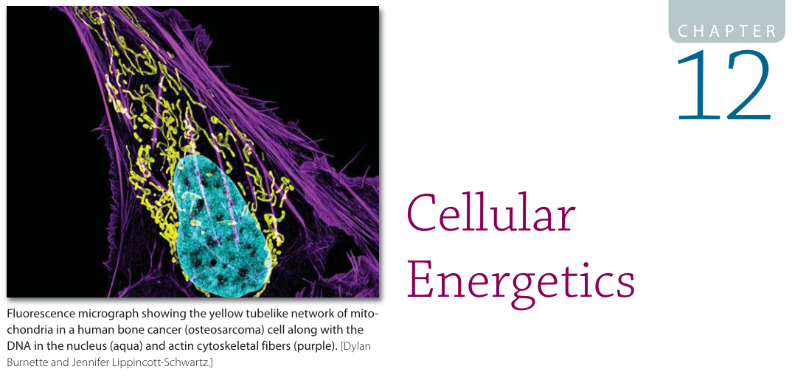
从细胞的生长与分裂，到心脏的搏动，再到支撑着思维的神经元的电活动，生命都需要能量。能量被定义为做功的能力，而在细胞层面，这种做功包括进行和调节大量化学反应与运输过程，生长与分裂，生成并维持高度有序的结构，以及与其他细胞相互作用。本章讲述细胞利用阳光或化学营养物质作为能量来源的分子机制，并特别关注细胞如何把这些外部能量来源转化为一种生物学上通用的胞内化学能载体——腺苷三磷酸（ATP）（图12-1）。ATP存在于所有类型的生物中，并且推测最早的生命形式中就已存在，它是通过把无机磷酸（HPO4
2−，常缩写为Pi）以化学方式加成到腺苷二磷酸（ADP）上而生成的，这一过程称为磷酸化。细胞利用ATP末端焦磷酸酐键水解时释放的能量（见图2-31），来驱动许多本来在能量上不利的过程。例如，由氨基酸合成蛋白质、由核苷酸合成核酸（见第4章），由ATP驱动的泵逆浓度梯度运输分子（见第11章），
肌肉的收缩（见第17章），以及纤毛的摆动（见第18章）。细胞能量学的一个核心主题是：蛋白质会利用，或者说"偶联"，某个过程（如ATP水解）释放的能量，去驱动另一个本来在热力学上不利的过程（如分子跨膜移动）。
驱动由ADP合成ATP（ΔG°′ = 7.3 kcal/mol）的能量主要有两个来源：营养物质化学键中的能量和阳光中的能量（见图12-1）。主要负责把这些能量来源转化为ATP的两个过程是：有氧氧化（又称有氧呼吸），它发生在几乎所有真核细胞的线粒体中（见图12-1，上）；以及光合作用，它只发生在叶绿体中，而叶绿体存在于植物的叶细胞（见图12-1，下）以及某些单细胞生物（如藻类和蓝细菌）中。另外两个过程，即糖酵解和柠檬酸循环（见图12-1，上），也是动物细胞和植物细胞中重要的直接或间接ATP来源。
在有氧氧化中，糖（碳水化合物）和脂肪酸（碳氢化合物）的分解产物——两者都来自动物对食物的消化——被氧（O2）氧化，转化为二氧化碳（CO2）和水
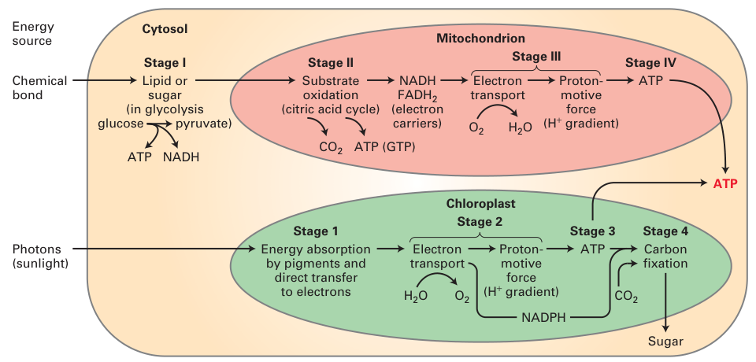
| Mitochondrion | 线粒体 |
| Chloroplast | 叶绿体 |
| Cytosol | 胞质溶胶 |
| Stage I | 阶段I |
| Stage II | 阶段II |
| Stage III | 阶段III |
| Stage IV | 阶段IV |
| Substrate | 底物 |
| oxidation | 氧化 |
| citric acid cycle | 柠檬酸循环 |
| Electron transport | 电子传递 |
| Proton-motive force (H+ gradient) | 质子动力势（H+梯度） |
| Energy source | 能量来源 |
| Chemical bond | 化学键 |
| Carbon fixation | 固碳作用 |
| Photons (sunlight) | 光子（阳光） |
| NADH | NADH |
| NADPH | NADPH |
| FADH2 | FADH2 |
（H2O）。这一总反应释放的能量被转化为ATP中焦磷酸酐键的化学能。该过程类似于燃烧木材（碳水化合物）或石油（碳氢化合物），在炉子里产生热或在汽车发动机中产生运动：两者都消耗O2并生成CO2和H2O。关键区别在于，细胞把总反应分解成许多中间步骤，使任何一步释放的能量都与能够储存的能量（例如以ATP形式）或下一步所需的能量紧密匹配。如果没有这样紧密的匹配，多释放出来的能量就会以热的形式散失（那将非常低效），或者释放的能量不足以生成ATP这类储能分子，也不足以驱动过程中的下一步（那将没有效果）。
在光合作用中，光的辐射能被叶绿素等色素吸收，用于制造ATP和碳水化合物——主要是蔗糖和淀粉。与利用碳水化合物和O2生成CO2的有氧氧化不同，光合作用以CO2为底物，并生成O2和碳水化合物作为产物。
线粒体中的有氧氧化与叶绿体中的光合作用之间的这种互反关系，构成了光合生物与非光合生物之间深刻的共生关系的基础。光合作用产生的氧是
空气中几乎全部氧气的来源，而产生的碳水化合物则是地球上几乎所有非光合生物的最终能量来源。（一个例外是生活在深海热液喷口的细菌——以及以它们为食的生物——它们通过氧化喷口释放的地质成因的还原态无机化合物，获得把CO2转化为碳水化合物所需的能量。）
乍看之下，光合作用和有氧氧化的分子机制除了都产生ATP之外，似乎没有多少共同之处。然而，细胞生物学中一项革命性的发现确立了：细菌、线粒体和叶绿体都使用同一种机制，即化学渗透，来由ADP和Pi生成ATP。在化学渗透（又称化学渗透偶联）中，电子沿电势梯度经过电子传递链向下传递时释放的能量，首先在膜两侧建立起质子电化学梯度。储存在这一质子电化学梯度中的能量被称为质子动力势，随后被用来驱动ATP的合成（图12-2）或其他需要能量的过程。当质子顺着电化学梯度通过称为ATP合酶的ATP合成酶时，ADP和Pi生成ATP，这一过程与第11章讨论的ATP驱动离子泵所介导的过程正好相反。
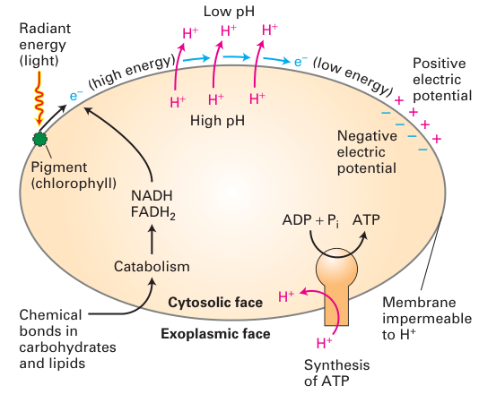
| Chemical bonds in carbohydrates and lipids | 碳水化合物和脂质中的化学键 |
| Catabolism | 分解代谢 |
| high energy | 高能 |
| low energy | 低能 |
| Low pH | 低pH |
| High pH | 高pH |
| Negative electric potential | 负电位 |
| Positive electric potential | 正电位 |
| Membrane impermeable to H+ | 膜对H+不通透 |
| Synthesis of ATP | ATP的合成 |
| Cytosolic face | 胞质面 |
| Exoplasmic face | 外质面 |
| Pigment (chlorophyll) | 色素（叶绿素） |
| Radiant energy (light) | 辐射能（光） |
| NADH | NADH |
| FADH2 | FADH2 |
本章将探讨共享这一核心机制的两种过程的分子机制，先讨论有氧氧化，再讨论光合作用。
12.1 从葡萄糖获取能量的第一步：糖酵解
在汽车发动机中，碳氢燃料以氧化、爆炸的方式，在一个基本上一步完成的反应中被转化为机械功（即推动活塞）以及产物CO2和H2O。该过程的效率相对较低，因为燃料中储存的大量化学能被浪费掉了，变成了未被利用的热，而且大量燃料只是被部分氧化，就以含碳的、有时甚至有毒的尾气形式排放出去。在生存竞争中，生物体经不起把有时相当有限的能量来源浪费在同样低效的过程上，因此进化出了一种把燃料转化为
功的更高效机制。这种机制称为有氧氧化，它具有以下优点：
● 通过把能量转换过程分解成多个步骤，并生成若干携带能量的中间产物，化学键能被高效地导入ATP的合成，几乎不损失为热。
● 不同的燃料（糖和脂肪酸）都被转变成共同的中间产物，随后可以共用后续的燃烧和ATP合成途径。
● 由于起始燃料分子键中储存的总能量远大于驱动合成一个ATP分子（约7.3 kcal/mol）所需的能量，因此会生成许多个ATP分子。
由营养燃料分解为CO2和H2O（见图12-1，上）生成ATP的一个重要特征，是一组称为呼吸作用的反应，其中涉及一系列称为电子传递链的氧化还原反应。这些反应与ADP磷酸化生成ATP相组合，称为氧化磷酸化，发生在几乎所有真核细胞的线粒体中。当有氧可用、并且氧被用作经电子传递链传递的电子的最终受体时，这种把营养物能量转化为ATP的呼吸过程就称为有氧氧化或有氧呼吸。有氧氧化是把营养物能量最大限度地转化为ATP的特别高效的方式，因为O2是一种相对强力的氧化剂。如果电子传递链中电子的最终受体不是O2，而是别的分子——例如较弱的氧化剂硫酸盐（SO4
2−）或硝酸盐（NO3−）——那么该过程就称为无氧呼吸。无氧呼吸是某些原核微生物的典型特征。虽然存在例外，但大多数已知的多细胞（后生动物）真核生物都利用有氧氧化来生成其大部分ATP。
在讨论有氧氧化时，我们将追踪两种主要细胞燃料的去向：糖（主要是葡萄糖）和脂肪酸。在某些条件下——例如饥饿状态——氨基酸也会进入这些代谢途径。我们先讨论葡萄糖氧化，然后再转向脂肪酸。
一分子葡萄糖的完全有氧氧化生成6分子CO2，释放出的能量被偶联到多达30分子ATP的合成上。总反应为
真核生物中的葡萄糖氧化分四个阶段进行（见图12-1，上）：
阶段I：糖酵解 在胞质溶胶中，一分子6碳的葡萄糖经一系列反应转化为两分子3碳的
丙酮酸分子；每分子葡萄糖净产生2分子ATP。
阶段II：柠檬酸循环 在线粒体中，丙酮酸氧化为CO2与高能电子载体NADH和FADH2的生成相偶联，这些载体把能量储存起来供后续使用。这两种载体可以看作高能电子的来源。
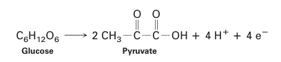
阶段III：电子传递链 高能电子沿电势梯度从NADH和FADH2流向O2，途经的膜蛋白把释放出的能量转化为质子动力势（H+梯度）。电子释放的能量把质子泵过膜，从而建立起该梯度。
阶段IV：ATP合成 当质子顺着浓度梯度和电压梯度流过嵌在线粒体膜中的ATP合成酶时，质子动力势驱动ATP的合成。每一分子初始葡萄糖经这种氧化磷酸化机制估计还可多产生28分子ATP。
本节讨论阶段I：在胞质溶胶中把葡萄糖分解为丙酮酸的生化途径。我们还将讨论这些途径如何被调节，并比较无氧条件和有氧条件下葡萄糖的代谢。丙酮酸一旦进入线粒体后的最终去向将在12.3节讨论。
在糖酵解（阶段I）中，胞质溶胶中的酶把葡萄糖转化为丙酮酸
糖酵解是葡萄糖氧化的第一阶段，在真核生物和原核生物中都发生在胞质溶胶中；它不需要分子氧（O2），因此是一个无氧过程。糖酵解是分解代谢的一个例子，即把复杂物质生物学分解为较简单物质的过程。由10种水溶性胞质溶胶酶催化的反应构成糖酵解途径（glyco，"甜"；lysis，"裂解"），其中一分子葡萄糖被转化为两分子丙酮酸（图12-3）。这些酶产生的所有反应中间产物都是水溶性的磷酸化化合物，称为代谢中间产物。除了把一分子葡萄糖化学转化为两分子丙酮酸之外，糖酵解途径还通过磷酸化4个ADP生成4分子ATP（第7步和第10步）。ATP是通过酶催化ADP与来自磷酸化代谢中间产物的Pi直接结合而形成的；这一过程称为底物水平磷酸化（以区别于在阶段III和IV中生成ATP的氧化磷酸化）。糖酵解中的底物水平磷酸化不涉及质子动力势的使用，它需要事先（在第1步和第3步中）从两分子ATP加上两个磷酸基。这些添加可以看作"泵启动"反应，先投入一点能量，
以便在下游有效地回收更多能量。因此，糖酵解每分子葡萄糖净产生仅两分子ATP。
葡萄糖转化为丙酮酸的配平化学方程式表明，同时还有四个氢原子（四个质子和四个电子）被释放出来：
（为方便起见，这里把丙酮酸写成其未解离形式，即丙酮酸；不过在生理pH下它大部分会解离。）全部四个电子以及四个质子中的两个被转移（见图12-3，第6步）到两分子氧化型烟酰胺腺嘌呤二核苷酸（NAD+）上，生成该辅酶的还原型，即NADH（见图2-33a）：
后面我们会看到，NADH中电子所携带的能量，以及类似的电子载体FADH2（辅酶黄素腺嘌呤二核苷酸（FAD）的还原型，见图2-33b）所携带的能量，可以通过电子传递链用来制造额外的ATP。葡萄糖代谢第一阶段的总化学方程式为
糖酵解之后，葡萄糖中可供利用的能量只有一小部分被提取出来并转化为ATP和NADH。其余部分仍被束缚在两分子丙酮酸的共价键中。能否有效地把丙酮酸中剩余的能量转化为ATP，取决于是否有分子氧存在。我们将会看到，有氧条件下的能量转换效率远高于无氧条件。
糖酵解的速率经过调整以满足细胞对ATP的需求
为维持适当的ATP水平，细胞必须控制葡萄糖分解代谢的速率。糖酵解途径（阶段I）以及柠檬酸循环（阶段II）的运行都受到持续调节，且主要是通过别构机制（关于别构控制的一般原理见第3章）。参与糖酵解的三种别构酶在调节整条糖酵解途径中起关键作用。己糖激酶（见图12-3，第1步）被其反应产物6-磷酸葡萄糖抑制。丙酮酸激酶（第10步）被ATP抑制，因此ATP过多时糖酵解会减慢。第三种酶，即磷酸果糖激酶-1（第3步），是糖酵解途径主要的限速酶。以一种体现其在调节糖酵解速率中关键作用的方式，
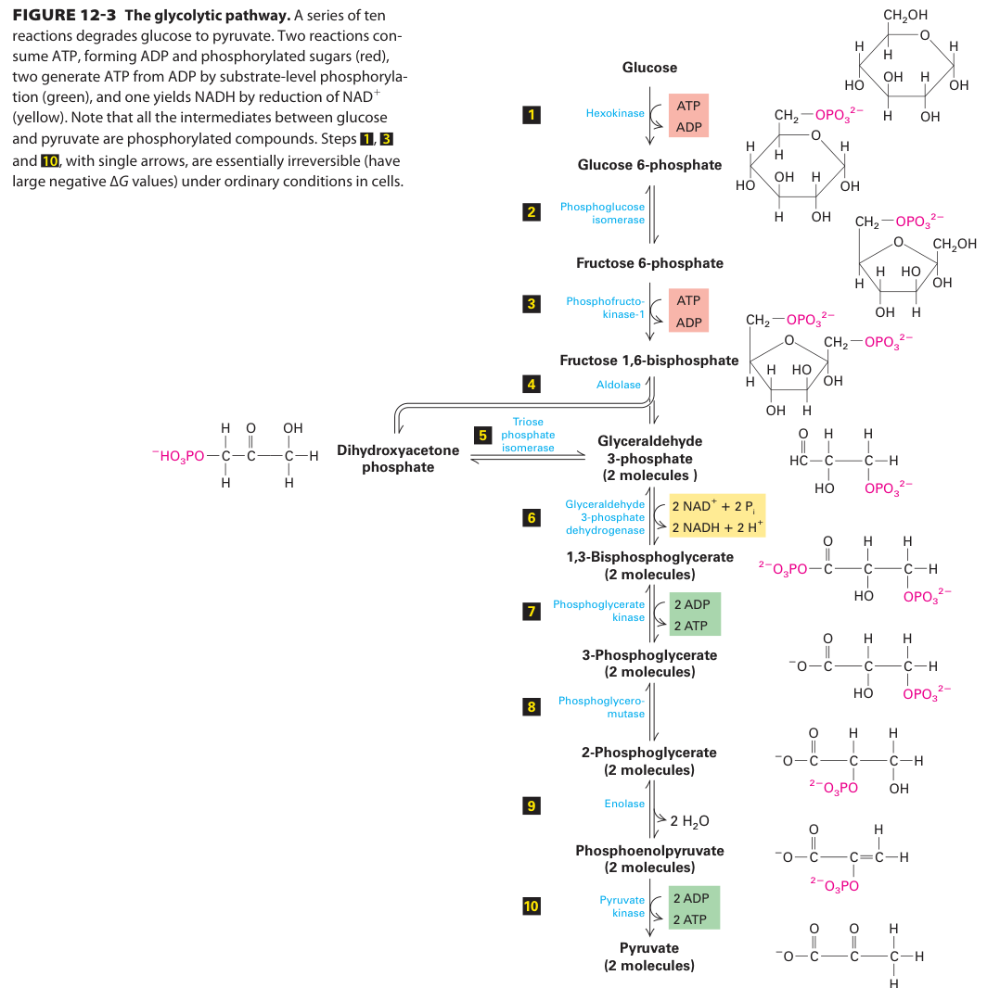
| Glucose | 葡萄糖 |
| Glucose 6-phosphate | 6-磷酸葡萄糖 |
| Fructose 6-phosphate | 6-磷酸果糖 |
| Fructose 1,6-bisphosphate | 果糖-1,6-二磷酸 |
| Dihydroxyacetone phosphate | 磷酸二羟丙酮 |
| Glyceraldehyde 3-phosphate (2 molecules) | 甘油醛-3-磷酸（2分子） |
| 1,3-Bisphosphoglycerate (2 molecules) | 1,3-二磷酸甘油酸（2分子） |
| 3-Phosphoglycerate (2 molecules) | 3-磷酸甘油酸（2分子） |
| 2-Phosphoglycerate (2 molecules) | 2-磷酸甘油酸（2分子） |
| Phosphoenolpyruvate (2 molecules) | 磷酸烯醇式丙酮酸（2分子） |
| Pyruvate (2 molecules) | 丙酮酸（2分子） |
| Hexokinase | 己糖激酶 |
| Phosphoglucose isomerase | 磷酸葡萄糖异构酶 |
| Phosphofructokinase-1 | 磷酸果糖激酶-1 |
| Aldolase | 醛缩酶 |
| Triose phosphate isomerase | 磷酸丙糖异构酶 |
| Glyceraldehyde 3-phosphate dehydrogenase | 甘油醛-3-磷酸脱氢酶 |
| Phosphoglycerate kinase | 磷酸甘油酸激酶 |
| Phosphoglyceromutase | 磷酸甘油酸变位酶 |
| Enolase | 烯醇化酶 |
| Pyruvate kinase | 丙酮酸激酶 |
| NAD+ | NAD+ |
| NADH | NADH |
这种酶受到多种分子的别构控制（图12-4）。
例如，磷酸果糖激酶-1被ATP别构抑制，被腺苷一磷酸（AMP）别构激活。因此，糖酵解的速率对细胞的能荷非常敏感；能荷是带有"高能"焦磷酸酐键的腺苷磷酸占总腺苷磷酸的比例，等于[(ATP) + 0.5 (ADP)]/[(ATP) + (ADP) + (AMP)]。ATP对磷酸果糖激酶-1的别构抑制可能显得有些反常，因为ATP同时也是该酶的底物。但底物结合位点对ATP的亲和力比别构位点高得多（Km更低）。因此在低浓度下，ATP结合到催化位点，而不结合到抑制性别构位点，酶催化以接近最大的速率进行。在高浓度下，ATP也会结合到别构位点，诱导构象变化，降低酶对另一种底物6-磷酸果糖的亲和力，从而降低该反应的速率和糖酵解的总速率。
磷酸果糖激酶-1的另一个重要别构激活剂是果糖-2,6-二磷酸。这种代谢物由一种称为磷酸果糖激酶-2的酶从6-磷酸果糖生成。6-磷酸果糖加速果糖-2,6-二磷酸的生成，后者又激活磷酸果糖激酶-1。这类控制称为前馈激活，即某种代谢物（这里是6-磷酸果糖）含量高时会加速其后续的代谢。果糖-2,6-二磷酸通过别构方式
在肝细胞中激活磷酸果糖激酶-1，其方式是降低高浓度ATP的抑制效应，并提高磷酸果糖激酶-1对其一种底物6-磷酸果糖的亲和力。
受别构调节的这三种糖酵解酶所催化的反应具有很大的负ΔG°′值——在通常条件下这些反应基本上是不可逆的。因此这些酶特别适合
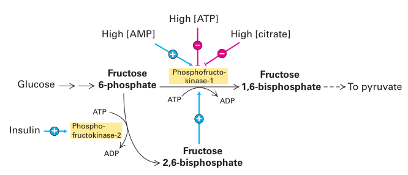
| Glucose | 葡萄糖 |
| Fructose 6-phosphate | 6-磷酸果糖 |
| Fructose 1,6-bisphosphate | 果糖-1,6-二磷酸 |
| Fructose 2,6-bisphosphate | 果糖-2,6-二磷酸 |
| Phosphofructokinase-1 | 磷酸果糖激酶-1 |
| Phosphofructokinase-2 | 磷酸果糖激酶-2 |
| High [ATP] | 高[ATP] |
| High [AMP] | 高[AMP] |
| High [citrate] | 高[柠檬酸] |
| To pyruvate | 生成丙酮酸 |
| Insulin | 胰岛素 |
调节整条糖酵解途径。另有一层控制由甘油醛-3-磷酸脱氢酶施加，它催化NAD+还原为NADH（见图12-3，第6步）。我们将会看到，NADH是一种高能电子载体，随后在线粒体的氧化磷酸化中被使用。如果由于线粒体氧化减慢而使胞质溶胶中的NADH积累，第6步在热力学上就变得不那么有利。
在各种哺乳动物组织中，葡萄糖代谢受到不同的控制，以满足整个生物体的代谢需要。例如在碳水化合物匮乏的时期，肝脏必须把葡萄糖释放到血流中。为此，肝脏把聚合物糖原（一种葡萄糖的储存形式，见第2章）直接转化为6-磷酸葡萄糖（不涉及己糖激酶，第1步）。在这些条件下，果糖-2,6-二磷酸水平降低，磷酸果糖激酶-1活性下降（见图12-4）。结果，来自糖原的6-磷酸葡萄糖不会被代谢为丙酮酸；相反，它被一种磷酸酶转化为葡萄糖并释放到血液中，以滋养主要依赖葡萄糖供能的脑和红细胞。在所有情况下，这些受调节酶的活性都由小分子代谢物的水平控制，一般是通过别构相互作用，或通过激素介导的磷酸化和去磷酸化反应。（第15章会更详细地讨论肝脏和肌肉中葡萄糖代谢的激素控制。）
氧不足时葡萄糖进行发酵
包括人类在内的许多真核生物是专性需氧生物：它们只在有分子氧时才能生长，并且能把葡萄糖（或相关糖类）完全代谢为CO2，同时产生大量ATP。然而，大多数真核生物都能通过无氧代谢产生一些
ATP。少数真核生物是兼性厌氧生物：在有氧或无氧条件下都能生长。例如，环节动物（分节蠕虫）、软体动物和某些酵母可以在无氧条件下生存，依靠发酵产生的ATP。
在无氧条件下，酵母把糖酵解产生的丙酮酸转化为各一分子的乙醇和CO2；在这些反应中，每有两分子丙酮酸转化为乙醇，就有两分子NADH被氧化为NAD+，从而再生NAD+的供应，而NAD+是糖酵解得以继续所必需的（图12-5a，左）。这种葡萄糖的无氧分解代谢称为发酵，是啤酒和葡萄酒生产的基础。
动物细胞中也会发生发酵，不过产物是乳酸而不是酒精。在哺乳动物骨骼肌细胞长时间收缩时——例如运动期间——肌肉组织内的氧可能变得稀缺。结果，葡萄糖分解代谢被限制在糖酵解，肌细胞通过一个还原反应把丙酮酸转化为两分子乳酸，同时把两分子NADH氧化为两分子NAD+（图12-5a，右）。虽然乳酸会从肌肉释放到血液中，但如果收缩足够快而强，乳酸会在组织中短暂积累，造成运动时的肌肉和关节疼痛。乳酸一旦分泌到血液中，其中一部分进入肝脏，在肝脏中被重新氧化为丙酮酸，或者在有氧条件下进一步代谢为CO2，或者再转化为葡萄糖。大量乳酸被心脏代谢为CO2，因为心脏血流灌注充分，在运动、缺氧的骨骼肌分泌乳酸的时刻仍能继续有氧代谢。如果血液中积累的乳酸过多，这种酸会导致血液pH不健康地下降（乳酸酸中毒）。乳酸菌（使牛奶变质的微生物）和其他原核生物也通过把葡萄糖发酵为乳酸来产生ATP。
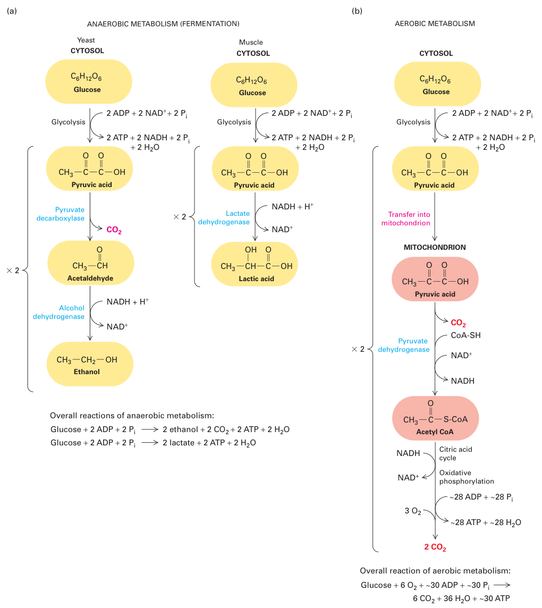
| Yeast | 酵母 |
| Muscle | 肌肉 |
| Cytosol | 胞质溶胶 |
| Mitochondrion | 线粒体 |
| Glycolysis | 糖酵解 |
| Pyruvate | 丙酮酸 |
| Pyruvate dehydrogenase | 丙酮酸脱氢酶 |
| Pyruvate decarboxylase | 丙酮酸脱羧酶 |
| CoA-SH | 辅酶A（CoA-SH） |
| Acetyl CoA | 乙酰辅酶A |
| Citric acid cycle | 柠檬酸循环 |
| Acetaldehyde | 乙醛 |
| Ethanol | 乙醇 |
| Alcohol dehydrogenase | 醇脱氢酶 |
| Lactic acid | 乳酸 |
| Lactate dehydrogenase | 乳酸脱氢酶 |
| Oxidative phosphorylation | 氧化磷酸化 |
| Anaerobic metabolism (fermentation) | 无氧代谢（发酵） |
| Aerobic metabolism | 有氧代谢 |
| Transfer into mitochondrion | 转运进线粒体 |
| Overall reactions of anaerobic metabolism | 无氧代谢的总反应 |
| Overall reaction of aerobic metabolism | 有氧代谢的总反应 |
| NAD+ | NAD+ |
| NADH | NADH |
发酵产生ATP的效率远低于有氧氧化，因此在动物细胞中只有在氧稀缺时才发生。有氧时，糖酵解形成的丙酮酸被转运进线粒体，在那里经图12-5b所述的一系列反应被O2氧化为CO2和H2O。这种葡萄糖的有氧代谢发生在图12-1所述过程的阶段II–IV，每分子初始葡萄糖估计还可多产生28分子ATP，远远超过无氧葡萄糖代谢（发酵）的ATP产量。
要理解有氧氧化为何能如此高效地生成ATP，我们必须先考察负责这一过程的细胞器——线粒体——的结构与功能。线粒体以及其中发生的反应是下一节的主题。
- 在一个称为有氧氧化的过程中，细胞把氧化葡萄糖或脂肪酸所释放的能量转化为ATP的末端焦磷酸酐键。
- 每分子葡萄糖的完全有氧氧化生成6分子CO2和大约30分子ATP。整个过程从胞质溶胶开始、在线粒体中完成，可分为四个阶段：（I）在胞质溶胶中把葡萄糖降解为丙酮酸（糖酵解）；（II）在线粒体中把丙酮酸氧化为CO2，并与高能电子载体NADH和FADH2的生成相偶联（通过柠檬酸循环）；（III）电子传递生成质子动力势，同时把分子氧转化为水；（IV）ATP合成（见图12-1）。每分子葡萄糖由阶段I生成2分子ATP，由阶段II–IV生成约28分子。
- 在糖酵解（阶段I）中，胞质溶胶中的酶把葡萄糖转化为两分子丙酮酸，并各生成两分子NADH和ATP（见图12-3）。
- 经糖酵解进行的葡萄糖氧化速率，通过抑制或激活若干种酶来调节，具体取决于细胞对ATP的需求（见图12-4）。例如，当ATP充足时，葡萄糖以糖原的形式储存。
- 在无氧（厌氧条件）下，细胞可以把丙酮酸代谢为乳酸，或者（在酵母中）代谢为乙醇和CO2，在此过程中把NADH转回NAD+，而NAD+是糖酵解得以继续所必需的。在有氧（需氧条件）下，丙酮酸被转运进线粒体，在那里被代谢为CO2，同时生成大量ATP（见图12-5）。
12.2 线粒体的结构与功能
产氧的光合蓝细菌最早出现在约27亿年前。在随后大约10亿年里，氧气在地球大气中逐渐积累，为生物进化出非常高效的有氧氧化途径开辟了道路，这反过来又使得大型而复杂的身体形态及相关代谢活动得以进化，尤其是在所谓的寒武纪大爆发期间。在真核细胞中，有氧氧化由线粒体完成（第II–IV阶段）。实际上，线粒体就是产生ATP的工厂，充分利用这种充足的氧气。我们先描述它们的结构、动态变化和多种功能，然后介绍它们降解丙酮酸并生成ATP所采用的各类反应。
线粒体是多功能细胞器
线粒体（图12-6）是真核细胞中较大的细胞器之一。单个线粒体的大小与一个大肠杆菌（E. coli）相仿，这并不奇怪，因为正如我们将在下文看到的，细菌被认为是线粒体的进化前身。大多数真核细胞含有许多线粒体，它们可以彼此融合，并可能共同占据细胞质体积的多达25%。一个细胞中线粒体的数量——在哺乳动物细胞中为数百到数千个——受到调节，以匹配细胞对ATP的需求（例如，分泌酸需要消耗大量ATP的特化胃壁细胞就含有许多线粒体）。
尽管本章的重点是线粒体产生ATP的机制，但重要的是要认识到，线粒体参与多种关键的细胞过程（表12-1）。线粒体参与许多小分子的生物合成。在若干情况下，这些生物合成途径中的某些步骤发生在线粒体内部，另一些则发生在线粒体之外（线粒体外步骤），因此需要前体和产物通过转运蛋白进出线粒体。例如，在许多真核生物中，线粒体承担着血红素生物合成的第一个限速步骤。该第一步的产物随后被输出到细胞质中进行进一步修饰，生成一种前体，该前体又必须被输入线粒体以完成最后的步骤。细胞质中许多小分子的生物合成都依赖于线粒体。线粒体向细胞质提供小分子有机化合物——例如柠檬酸、异柠檬酸、苹果酸、甲酸和α-酮戊二酸——它们可用于生成NADPH（一种能源）、乙酰辅酶A（一种碳源），或用于线粒体外合成谷胱甘肽、嘌呤、脂肪酸和胆固醇等分子的其他前体。
线粒体具有两层在结构和功能上不同的膜
线粒体结构的细节（见图12-6）可以通过电子显微镜观察到（见图1-20）。
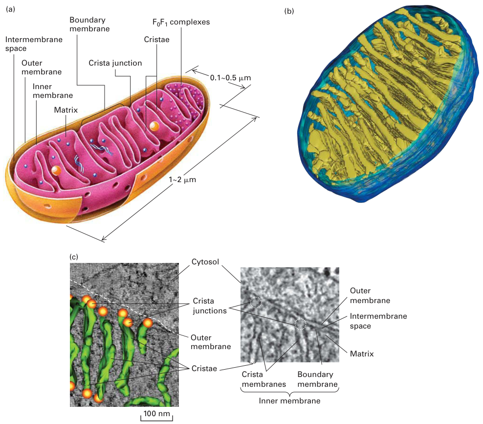
| Intermembrane space | 膜间隙 |
| Outer membrane | 外膜 |
| Inner membrane | 内膜 |
| Boundary membrane | 边界膜 |
| Cristae | 嵴 |
| Crista junction | 嵴连接 |
| Crista membranes | 嵴膜 |
| Matrix | 基质 |
| Cytosol | 细胞质 |
| F0F1 complexes | F0F1复合体 |
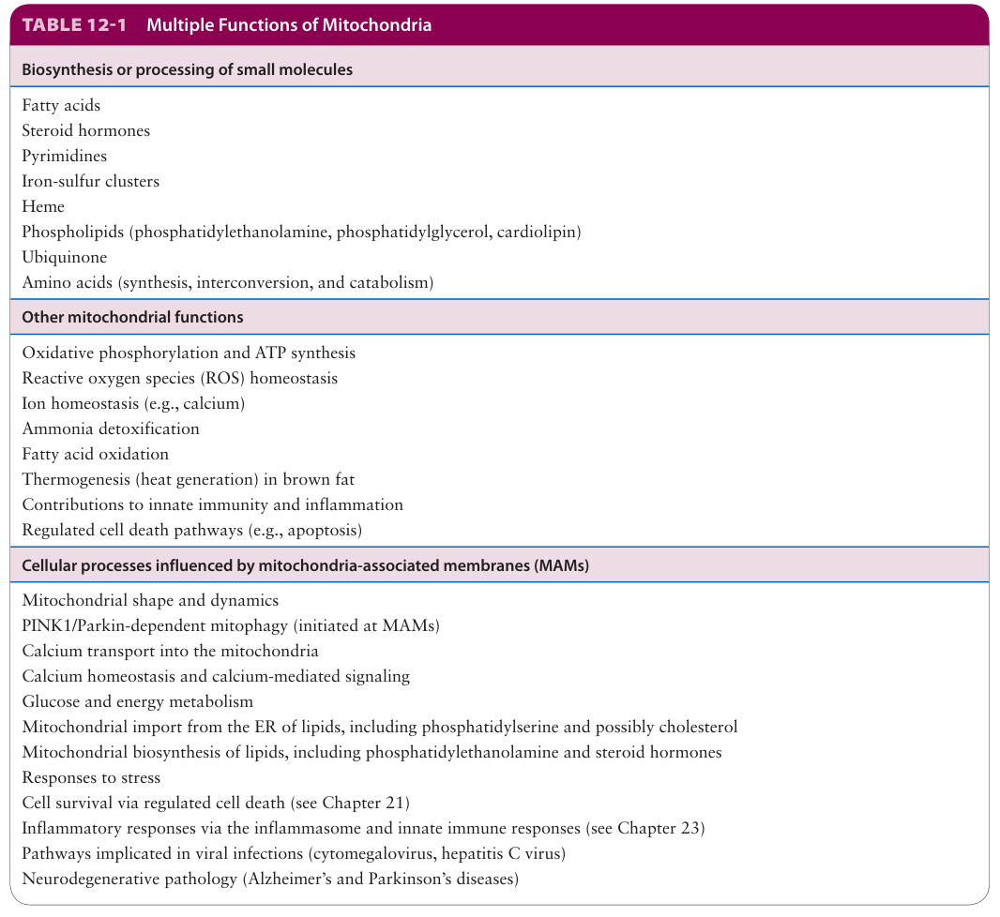
| Fatty acids | 脂肪酸 |
| Steroid hormones | 类固醇激素 |
| Pyrimidines | 嘧啶 |
| Iron-sulfur clusters | 铁硫簇 |
| Heme | 血红素 |
| Phospholipids | 磷脂 |
| Ubiquinone | 泛醌 |
| Amino acids | 氨基酸 |
| Oxidative phosphorylation and ATP synthesis | 氧化磷酸化与ATP合成 |
| Reactive oxygen species (ROS) homeostasis | 活性氧（ROS）稳态 |
| Ammonia detoxification | 氨解毒 |
| Fatty acid oxidation | 脂肪酸氧化 |
| Thermogenesis (heat generation) in brown fat | 棕色脂肪中的产热（生热） |
| Regulated cell death pathways (e.g., apoptosis) | 受调控的细胞死亡途径（如细胞凋亡） |
| Mitochondrial shape and dynamics | 线粒体形态与动态变化 |
每个线粒体都有两层截然不同、同心排列的膜：线粒体内膜和外膜。线粒体外膜构成线粒体光滑的外围边界。线粒体内膜紧贴在外膜下方。线粒体内膜是一层单一的连续膜，它本身可被视为具有三个在组成和结构上不同的结构域。边界膜是与外膜紧邻并位于其内侧的平坦内膜。嵴是众多从周边的边界膜向线粒体中心延伸的内陷结构。内膜边界膜与一个嵴之间的连接称为嵴连接（图12-6a和c）。
嵴的长度及其结构（可呈管状，也可呈扁平薄饼状）在线粒体内部可以各不相同。嵴连接以及嵴的边缘和末端都高度弯曲。嵴连接的弯曲（见图12-6c）是由一个称为MICOS（线粒体接触位点与嵴组织系统）的蛋白复合体造成的，它含有一个整体膜蛋白亚基，该亚基能同源寡聚并使内膜弯曲，从而产生高度弯曲。MICOS还通过与外膜相关蛋白结合，介导外膜与内膜的紧密并置。此外，MICOS似乎还起到扩散屏障的作用，防止边界膜和嵴膜中不同蛋白质与脂质的混合。我们将在
12.5节讨论嵴边缘和末端处弯曲的分子基础。
外膜和内膜在拓扑上界定出两个线粒体亚区室：位于外膜与内膜之间的膜间隙，以及基质（即中央区室），后者构成内膜以内的腔（见图12-6a）。许多直接参与把营养物质中的能量转化为ATP中储存能量的蛋白质，例如电子传递链的蛋白质和ATP合酶，都位于线粒体内膜上。向内凹陷的嵴极大地扩展了线粒体内膜的表面积，从而提高了线粒体合成ATP的能力。例如，在典型的肝线粒体中，包括嵴在内的内膜面积约为外膜面积的5倍。事实上，肝细胞中所有线粒体内膜的总面积约为质膜面积的17倍。心脏和骨骼肌的线粒体所含的嵴是典型肝线粒体的3倍——这大概反映了肌细胞对ATP有更高的需求。
对线粒体各膜和区室进行分级分离与纯化，使得测定它们的蛋白质、DNA和磷脂组成，并把每一种酶催化的反应定位到特定的膜或区室成为可能。构建和维持线粒体并使其行使功能，需要一千多种不同的多肽。详尽的生化分析已经确定，哺乳动物线粒体中至少有1098种蛋白质，也许多达1500种。这些线粒体相关蛋白质的功能缺陷——例如由遗传突变引起——会导致250多种人类疾病。其中最常见的是电子传递链疾病，它们由150个基因中任何一个发生突变所引起，表现出极其多样的临床异常，涉及肌肉、心脏、神经系统和肝脏等生理系统。其他线粒体相关疾病包括导致多种解剖畸形的Miller综合征，以及结缔组织缺陷。
线粒体外膜中最丰富的蛋白质是一种称为VDAC（电压依赖性阴离子通道）的线粒体β桶孔蛋白，它是一种多功能的跨膜通道蛋白，在结构上与细菌孔蛋白相似（见图7-18）。当这些通道蛋白开放时，离子和大多数小的亲水分子（最大约5000 Da）可以轻松通过。尽管线粒体孔蛋白的开放以及由此造成的代谢物跨外膜流动可能存在代谢调控，但内膜才是细胞质与线粒体基质之间的主要通透屏障，控制着线粒体氧化和ATP生成的速率。
蛋白质占线粒体内膜总质量的76%——这一比例高于任何其他细胞膜。这些蛋白质中有许多是氧化磷酸化的关键参与者。它们包括ATP合酶、负责电子传递的蛋白质，以及种类繁多的
转运蛋白，后者使代谢物能够在细胞质与线粒体基质之间移动。人类基因组编码线粒体转运蛋白某一家族的48个成员。其中之一是ADP/ATP载体，它是一种反向转运蛋白，把新合成的ATP从基质运出、送入膜间隙（随后进入细胞质），以换取来自细胞质的ADP。若没有这种必需的反向转运蛋白，基质中生成的线粒体ATP在其化学键中所储存的能量就无法供细胞其余部分使用。
请记住，植物和动物一样，也有线粒体并进行有氧氧化。在植物中，储存的碳水化合物（主要以淀粉形式存在）被水解为葡萄糖。随后糖酵解产生丙酮酸，与动物细胞一样被转运进入线粒体。在光合细胞中，丙酮酸的线粒体氧化以及同时发生的ATP生成，发生在无法进行光合作用的暗期；在根和其他非光合组织中则始终进行。
线粒体内膜和基质是大多数反应发生的场所，这些反应涉及把丙酮酸和脂肪酸氧化为CO2和H2O，以及由ADP和Pi偶联合成ATP。这些反应各自发生在线粒体中一个独立的膜或空间内（见下文图12-16）。
线粒体含有位于基质中的DNA
尽管大多数真核生物中绝大多数DNA存在于细胞核中，但动物、植物和真菌的线粒体内，以及植物的叶绿体内，也存在一些DNA。大量证据表明，线粒体和叶绿体是由被含有真核细胞核的祖先细胞吞噬的真细菌进化而来的，从而形成内共生体（图12-7）。在进化过程中，大多数细菌基因从细胞器DNA中丢失。有些基因，例如编码参与核苷酸、脂质和氨基酸生物合成的蛋白质的基因，之所以丢失，是因为其功能已由宿主细胞核中的基因提供。另一些编码现今细胞器组分的基因则被转移到细胞核。然而，当今真核生物的线粒体和叶绿体仍保留着编码某些对细胞器功能至关重要的蛋白质的DNA，以及合成这些蛋白质所需的核糖体RNA和转运RNA。因此，真核细胞具有多套遗传系统：一套占主导的核系统，以及线粒体和叶绿体中各自拥有DNA、核糖体和tRNA的次级系统。
线粒体DNA（mtDNA）位于线粒体基质中（见图12-6）。从mtDNA的黄色荧光"点"的数量判断，一个纤细眼虫（Euglena gracilis）细胞——一种简单的单细胞真核生物——至少含有30个mtDNA分子（图12-8）。利用延时显微技术可以在活细胞中追踪mtDNA的复制和线粒体的分裂。这类研究表明，在大多数生物中，mtDNA在整个间期都在复制。在有丝分裂时，每个子细胞获得大致相同
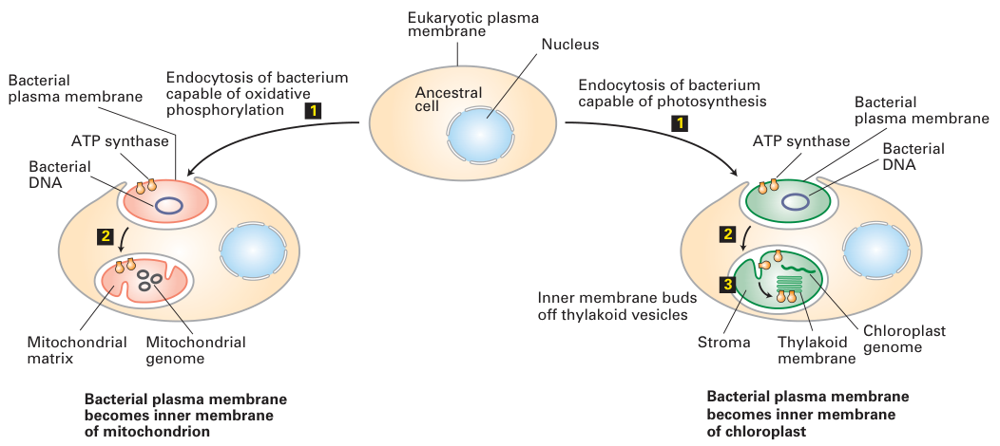
| Bacterial DNA | 细菌DNA |
| ATP synthase | ATP合酶 |
| Bacterial plasma membrane | 细菌质膜 |
| Chloroplast genome | 叶绿体基因组 |
| Ancestral cell | 祖先细胞 |
| Eukaryotic plasma membrane | 真核质膜 |
| Nucleus | 细胞核 |
| Mitochondrial matrix | 线粒体基质 |
| Mitochondrial genome | 线粒体基因组 |
| Thylakoid membrane | 类囊体膜 |
| Stroma | 基质 |
| F1 subunit | F1亚基 |
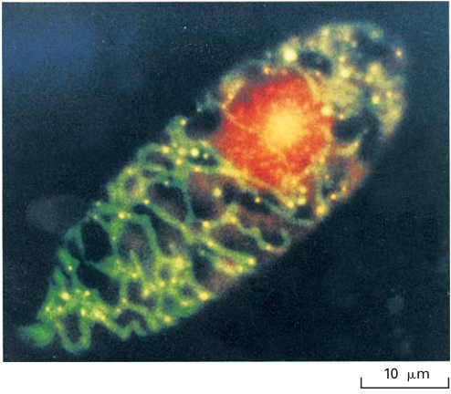
数量的线粒体，但由于并不存在把完全相等数量的线粒体分配给子细胞的机制，因此有些细胞所含的mtDNA比另一些多。所以，一个细胞中mtDNA的总量取决于线粒体的数量、mtDNA分子的大小，以及每个线粒体中mtDNA分子的数目。这些参数在不同细胞类型之间差异很大。在典型的人类细胞中，每个细胞核大约有1000–2000个mtDNA分子；然而，人类卵子约有500000个mtDNA分子，而精子只有约100个。
对酵母和其他单细胞生物突变体的研究最早表明，线粒体表现出细胞质遗传（图12-9）。例如，带有petite突变的酵母细胞其线粒体结构异常，并且不能进行氧化磷酸化。结果，petite细胞比野生型细胞生长更慢，形成的菌落更小。不同（单倍体）酵母菌株之间的遗传杂交表明，petite突变并不与任何已知的核基因或染色体一起分离。在后来的研究中发现，大多数petite突变体含有mtDNA缺失。
在单倍体酵母细胞通过融合进行交配时，双亲对所形成的二倍体的细胞质贡献相同；因此线粒体的遗传是双亲的（见图12-9a）。然而，在哺乳动物和大多数其他多细胞生物中，精子向受精卵贡献的细胞质很少（如果有的话），胚胎中几乎所有的线粒体都来自卵子，而非精子。对小鼠的研究表明，99.99%的mtDNA是母系遗传的，但有一小部分（0.01%）是
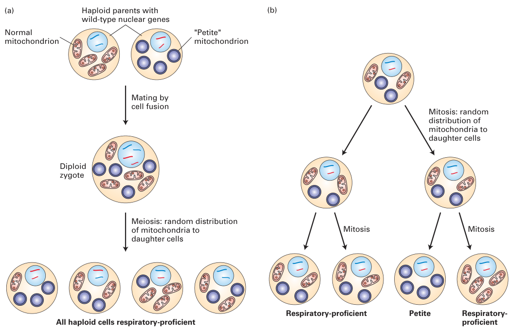
| Mating by cell fusion | 通过细胞融合交配 |
| Haploid parents with wild-type nuclear genes | 具有野生型核基因的单倍体亲本 |
| Normal mitochondrion | 正常线粒体 |
| Diploid zygote | 二倍体合子 |
| Meiosis: random distribution of mitochondria to daughter cells | 减数分裂：线粒体随机分配到子细胞 |
| Mitosis: random distribution of mitochondria to daughter cells | 有丝分裂：线粒体随机分配到子细胞 |
| Petite mitochondrion | petite线粒体 |
| All haploid cells respiratory-proficient | 所有单倍体细胞均具呼吸能力 |
| Respiratory-proficient | 具呼吸能力 |
| Petite | petite |
来自父本的。在高等植物中，mtDNA完全以单亲方式通过母本（卵）遗传，而不通过父本（花粉）。
mtDNA的大小、结构和编码能力在不同生物之间差异很大
令人惊讶的是，mtDNA的大小、它所编码蛋白质的数量和性质，甚至线粒体遗传密码本身，在不同生物之间都差异很大。大多数多细胞动物的mtDNA是约16 kb的环状分子，其编码的无内含子基因紧凑地排列在两条DNA链上。脊椎动物的mtDNA编码线粒体核糖体中的两种rRNA、用于翻译线粒体mRNA的22种tRNA，以及13种参与电子传递和ATP合成的蛋白质。已知最小的线粒体基因组存在于疟原虫（Plasmodium）中，该属是单细胞的专性胞内寄生生物，在人类中引起疟疾。疟原虫
的mtDNA只有约6 kb，编码三种蛋白质和线粒体rRNA。
目前已对若干不同后生动物的线粒体基因组进行了测序，结果显示，所有这些来源的mtDNA都编码在线粒体核糖体上合成的必需线粒体蛋白质（图12-10）。迄今为止鉴定出的大多数线粒体合成的多肽，都是用于电子传递或ATP合成的多亚基复合体的亚基。然而，定位于线粒体的大多数蛋白质，例如参与图12-10顶部和表12-1所列过程的那些蛋白质，是由核基因编码、在细胞质核糖体上合成，并通过第13章讨论的过程输入细胞器的。
植物线粒体基因组比后生动物的线粒体基因组大许多倍。例如，拟南芥（Arabidopsis thaliana）是芥菜类杂草家族的一员，其mtDNA有366 kb。已知最大的线粒体基因组约为2 Mb，存在于葫芦科植物（如甜瓜和黄瓜）中。植物的大部分
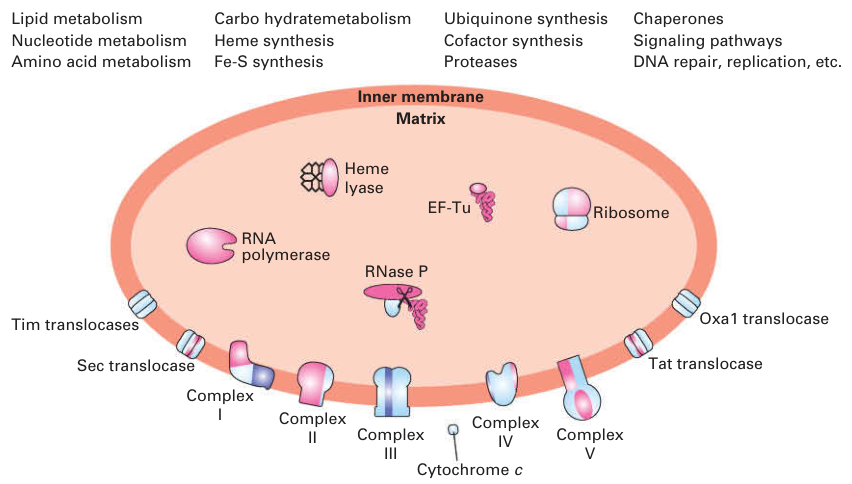
| RNA polymerase | RNA聚合酶 |
| RNase P | RNase P |
| Ribosome | 核糖体 |
| Tim translocases | Tim转位酶 |
| Sec translocase | Sec转位酶 |
| Tat translocase | Tat转位酶 |
| Oxa1 translocase | Oxa1转位酶 |
| Lipid metabolism | 脂质代谢 |
| Nucleotide metabolism | 核苷酸代谢 |
| Amino acid metabolism | 氨基酸代谢 |
| Carbohydrate metabolism | 糖类代谢 |
| Heme synthesis | 血红素合成 |
| Fe-S synthesis | 铁硫簇合成 |
| Inner membrane | 内膜 |
| Matrix | 基质 |
mtDNA并不编码蛋白质，而是由长内含子、假基因、局限于线粒体区室的移动DNA元件，以及在进化过程中可能插入植物线粒体基因组的外源（叶绿体、细胞核和病毒）DNA片段组成。重复序列也使植物mtDNA的长度进一步增加。
不同生物mtDNA中基因数目的差异，很可能反映了进化过程中DNA在线粒体与细胞核之间的移动。这种移动的直接证据来自一个观察：某些物种中由mtDNA编码的若干蛋白质，在另一些近缘物种中却由核DNA编码。一个引人注目的例子涉及coxII基因，它编码细胞色素c氧化酶的亚基2，而该酶构成线粒体电子传递链中的复合体IV（详见下文）。在被研究过的所有多细胞植物中，该基因都存在于mtDNA中，只有某些近缘的豆科物种例外——包括绿豆和大豆，它们的coxII基因位于细胞核中。绿豆mtDNA中完全缺失coxII基因，但在大豆mtDNA中仍能识别出一个已累积许多突变的有缺陷的coxII假基因。
植物线粒体基因的许多RNA转录本会被编辑，主要是通过酶催化把选定的C残基转换为U，偶尔也把U转换为C。（RNA编辑在第10章讨论。）事实上，绿豆的核coxII基因与
其他具有功能性coxII mtDNA的豆科植物中经过编辑的coxII mtDNA编码mRNA转录本的相似度，高于与其未编辑的mtDNA编码coxII基因的相似度。这些观察是有力证据，表明coxII基因在绿豆的进化过程中从线粒体转移到细胞核，该过程涉及一个经过编辑的mRNA中间体。据推测，这种转移涉及逆转录机制以及插入核染色体。这一过程类似于由核编码mRNA在核基因组中生成加工型假基因的过程。
除了真核生物之间线粒体基因组大小的巨大差异之外，mtDNA的结构也变化很大。如上所述，大多数动物的mtDNA是6–16 kb的环状分子。然而，许多生物（如原生生物四膜虫Tetrahymena）的mtDNA以首尾相接的线性重复形式存在。在最极端的例子中，原生生物Amoebidium parasiticum的mtDNA由数百个不同的短线性分子组成。而锥虫（Trypanosoma）的mtDNA则由多个大环（maxicircle）与数千个小环（minicircle）连锁（互锁）而成，小环编码参与编辑由大环编码的线粒体mRNA序列的向导RNA。
线粒体基因的产物不会被输出
就目前所知，mtDNA的所有RNA转录本及其翻译产物都留在产生它们的那个线粒体
中，并且所有mtDNA编码的蛋白质都在线粒体核糖体上合成。线粒体DNA编码构成线粒体核糖体的rRNA，尽管大多数核糖体蛋白质是从细胞质输入的。在动物和真菌中，线粒体中蛋白质合成所用的全部tRNA也都由mtDNA编码。然而，在植物和许多原生动物中，大多数线粒体tRNA由核DNA编码并输入线粒体。
线粒体的细菌起源反映在其核糖体上：线粒体核糖体与细菌核糖体相似，而在RNA和蛋白质组成、大小以及对某些抗生素的敏感性方面与真核细胞质核糖体不同（见表5-3）。例如，氯霉素能阻断大多数生物的细菌核糖体和线粒体核糖体的蛋白质合成，而抑制真核细胞质核糖体蛋白质合成的放线菌酮（cycloheximide）不影响线粒体核糖体。线粒体核糖体对重要的氨基糖苷类抗生素（氯霉素属于此类）的这种敏感性，是这类抗生素对患者产生毒性的主要原因。■
线粒体起源于一次涉及类立克次体细菌的单一内共生事件
对各种真核生物（包括在进化早期就与其他真核生物分化的单细胞原生生物）mtDNA序列的分析，有力地支持了线粒体只有单一起源的观点。线粒体最可能起源于一种细菌共生体，其现存的最近亲属于立克次体科（Rickettsiaceae）类群。该类群的细菌是专性胞内寄生生物。因此，线粒体的祖先很可能也过着胞内生活，这使它处于有利地位，得以进化成胞内共生体。迄今发现的编码基因数目最多的mtDNA来自原生生物
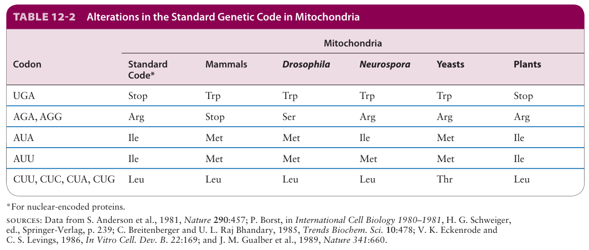
| Codon | 密码子 |
| Standard Code | 标准密码 |
| Mammals | 哺乳动物 |
| Drosophila | 果蝇 |
| Neurospora | 脉孢菌 |
| Yeasts | 酵母 |
| Plants | 植物 |
| UGA | UGA |
| AGA, AGG | AGA、AGG |
| CUU, CUC, CUA, CUG | CUU、CUC、CUA、CUG |
| Stop | 终止 |
| Trp | 色氨酸 |
| Arg | 精氨酸 |
| Ser | 丝氨酸 |
| Met | 甲硫氨酸 |
物种Reclinomonas americana。所有其他线粒体基因组都只含有R. americana基因的一个子集，这有力地表明，它们是从与R. americana共有的一个共同祖先进化而来，并随时间推移通过缺失或转移到细胞核（或两者兼有）而丢失了不同的线粒体基因群。
在mtDNA只包含有限数目基因的生物中，无论这些生物属于哪个门，保留下来的都是同一组线粒体基因（见图12-10，橙色蛋白质）。对于这些基因为何从未成功转移到核基因组，一种假说是：它们所编码的多肽过于疏水，无法穿过线粒体外膜，因此如果在细胞质中合成，就无法被重新输入线粒体。类似地，rRNA的大尺寸可能妨碍它们从细胞核经细胞质运入线粒体。另一种可能是，这些基因在进化过程中之所以没有被转移到细胞核，是因为它们响应各个线粒体内部条件来调控表达可能是有利的。如果这些基因位于细胞核中，那么每个线粒体内部的条件就无法影响该线粒体中所含蛋白质的表达。
线粒体遗传密码与标准的核密码不同
动物和真菌线粒体所用的遗传密码，不同于所有原核和真核核基因所用的标准密码；值得注意的是，不同物种线粒体的密码甚至也彼此不同（表12-2）。这些差异在进化中为何以及如何产生，仍是一个谜。例如，UGA通常是一个终止密码子，但在人和真菌的线粒体翻译系统中被读作色氨酸；然而在植物线粒体中，UGA仍被识别为终止密码子。AGA和AGG是编码精氨酸的标准核密码子，在真菌和植物的mtDNA中也编码精氨酸，但在哺乳动物mtDNA中它们是终止密码子，而在果蝇mtDNA中则是丝氨酸密码子。
如表12-2所示，植物线粒体似乎使用标准遗传密码。然而，把植物线粒体蛋白质的氨基酸序列与植物mtDNA的核苷酸序列进行比较后提示，CGG既可以编码精氨酸（"标准"氨基酸），也可以编码色氨酸。植物线粒体密码的这种表面上的不专一性，可以用线粒体RNA转录本的编辑来解释，这种编辑能把胞嘧啶残基转换为尿嘧啶残基。如果CGG序列被编辑为UGG，该密码子就指定色氨酸，即UGG的标准氨基酸，而未被编辑的CGG密码子则编码标准的精氨酸。因此，植物线粒体中的翻译系统确实使用标准遗传密码。■
线粒体DNA的突变在人类中引起若干遗传病
mtDNA突变所致疾病的严重程度，取决于突变的性质以及特定细胞类型中突变型与野生型mtDNA的比例。一般来说，当发现mtDNA突变时，细胞中同时含有野生型和突变型mtDNA的混合物——这种状态称为异质性（heteroplasmy）。哺乳动物体细胞或生殖细胞每次分裂时，突变型和野生型mtDNA都会随机分配到子细胞中，就像在酵母细胞中发生的那样（见图12-9b）。因此，mtDNA基因型会从一个世代、一次细胞分裂到下一次发生波动，并可能漂移为以野生型为主或以突变型为主。由于哺乳动物线粒体复制和生长所需的所有酶，例如线粒体DNA聚合酶和RNA聚合酶，都由细胞核编码并从细胞质输入，因此突变型mtDNA不应处于"复制劣势"；带有大段mtDNA缺失的突变体甚至可能具有选择优势，因为它们复制得更快。
近年来的研究提示，mtDNA突变的积累是哺乳动物衰老的一个重要组成部分。人们观察到mtDNA突变会随时间积累，这很可能是因为哺乳动物mtDNA在受到DNA损伤时并不进行修复。为了检验这一假说，研究人员在小鼠中使用基因"敲入"技术，把编码具有正常校正活性的线粒体DNA聚合酶的核基因（见图5-33）替换为编码校正功能缺陷的聚合酶的突变基因。同型合子突变小鼠中mtDNA突变的积累速度远快于野生型小鼠，而且突变小鼠的衰老速度大大加快，死亡也早于野生型小鼠（图12-11）。有人提出，伴随衰老而出现的线粒体功能丧失（部分由于突变的积累和活性氧诱导的损伤）可能促进衰老并限制寿命。然而，还需要更多研究来确定线粒体功能障碍、衰老与寿命之间的关系。
除少数例外，所有人类细胞都有线粒体，但mtDNA突变只影响部分组织。最常受影响的是那些对
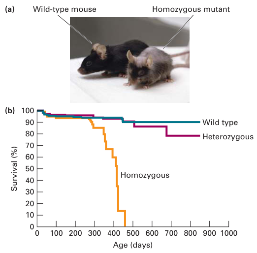
| Age (days) | 年龄（天） |
| Survival (%) | 存活率（%） |
| Wild type | 野生型 |
| Heterozygous | 杂合子 |
| Homozygous | 同型合子 |
| Homozygous mutant | 同型合子突变体 |
| Wild-type mouse | 野生型小鼠 |
氧化磷酸化所产生ATP的需求很高，以及需要细胞中大部分或全部mtDNA来合成足量功能性线粒体蛋白质的组织。例如，Leber遗传性视神经病变（视神经退化）是由编码NADH-CoQ还原酶（复合体I）亚基4的mtDNA基因发生错义突变引起的，该蛋白质是线粒体产生ATP所必需的（见下文）。mtDNA中的若干大段缺失引起另一组疾病，包括以眼部缺陷为特征的慢性进行性眼外肌麻痹，以及以眼部缺陷、心律异常和中枢神经系统退化为特征的Kearns–Sayre综合征。第三种病症导致"破碎红"肌纤维（线粒体组装异常）并伴有不受控制的抽动，它由线粒体赖氨酸tRNA的TΨCG环发生单个突变引起。由于这一突变，若干线粒体蛋白质的翻译明显受到抑制。■
线粒体是动态细胞器，彼此之间直接相互作用
对活细胞中荧光标记线粒体的分析表明，在许多不同类型的细胞中，线粒体
都高度动态。它们频繁地发生融合（合并）和分裂（断裂），从而产生管状、有时有分支的网络（图12-12a和b），这可能解释了在不同类型细胞中见到的多种多样的线粒体形态。当单个线粒体融合时，两层膜各自融合（内膜与内膜、外膜与外膜），它们各自的区室也彼此混合（基质与基质、膜间隙与膜间隙）。一组四种进化上保守的水解GTP的酶（GTP酶）——MFN1（mitofusin 1）、MFN2（mitofusin 2）、OPA1和DRP1——在介导这些膜融合和分裂中起关键作用（图12-12c）。这些酶属于GTP酶的动力蛋白家族。动力蛋白（dynamin）是该家族中第一个被鉴定的成员，它介导一种类似的膜分裂反应，是把内吞小泡从质膜上掐断时所必需的（见第14章）。编码这些GTP酶的若干基因发生突变，会破坏线粒体的功能（如维持适当的内膜电位）和结构，导致线粒体被截短或增大，并引起人类疾病。遗传性常染色体显性神经肌肉病Charcot-Marie-Tooth 2A型是由MFN2的功能丧失突变引起的，这些突变导致周围神经功能缺陷以及主要发生在足部和手部的进行性肌无力。OPA1的突变与影响视网膜神经的常染色体显性视神经萎缩相关。
线粒体分裂与融合的价值何在？有人提出，融合有助于维持细胞内相对均一的线粒体群体。如果某些线粒体遭受有害修饰或丢失重要组分，与其他线粒体融合就可以通过共享这些组分而使它们得到恢复。对融合机制相关基因发生突变的细胞和生物的研究提示，融合还在以下方面发挥作用：线粒体在细胞内的正确定位、维持正常的形态和嵴组织、线粒体DNA的分配，以及维持功能完全的电子传递。
线粒体分裂承担着许多功能。例如，线粒体分裂在细胞分裂时特别活跃（尤其是在细胞周期的G2期和M期；见第19章）。因此，由分裂产生的多个离散线粒体便容易均匀地分配到子细胞中。线粒体可以借助马达蛋白沿着细胞骨架丝（包括微管和微丝；见第17章）运输，从而建立其在细胞内正确的分布。此外，分裂通过从相互连接的健康线粒体网络中剔除有缺陷的线段，提供了一种强大的质量控制机制。如果一个大线粒体网络的某一部分受损或功能失调——例如由于产生高水平的活性氧（后文讨论）或由于线粒体DNA突变——分裂就能把受损的线段与健康线段分开。
细胞有能力识别线粒体网络中受损或功能失调的线段，并且在
它们从网络上脱离后，用膜把它们包裹起来，然后送入溶酶体降解。这种线粒体的销毁称为线粒体自噬（mitophagy，"吃掉线粒体"），它是被称为自噬（autophagy，"自我吞噬"）的通用过程的一个分支，细胞通过自噬用膜包裹并降解细胞器和部分细胞质（见第14章）。引人注目的是，遗传性早发性帕金森病是由两个编码可介导线粒体自噬的蛋白质的基因发生突变引起的。这两个蛋白质是PINK1（一种激酶）和Parkin（一种E3泛素连接酶，它把小蛋白泛素共价连接到附近的蛋白质上，使它们被蛋白酶体销毁；见第3章）。在健康的线粒体中，PINK1被输入线粒体基质。当线粒体受损或功能失调时，PINK1无法进入基质，而是停留在外部线粒体膜上，在那里把细胞质中的Parkin招募到受损线段。Parkin被激活并使外膜蛋白多聚泛素化，从而使它们被降解并诱导线粒体自噬。当细胞所处环境氧不足（缺氧）时，某些酶会修饰线粒体外膜上的蛋白质，从而诱导线粒体自噬。PINK1和Parkin对线粒体稳态的影响（可能既包括不依赖线粒体自噬的途径，也包括依赖线粒体自噬的途径）最初是在果蝇（Drosophila melanogaster）的遗传学研究中发现的。
线粒体的动态变化还有一些值得一提的特征。线粒体的结构和功能可以随细胞的代谢状态而改变。例如，把大鼠肝细胞（hepatocytes）从体内分离出来并转入细胞培养，会使细胞受到应激并导致其去极化（失去部分上皮细胞特性；见第20章）。这些细胞表现出线粒体碎片化（图12-12d，左），同时经氧化磷酸化产生的ATP很少。随着细胞适应在培养中的生长，它们会重新极化（其形态和生化特性更接近肝脏中的肝细胞），经氧化磷酸化产生的线粒体ATP增多，并表现出广泛融合的线粒体网络（图12-12d，右）。值得注意的是，近年来的研究提示，mtDNA乃至完整的线粒体可以通过称为隧道纳米管的膜管从一个细胞转移到另一个细胞，这些结构在第20章描述。
线粒体受到与内质网直接接触的影响
线粒体的动态变化，实际上还有许多线粒体功能，都受到线粒体与内质网（ER）之间直接接触的影响。内质网中与线粒体形成特殊接触区域的部位称为线粒体相关膜（MAM），可以用电子显微镜和荧光显微镜观察到（图12-13）。它们的脂质和蛋白质组成与内质网其余部分有所不同。在酵母中，一个称为ERMES（ER-线粒体相遇结构）的蛋白复合体被认为介导MAM与线粒体的可逆系连。
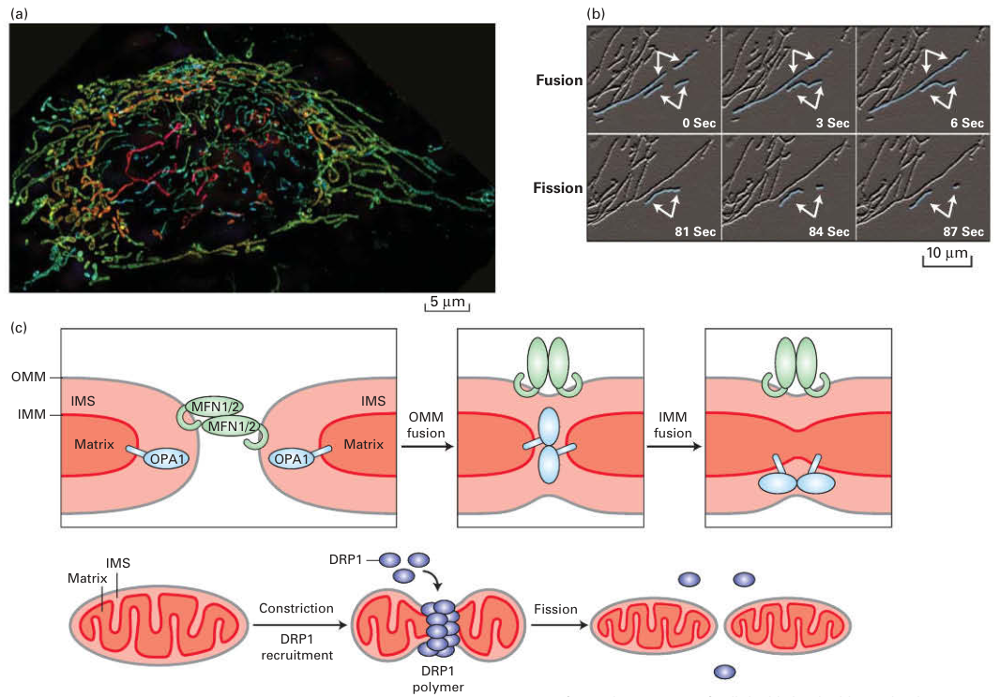
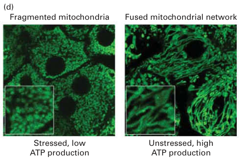
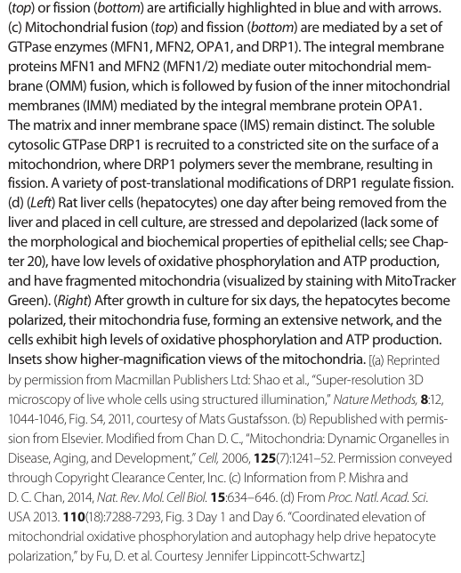
| Fusion | 融合 |
| Fission | 分裂 |
| Constriction | 收缩 |
| DRP1 | DRP1 |
| DRP1 recruitment | DRP1招募 |
| OPA1 | OPA1 |
| MFN1/2 | MFN1/2 |
| OMM | OMM |
| IMM | IMM |
| IMS | IMS |
| Matrix | 基质 |
| Stressed, low ATP production | 应激状态，ATP生成低 |
| Unstressed, high ATP production | 非应激状态，ATP生成高 |
| Fragmented mitochondria | 碎片化的线粒体 |
| Fused mitochondrial network | 融合的线粒体网络 |
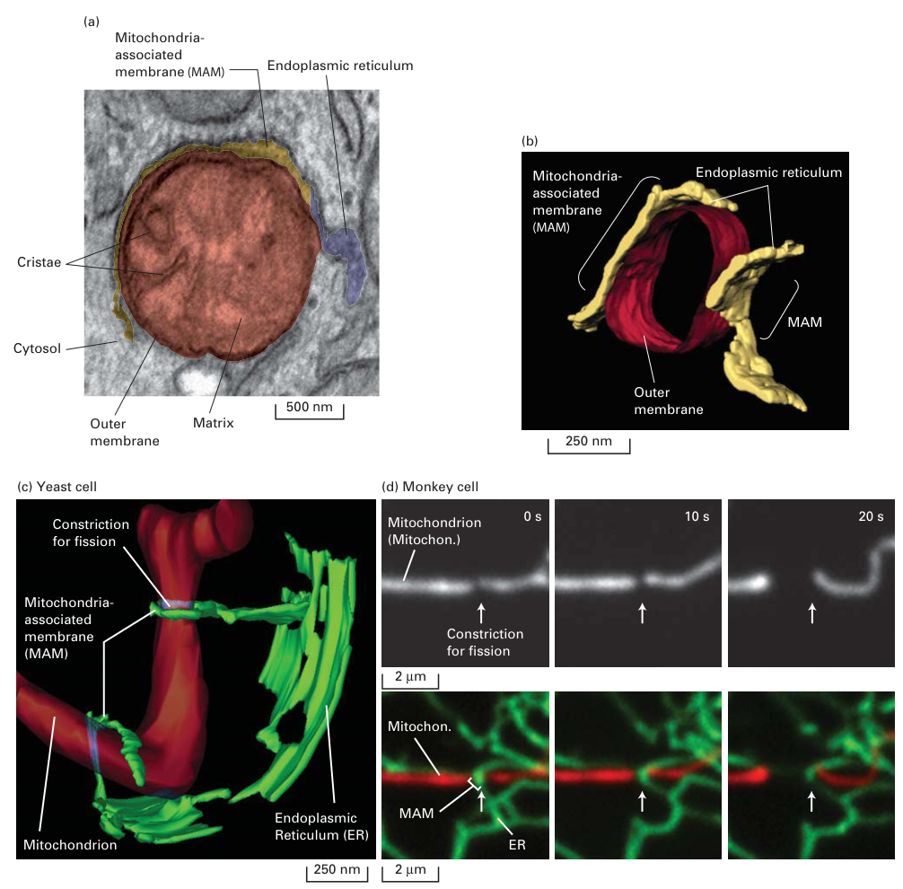
| Mitochondria-associated membrane (MAM) | 线粒体相关膜（MAM） |
| Endoplasmic reticulum | 内质网 |
| Outer membrane | 外膜 |
| MAM | MAM |
| Cristae | 嵴 |
| Cytosol | 细胞质 |
| Matrix | 基质 |
| Constriction for fission | 分裂前的收缩 |
| Mitochondrion | 线粒体 |
| Yeast cell | 酵母细胞 |
| Monkey cell | 猴细胞 |
ERMES复合体不存在于哺乳动物中；在复杂的多细胞生物中，介导MAM与线粒体系连的蛋白质目前尚不清楚。系连蛋白使MAM与线粒体外膜保持约10–30 nm的距离。
MAM对许多细胞过程有重要贡献（见表12-1），包括线粒体分裂。MAM与线粒体的接触可以引发线粒体收缩，并有助于招募DPR1，后者完成膜分裂（见图12-12c）。在酵母中，已观察到MAM小管完全环绕线粒体，形成一个夹钳使线粒体收缩（图12-13c）。在哺乳动物细胞中，MAM在分裂位点与线粒体接触，但尚未证明它们会完全环绕线粒体（图12-13d）。
MAM在细胞内钙和能量代谢中也起着不可或缺的作用。细胞内各区室中钙离子浓度的变化——细胞质钙（[Ca2+]c）、线粒体钙（[Ca2+]m）和内质网中的钙（[Ca2+]er）——被用来控制细胞内多种多样的活动，这一过程称为钙信号传导（见第15章）。钙对细胞外过程也很重要，例如某些凝血蛋白的活性。线粒体内的钙离子在控制线粒体功能方面起重要作用，而MAM通过把钙从内质网输送到线粒体来介导这一控制。例如，基质中[Ca2+]m升高可以增加线粒体的ATP生成。升高的[Ca2+]m直接提高三种由NAD+生成NADH的线粒体酶的活性：丙酮酸脱氢酶（见图12-5）以及α-酮戊二酸脱氢酶和异柠檬酸脱氢酶（见下文图12-16）。正如我们将在本章后面看到的，NADH为ATP合成提供高能电子。因此，当细胞处于基础（或静息）状态时，Ca2+从MAM持续低水平地释放到线粒体中是ATP合成所必需的。当细胞需要更多ATP时——例如肌细胞受刺激而收缩时——通过MAM输送的Ca2+会增加。引人注目的是，钙信号传导既用于诱导肌肉收缩（见第17章），又协同地增加线粒体ATP合成，为收缩提供能量。当[Ca2+]m升高时，可以诱导线粒体自噬。事实上，线粒体钙超载可以激活受调控的细胞死亡途径。因此，对[Ca2+]m的控制简直可以控制细胞的生死。
- 在真核细胞中，线粒体利用有氧氧化产生ATP。这些多功能细胞器还负责许多其他关键活动（见表12-1），包括多种小分子的生物合成与代谢以及受调控的细胞死亡。
- 线粒体具有两层不同的膜（外膜和内膜）和两个不同的亚区室（两层膜之间的膜间隙，以及被内膜包围的基质）（见图12-6）。有氧氧化发生在线粒体基质中和线粒体内膜上。
- 线粒体内膜是一层单一的连续膜，具有三个在组成、结构和功能上不同的结构域：边界膜、嵴和嵴连接。
- 哺乳动物线粒体相关蛋白质至少有1100种，其中大多数由核基因编码。蛋白质进入线粒体的机制在第13章描述。
- 线粒体和叶绿体最可能起源于与含有真核细胞核的祖先细胞形成共生关系的细菌（见图12-7）。
- 线粒体和叶绿体中原本拥有的大多数基因，或者因为其功能与核基因冗余而丢失，或者在进化过程中转移到核基因组中，从而使不同生物的细胞器DNA留下了不同的基因集合（见图12-10）。
- 由于大多数mtDNA来自卵细胞而非精子，mtDNA突变表现出母系细胞质遗传模式。同样，叶绿体DNA完全由母本遗传。
- 动物的mtDNA是环状分子，这反映了它们可能的细菌起源。植物的mtDNA和叶绿体DNA通常比其他真核生物的mtDNA更长，主要是因为它们含有更多非编码区和重复序列。
- 位于线粒体基质中的线粒体DNA（mtDNA）和叶绿体DNA编码rRNA，以及一些参与线粒体或光合电子传递和ATP合成的蛋白质。哺乳动物mtDNA只编码13种蛋白质。大多数动物的mtDNA和叶绿体DNA还编码翻译细胞器mRNA所需的tRNA。
- 线粒体核糖体在结构以及对氯霉素（敏感）和放线菌酮（不敏感）等药物的敏感性上与细菌核糖体相似。
- 动物和真菌mtDNA的遗传密码与细菌及核基因组的遗传密码略有不同，并且在不同的动物和真菌之间也有差异（见表12-2）。相比之下，植物mtDNA似乎遵循标准遗传密码。
- 若干人类神经肌肉疾病由mtDNA突变引起。患者细胞中通常同时存在野生型和突变型mtDNA的混合物（异质性）：突变型mtDNA的比例越高，突变表型越严重。
- 线粒体是动态细胞器，其融合和分裂反应受细胞状态的调控。在许多细胞中，融合的线粒体形成一个大而相互连接、有分支的管状网络。一个GTP酶家族介导线粒体膜的融合和分裂（见图12-12）。编码其中一些GTP酶的基因发生突变会引起人类疾病。
- 线粒体的分裂与融合被认为在以下方面发挥作用：维持相对均一的线粒体群体，在细胞分裂期间把线粒体分配到子细胞中，以及建立一套质量控制体系，以便从健康线粒体中剔除有缺陷的线粒体。有缺陷的线粒体或线粒体片段通过一个称为线粒体自噬的过程被销毁。
- 两个能介导线粒体自噬的蛋白质PINK1和Parkin，其编码基因发生突变时会导致遗传性早发性帕金森病。
- 线粒体相关膜（MAM）（见图12-13）是内质网中通过蛋白系连与线粒体紧密接触的特化区域。
- MAM与线粒体的界面显著影响许多细胞功能，包括线粒体的形态和动态变化（见表12-1）。
- MAM与线粒体的界面在把钙从内质网转运进入线粒体的过程中起关键作用。钙从MAM流入线粒体可以刺激ATP合成，而在线粒体钙超载的情况下，则会启动受调控的细胞死亡程序。
12.3 柠檬酸循环与脂肪酸氧化
现在我们继续详细讨论葡萄糖氧化与ATP生成，探讨糖酵解（阶段I，见图12-1和图12-3）中产生的丙酮酸在被转运到线粒体基质后会发生什么。葡萄糖氧化四个阶段中的后三个阶段（图12-14）是
● 阶段II。阶段II可细分为两个不同的部分：（1）丙酮酸转变为乙酰辅酶A，随后（2）在柠檬酸循环中乙酰辅酶A被氧化为CO2。这些氧化反应与NAD+还原为NADH、FAD还原为FADH2相偶联。这两种载体可视为高能电子的来源。（脂肪酸氧化遵循相似的路线，即脂酰辅酶A转变为乙酰辅酶A。）大多数反应发生在朝向基质的内膜内部或内膜上。
● 阶段III。电子从NADH和FADH2经由内膜中的电子传递链传递给O2，把那些电子所携带的能量转换成跨该膜的电化学梯度，称为质子动力势。
● 阶段IV。质子动力势的能量在线粒体内膜上被用于合成ATP。阶段III和阶段IV合称为氧化磷酸化。
在阶段II的第一部分，丙酮酸转变为乙酰辅酶A和高能电子
在线粒体基质中，丙酮酸与辅酶A反应，生成CO2、乙酰辅酶A和NADH（图12-14，阶段II，左侧）。该反应由丙酮酸脱氢酶催化，高度放能（ΔG°′ = −8.0 kcal/mol），且基本上不可逆。钙从线粒体相关膜（MAM）流入线粒体可提高丙酮酸脱氢酶的活性，从而驱动乙酰辅酶A的生成。
乙酰辅酶A是一种分子，由共价连接在称为辅酶A（CoA）的更长分子上的二碳乙酰基组成（图12-15）。它在丙酮酸、脂肪酸和氨基酸的氧化中起核心作用。此外，它还是众多生物合成反应的中间产物，包括把乙酰基转移给组蛋白和许多其他哺乳动物蛋白，以及合成胆固醇等脂质。然而，在呼吸活跃的线粒体中，乙酰辅酶A的二碳乙酰基几乎总是经柠檬酸循环氧化为CO2。注意乙酰基中的两个碳来自丙酮酸；丙酮酸的第三个碳以二氧化碳的形式释放。
在阶段II的第二部分，柠檬酸循环把乙酰辅酶A中的乙酰基氧化为CO2并产生高能电子
九个连续的反应以循环方式运行，把乙酰辅酶A的乙酰基氧化为CO2（图12-14，阶段II，右侧）。这一循环有几个名称：柠檬酸循环、三羧酸（TCA）循环和克雷布斯循环。净结果是，每一个以乙酰辅酶A形式进入循环的乙酰基，会产生两分子CO2、三分子NADH，以及各一分子FADH2和GTP。NADH和FADH2是高能电子载体，将在有氧氧化的阶段III即电子传递中起主要作用。
如图12-16所示，循环始于来自乙酰辅酶A的二碳乙酰基与四碳分子草酰乙酸缩合，生成六碳的柠檬酸（柠檬酸循环因此得名）。反应第4步和第5步各释放一分子CO2并把NAD+还原为NADH。这些反应中生成CO2所需的氧来自水（H2O），而不是分子氧（O2）；催化反应第4步和第5步的酶的活性因钙从MAM流入线粒体而升高。NAD+还原为NADH也发生在反应第9步；因此每转一圈循环生成三分子NADH。在反应第7步中，两个电子和两个质子被转移给FAD，生成该辅酶的还原型FADH2。反应第7步的独特之处不仅在于它是柠檬酸循环（阶段II）的固有组成部分，还在于它由一种膜结合酶催化；正如我们将看到的，这种酶在阶段III中也起重要作用。在反应第6步中，琥珀酰辅酶A中高能硫酯键的水解与通过底物水平磷酸化合成一分子GTP相偶联。由于GTP和ATP可以相互转换，
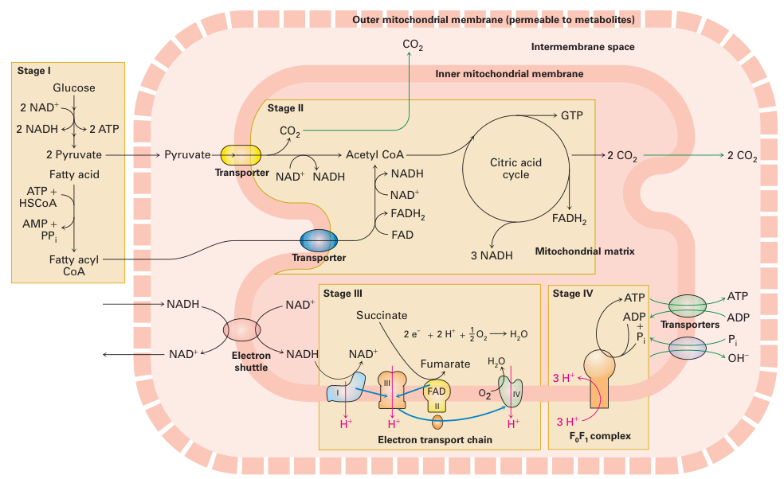
| Glucose | 葡萄糖 |
| Pyruvate | 丙酮酸 |
| Fatty acid | 脂肪酸 |
| Fatty acyl | 脂酰基 |
| CoA | 辅酶A |
| Acetyl CoA | 乙酰辅酶A |
| NAD+ | NAD+ |
| NADH | NADH |
| FAD | FAD |
| FADH2 | FADH2 |
| ATP | ATP |
| GTP | GTP |
| Pi | Pi |
| Citric acid cycle | 柠檬酸循环 |
| Electron transport chain | 电子传递链 |
| Stage I | 阶段I |
| Stage II | 阶段II |
| Stage III | 阶段III |
| Stage IV | 阶段IV |
| Mitochondrial matrix | 线粒体基质 |
| Intermembrane space | 膜间隙 |
| Inner mitochondrial membrane | 线粒体内膜 |
| Outer mitochondrial membrane (permeable to metabolites) | 线粒体外膜（对代谢物通透） |
| Succinate | 琥珀酸 |
| Fumarate | 延胡索酸 |
| Transporter | 转运蛋白 |
这一步骤可视为生成ATP的步骤。反应第9步重新生成草酰乙酸，因此循环可以重新开始。注意分子氧O2不参与柠檬酸循环。
参与柠檬酸循环的大多数酶和小分子都可溶于含水的线粒体基质中。这些包括CoA、乙酰辅酶A、琥珀酰辅酶A、NAD+和NADH，以及大多数柠檬酸循环的酶。然而，琥珀酸脱氢酶（反应第7步）是
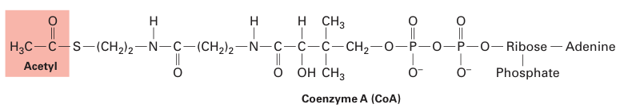
| Coenzyme A (CoA) | 辅酶A（CoA） |
| Acetyl group | 乙酰基 |
| Ribose | 核糖 |
| Adenine | 腺嘌呤 |
| Phosphate | 磷酸 |
内膜中一种整合膜蛋白的组分，其活性位点朝向基质。当线粒体被温和的超声振动或渗透裂解破坏时，柠檬酸循环中非膜结合的酶会以非常大的多蛋白复合体的形式释放出来。据认为，在此类复合体内，一种酶的反应产物直接传递给下一种酶，而无需扩散穿过溶液（见图3-30）。
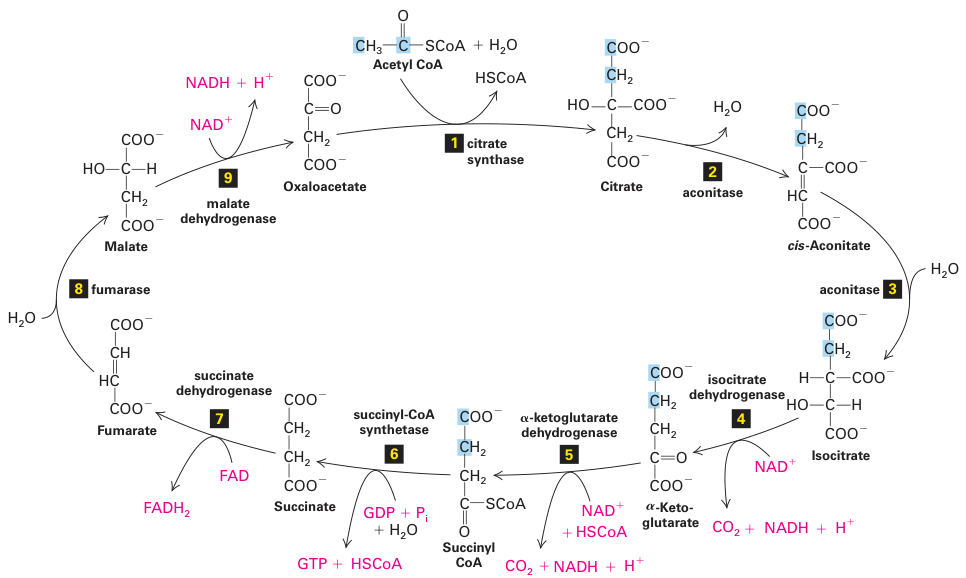
| Citrate | 柠檬酸 |
| cis-Aconitate | 顺乌头酸 |
| Isocitrate | 异柠檬酸 |
| α-Ketoglutarate | α-酮戊二酸 |
| Succinyl CoA | 琥珀酰辅酶A |
| Succinate | 琥珀酸 |
| Fumarate | 延胡索酸 |
| Malate | 苹果酸 |
| Oxaloacetate | 草酰乙酸 |
| Acetyl CoA | 乙酰辅酶A |
| NADH | NADH |
| FADH2 | FADH2 |
| GTP | GTP |
| H2O | H2O |
| CO2 | CO2 |
| citrate synthase | 柠檬酸合酶 |
| aconitase | 乌头酸酶 |
| isocitrate dehydrogenase | 异柠檬酸脱氢酶 |
| α-ketoglutarate dehydrogenase | α-酮戊二酸脱氢酶 |
| succinyl-CoA synthetase | 琥珀酰辅酶A合成酶 |
| succinate dehydrogenase | 琥珀酸脱氢酶 |
| fumarase | 延胡索酸酶 |
| malate dehydrogenase | 苹果酸脱氢酶 |
由于一分子葡萄糖的糖酵解产生两分子丙酮酸，因而产生两分子乙酰辅酶A，所以糖酵解途径和柠檬酸循环中的反应每分子葡萄糖产生六分子CO2、十分子NADH和两分子FADH2（表12-3）。尽管这些反应还以两分子ATP和两分子GTP的形式生成四个高能磷酸酐键，但这只占葡萄糖完全有氧氧化所释放的可用能量的一小部分。剩余的能量以高能电子的形式储存在还原型辅酶NADH和FADH2中，它们可以
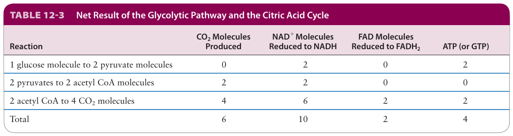
| Reaction | 反应 |
| CO2 Molecules Produced | 产生的CO2分子数 |
| NAD+ Molecules Reduced to NADH | 还原为NADH的NAD+分子数 |
| FAD Molecules Reduced to FADH2 | 还原为FADH2的FAD分子数 |
| ATP (or GTP) | ATP（或GTP） |
| Total | 总计 |
被视为高能电子载体。阶段III和阶段IV的目标就是以ATP的形式回收这部分能量。
线粒体内膜中的转运蛋白有助于维持胞质与基质中NAD+和NADH的适当浓度
在胞质中，NAD+是糖酵解第6步所必需的（见图12-3）；在线粒体基质中，NAD+是丙酮酸转变为乙酰辅酶A以及柠檬酸循环中三个步骤（第4步、第5步和第9步，见
图12-16）所必需的。在每种情况下，NADH都是反应的产物。若糖酵解和丙酮酸氧化要继续进行，就必须通过氧化NADH来再生NAD+，以确保该底物可用。（同样，若依赖FAD的反应要继续进行，阶段II反应中生成的FADH2必须重新氧化为FAD。）我们将在下一节看到，线粒体内膜中的电子传递链在把O2还原为水的同时，把NADH转变为NAD+、把FADH2转变为FAD，并将这些分子还原型中高能电子所储存的能量转换成质子动力势（阶段III）。尽管O2不参与柠檬酸循环的任何反应，但在缺乏O2时该循环很快就停止运转，因为在这种厌氧条件下，线粒体无法再生所需的NAD+和FAD底物。由于线粒体内的电子传递链无法氧化NADH和FADH2，NAD+和FAD逐渐耗竭。这些观察引出了一个问题：胞质中的NAD+供应是如何再生的。
如果胞质中的NADH能够进入线粒体基质并被电子传递链氧化，而产物NAD+又能够被运回胞质，那么在有O2时胞质NAD+的再生就会很简单。然而，线粒体内膜对NADH不通透。为绕过这一问题、使胞质NADH的电子能经线粒体电子传递链间接传递给O2，细胞使用若干电子穿梭系统来
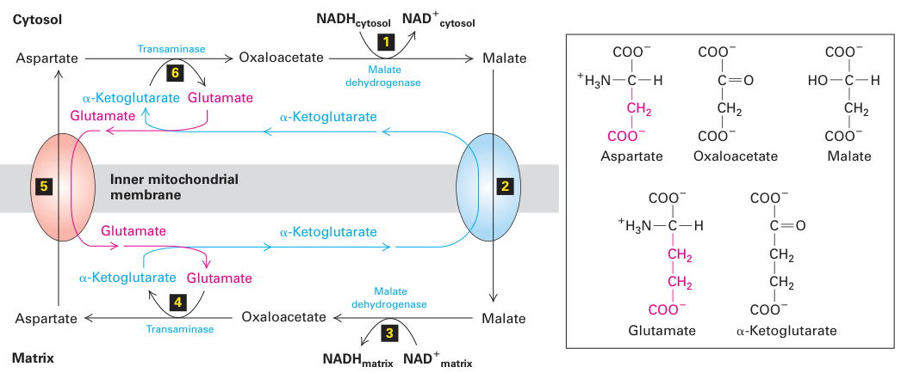
| Malate | 苹果酸 |
| Aspartate | 天冬氨酸 |
| Oxaloacetate | 草酰乙酸 |
| Glutamate | 谷氨酸 |
| α-Ketoglutarate | α-酮戊二酸 |
| Malate dehydrogenase | 苹果酸脱氢酶 |
| Transaminase | 转氨酶 |
| Cytosol | 胞质 |
| Matrix | 基质 |
| Inner mitochondrial membrane | 线粒体内膜 |
| NADH cytosol | 胞质NADH |
| NAD+ cytosol | 胞质NAD+ |
| NAD+ matrix | 基质NAD+ |
| NADH matrix | 基质NADH |
把电子从胞质中的NADH转移到基质中的NAD+。最普遍的穿梭系统——苹果酸-天冬氨酸穿梭——的作用方式如图12-17所示。
穿梭每完成一个完整循环，NADH和NAD+的分子数以及中间产物天冬氨酸或苹果酸都没有净变化。然而在胞质中，NADH被氧化为NAD+，可用于糖酵解；而在基质中，NAD+被还原为NADH，可用于电子传递：
线粒体氧化脂肪酸生成ATP
到目前为止，我们主要关注碳水化合物即葡萄糖的氧化以生成ATP。脂肪酸是细胞能量的另一个重要来源。细胞可以借助特异性的转运蛋白从细胞外空间摄取葡萄糖或脂肪酸（见第11章）。如果细胞不需要立即燃烧这些分子，就可以把它们储存为葡萄糖的多聚体——糖原（尤其在肌肉或肝脏中），或者储存为共价连接在甘油上的三分子脂肪酸，称为三酰甘油或甘油三酯（见下文）。在某些细胞中，过量的葡萄糖被转变为脂肪酸，进而转变为三酰甘油储存起来。然而，与微生物不同，动物无法把脂肪酸转变为
葡萄糖。当细胞需要燃烧这些能量储备以制造ATP时（例如静息的肌肉开始做功，需要燃烧葡萄糖或脂肪酸作为燃料），酶把糖原分解为葡萄糖，或把三酰甘油水解为脂肪酸，随后这些脂肪酸被氧化以生成ATP：
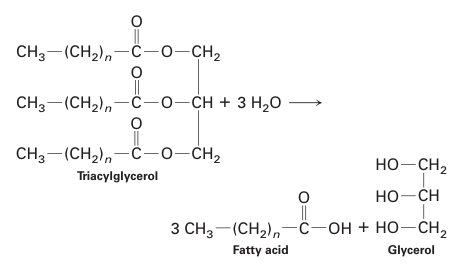
脂肪酸是某些组织的主要能量来源，尤其是成年心肌。事实上在人体中，由脂肪氧化生成的ATP比由葡萄糖氧化生成的更多。1 g三酰甘油氧化为CO2所生成的ATP约为1 g水合糖原氧化所生成的六倍。因此，考虑到生物体必须携带的储存燃料的质量，甘油三酯在储存能量方面比碳水化合物更高效：部分原因是它们以无水的形式储存，氧化时能产生更多能量；部分原因是它们本质上比碳水化合物更还原（含有更多氢）。在哺乳动物中，三酰甘油的主要储存部位是脂肪（脂肪组织），而糖原的主要储存部位是肌肉和肝脏。在动物中，当组织需要生成大量ATP时（如运动中的肌肉），会向脂肪组织发出信号，使其水解三酰甘油并把脂肪酸释放到循环系统中，以便它们能够移动到并被转运进需要ATP的组织。
正如葡萄糖的氧化有四个阶段，脂肪酸的氧化也有四个阶段。为使ATP生成的效率最优，脂肪酸氧化中阶段II的一部分（柠檬酸循环氧化乙酰辅酶A）以及阶段III和阶段IV的全部，都与葡萄糖氧化中的相同。差异在于胞质的阶段I和线粒体阶段II的第一部分。在阶段I，脂肪酸在胞质中转变为脂酰辅酶A，该反应与ATP水解为AMP和PPi（无机焦磷酸）相偶联（见图12-14）：
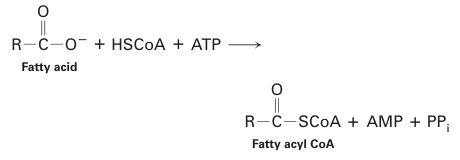
PPi随后水解为两分子Pi所释放的能量推动该反应进行到底。要进入线粒体基质，脂酰基必须共价转移到一种称为肉碱的分子上，并由脂酰肉碱转运蛋白运过线粒体内膜（见图12-14，蓝色椭圆）；然后，在基质一侧，脂酰基从肉碱上释放出来
并重新连接到另一个CoA分子上。当细胞有充足的能量（ATP）供应时，脂酰肉碱转运蛋白的活性受到调节，以防止脂肪酸被氧化。
在阶段II的第一部分，线粒体中的每一分子脂酰辅酶A都经历一系列四步循环反应而被氧化，其中所有碳原子每次两个地被转变为乙酰辅酶A，同时生成FADH2和NADH（图12-18a）。例如，线粒体氧化每一分子18碳的硬脂酸CH3(CH2)16COOH，都产生九分子乙酰辅酶A以及各八分子NADH和FADH2。在阶段II的第二部分，与由丙酮酸生成的乙酰辅酶A一样，这些乙酰基进入柠檬酸循环并被氧化为CO2。正如下一节将详细描述的，带有高能电子的还原型NADH和FADH2将在阶段III中用于产生质子动力势，后者又在阶段IV中用于驱动ATP合成。
过氧化物酶体氧化脂肪酸不生成ATP
线粒体氧化脂肪酸是哺乳动物肝细胞中ATP的主要来源，生物化学家一度认为所有细胞类型都是如此。然而，人们发现用氯贝特（一种影响脂质代谢许多方面的药物）处理的大鼠，其脂肪酸氧化速率升高，肝细胞中过氧化物酶体的数量也大幅增加。这一发现提示，过氧化物酶体与线粒体一样能够氧化脂肪酸。这些小的细胞器直径0.2–1 μm，由单层膜包被（见图1-12）。它们存在于除红细胞外的所有哺乳动物细胞中，也见于植物细胞、酵母以及可能大多数其他真核细胞中。
线粒体优先氧化短链[少于8个碳（
过氧化物酶体把脂肪酸降解为乙酰辅酶A的反应途径与线粒体中使用的途径相似（图12-18b）。然而，过氧化物酶体缺乏电子传递链，脂肪酸氧化过程中产生的FADH2上的电子立即被氧化酶转移给O2，重新生成FAD并形成过氧化氢（H2O2）。除氧化酶外，过氧化物酶体还含有丰富的过氧化氢酶，能迅速分解H2O2这种细胞毒性很强的代谢物。过氧化物酶体氧化脂肪酸过程中产生的NADH被输出并在胞质中重新氧化；这里不需要苹果酸-天冬氨酸穿梭。过氧化物酶体也缺乏柠檬酸循环，因此过氧化物酶体降解脂肪酸时产生的乙酰辅酶A无法进一步氧化；相反，它被转运到胞质中，用于合成胆固醇（见第7章）和其他代谢物。
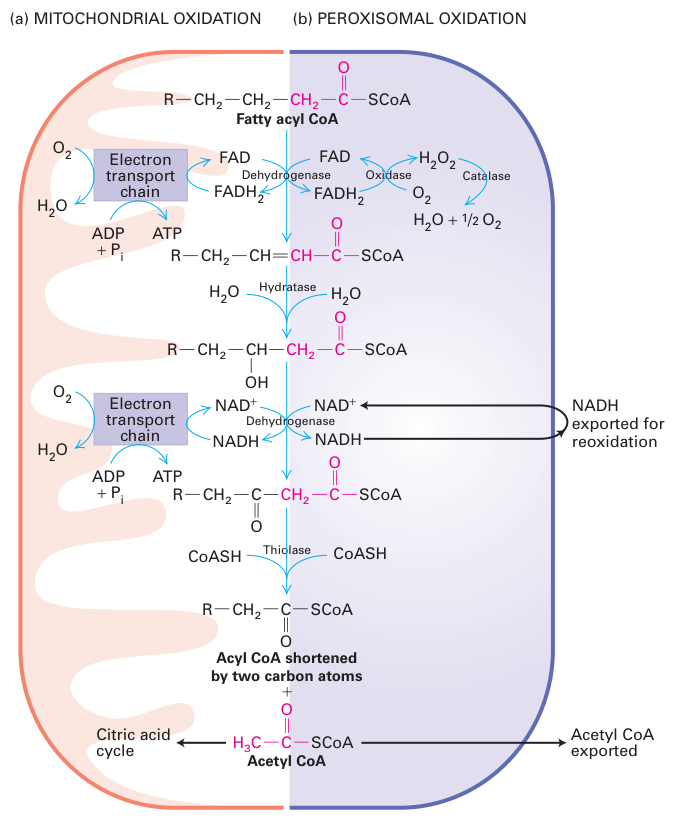
| Oxidase | 氧化酶 |
| Catalase | 过氧化氢酶 |
| Fatty acyl CoA | 脂酰辅酶A |
| Acetyl CoA | 乙酰辅酶A |
| Thiolase | 硫解酶 |
| Dehydrogenase | 脱氢酶 |
| Hydratase | 水合酶 |
| Electron transport chain | 电子传递链 |
| Citric acid cycle | 柠檬酸循环 |
| NAD+ | NAD+ |
| NADH | NADH |
| FAD | FAD |
| FADH2 | FADH2 |
| ATP | ATP |
| NADH exported for reoxidation | 输出的NADH（用于重新氧化） |
| Acetyl CoA exported | 输出的乙酰辅酶A |
| MITOCHONDRIAL OXIDATION | 线粒体氧化 |
| PEROXISOMAL OXIDATION | 过氧化物酶体氧化 |
- 在葡萄糖氧化的阶段II，三碳的丙酮酸分子首先被氧化，各生成一分子CO2、NADH和乙酰辅酶A。随后乙酰辅酶A的乙酰基被柠檬酸循环氧化为CO2（见图12-14）。
- 柠檬酸循环每转一圈释放两分子CO2，并生成三分子NADH、一分子FADH2和一分子GTP（见图12-16）。
- 葡萄糖氧化阶段I和阶段II释放的大部分能量暂时储存在还原型辅酶NADH和FADH2中，它们携带的高能电子随后驱动电子传递链（阶段III）。
- 糖酵解和柠檬酸循环都不直接利用分子氧（O2）。
- 苹果酸-天冬氨酸穿梭再生胞质NAD+的供应，这是糖酵解持续进行所必需的（见图12-17）。
- 与葡萄糖氧化一样，脂肪酸的氧化也分四个阶段。在阶段I，脂肪酸在胞质中转变为脂酰辅酶A。在阶段II，脂酰辅酶A首先转变为多分子乙酰辅酶A，同时生成NADH和FADH2。随后，与葡萄糖氧化中一样，乙酰辅酶A进入柠檬酸循环。脂肪酸氧化与葡萄糖氧化的阶段III和阶段IV完全相同（见图12-14）。
- 在大多数真核细胞中，短链至长链脂肪酸的氧化发生在线粒体中并产生ATP，而极长链脂肪酸的氧化主要发生在过氧化物酶体中，且与ATP生成无关（见图12-18）；过氧化物酶体氧化脂肪酸时释放的能量转变为热。
12.4 电子传递链与质子动力势的生成
葡萄糖和脂肪酸氧化为CO2（阶段I和II）过程中释放的大部分能量，都以高能电子的形式储存在还原型辅酶NADH和FADH2中。现在我们转向阶段III，在这一阶段中，暂时储存在这些还原型辅酶中的能量，经电子传递链（又称呼吸链）转换成质子动力势。我们先描述电子传递链的逻辑与组分，然后追踪电子流经该链的路径，并阐述质子跨线粒体内膜泵出的机制。最后，我们讨论电子传递与质子泵送所产生的质子动力势的大小。在12.5节中，我们将看到质子动力势如何被用来合成ATP。
NADH和FADH2的氧化释放出可观的能量
在电子传递过程中，电子从NADH和FADH2上释放出来，最终传递给O2并生成H2O，总反应如下：
回忆一下，1分子葡萄糖经糖酵解途径和柠檬酸循环转化为CO2，可产生10分子NADH和2分子FADH2（见表12-3）。这些还原型辅酶氧化时，ΔG°′总计为−613 kcal/mol [10(−52.6) + 2(−43.4)]。因此，在葡萄糖化学键中蕴藏的总势能（−686 kcal/mol）里，约有90%被保存在还原型辅酶中。为什么会有NADH和FADH2这两种不同的辅酶呢？尽管葡萄糖和脂肪酸氧化所涉及的许多反应所释放的能量足以还原NAD+，但另有若干反应则不然。为了捕获这些反应释放的能量，它们与FAD的还原相偶联，因为还原FAD所需能量较少。
还原型辅酶所携带的能量可通过将其氧化而释放出来。线粒体面临的生物化学挑战是：尽可能高效地把这种氧化所释放的能量，转移到ATP末端磷酸酐键的能量中。
如果采用一种相对简单的一对一反应，即还原一分子辅酶就合成一分子ATP，效率会极低，因为由ADP和Pi生成ATP的ΔG°′
远小于辅酶氧化的ΔG°′，大量能量将以热的形式散失。为了高效地回收这些能量，线粒体利用一系列电子载体，把辅酶氧化释放的能量转换成质子动力势；这些载体除一种外，全部是内膜的整合组分（见图12-14中的阶段III）。随后，质子动力势便可用来非常高效地生成ATP。
线粒体中的电子传递与质子泵送相偶联
在电子从NADH和FADH2传递到O2的过程中，质子从线粒体基质被泵过内膜。这种泵送使线粒体基质的pH相对于膜间隙和胞质升高，也使基质相对于膜间隙带更多负电。换言之，NADH或FADH2氧化时释放的自由能，既以跨膜的质子浓度梯度形式储存，也以跨膜电位梯度形式储存——两者合称质子动力势（见图12-2）。正如我们将在12.5节看到的，质子在此力的驱动下跨内膜回流，与ATP合酶由ADP和Pi合成ATP的过程相偶联（阶段IV）。
由NADH或FADH2向O2传递电子所释放的能量驱动，从ADP和Pi合成ATP，是需氧非光合细胞中ATP的主要来源。大量证据表明，在线粒体和细菌中，这一氧化磷酸化过程依赖于跨内膜（在线粒体中）或细菌质膜产生的质子动力势，且电子传递、质子泵送与ATP形成同时发生。例如在实验室中，向分离的完整线粒体中加入O2和可氧化底物（如丙酮酸或琥珀酸），只要线粒体内膜完整，就会净合成ATP。若存在微量去垢剂使膜变得渗漏，电子传递以及这些代谢物被O2氧化仍会发生。但在这种条件下不会生成ATP，因为质子渗漏使质子动力势无法维持。
电子从NADH（或FADH2）向O2的传递，与质子跨线粒体内膜的运输之间的偶联，可以用分离的完整线粒体通过实验来证明（图12-19）。向处于除NADH外不含O2的溶液中的线粒体悬液加入O2后，线粒体外的介质会短暂变酸（质子浓度升高），因为线粒体外膜对质子可自由通透。（请记住，苹果酸-天冬氨酸穿梭及其他穿梭系统能把溶液中的NADH转变成线粒体基质中的NADH。）一旦O2被还原而耗尽，介质中过量的质子便会缓慢渗回基质。通过测量此类实验中的pH变化，人们可以
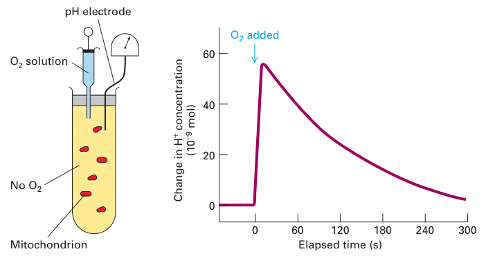
| Change in H+ concentration | H+浓度变化 |
| Elapsed time (s) | 经过时间（s） |
| O2 added | 加入O2 |
| pH electrode | pH电极 |
| O2 solution | O2溶液 |
| No O2 | 无O2 |
| Mitochondrion | 线粒体 |
计算出，每有一对电子从NADH传递给O2，就有约10个质子被运出基质。
要获得FADH2对应数值，可用琥珀酸代替NADH作为底物重复上述实验。（回忆一下，柠檬酸循环中琥珀酸氧化为延胡索酸会生成FADH2；见图12-16。）加入的琥珀酸量可以调整，使生成的FADH2量与第一个实验中的NADH量相当。与第一个实验一样，加入O2会使线粒体外的介质变酸，但程度不及NADH。这一差异并不意外，因为FADH2中电子的势能（43.4 kcal/mol）低于NADH中电子的势能（52.6 kcal/mol），因此FADH2驱动从基质转运出的质子较少，pH变化也较小。
电子沿一系列电子载体"顺坡而下"地流动
让我们更仔细地考察电子从NADH和FADH2流向最终电子受体O2这一能量上有利的过程。为简明起见，我们只讨论NADH。在进行呼吸的线粒体中，每个NADH分子向电子传递链释放两个电子；这些电子最终还原一个氧原子（半个O2分子），生成一分子水：
当电子从NADH移向O2时，其电势下降1.14 V，相当于每摩尔传递的电子释放26.2 kcal的能量，即每对电子约53 kcal。如前所述，这些能量的大部分被保存在跨线粒体内膜产生的质子动力势中。
四个大型多蛋白复合体（复合体I–IV）构成了线粒体内膜中负责产生质子动力势的电子传递链
（见图12-14，阶段III）。每个复合体都含有若干辅基，它们在偶联的氧化还原反应中参与把电子从供体分子转移到受体分子（见第2章）。这些小分子非肽类有机分子或金属离子，与多蛋白复合体紧密结合且特异结合（表12-4）。
血红素与细胞色素 血红素是一种含铁的辅基，与血红蛋白和肌红蛋白中的血红素类似（图12-20a）；有若干类型的血红素以共价或非共价方式与一组称为细胞色素的线粒体蛋白紧密结合。每种细胞色素都用
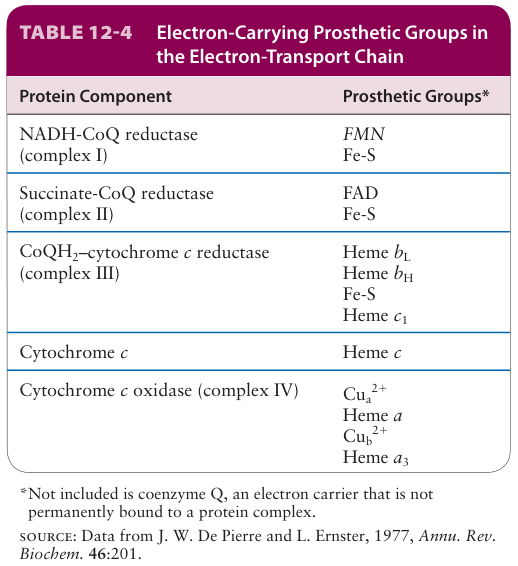
| Electron-Transport Chain | 电子传递链 |
| Protein Component | 蛋白组分 |
| Prosthetic Groups | 辅基 |
| NADH-CoQ reductase (complex I) | NADH-CoQ还原酶（复合体I） |
| FMN | FMN |
| Fe-S | Fe-S |
| Succinate-CoQ reductase (complex II) | 琥珀酸-CoQ还原酶（复合体II） |
| FAD | FAD |
| CoQH2–cytochrome c reductase (complex III) | CoQH2–细胞色素c还原酶（复合体III） |
| Heme bL | 血红素bL |
| Heme bH | 血红素bH |
| Heme c1 | 血红素c1 |
| Cytochrome c | 细胞色素c |
| Cytochrome c oxidase (complex IV) | 细胞色素c氧化酶（复合体IV） |
| Heme a | 血红素a |
| Heme a3 | 血红素a3 |
| Cua2+ | Cua2+ |
| Cub2+ | Cub2+ |
一个字母来标示，如a、b、c或c1。电子在细胞色素间的流动，是通过血红素分子中心Fe原子的氧化和还原实现的：
由于细胞色素中的血红素环由交替的双键和单键原子构成，因此存在大量共振杂化形式。这些形式使传递给细胞色素的那个额外电子，得以分散到整个血红素环的碳原子、氮原子以及Fe离子上。
各种细胞色素的血红素基团及周围原子（称为轴向配体）略有不同，从而为Fe离子营造出不同的环境。因此，每种细胞色素的还原电位，即接受电子的倾向，各不相同——这一重要性质决定了电子沿链的单向、能量上"顺坡而下"的流动。正如水自发地从高势能态流向低势能态——而不能倒流上坡——电子由于还原电位不同，也只能从一个血红素（或其他辅基）单向地流向另一个血红素。（有关还原电位E概念的更多内容，见第2章。）除细胞色素c外，所有细胞色素都是线粒体内膜中整合膜多蛋白复合体的组分。
铁硫簇 铁硫簇是非血红素型的含铁辅基，由Fe原子同时与无机硫（S）原子以及蛋白质中半胱氨酸残基上的S原子成键构成（图12-20b）。簇中有些Fe原子带+2电荷，另一些带+3电荷。然而，每个Fe原子的净电荷实际上介于+2与+3之间，因为其最外层轨道上的电子与经传递链送来的那个额外电子一起，分散在多个Fe原子之间并迅速从一个原子移向另一个原子。铁硫簇一次只接受和释放一个电子。
辅酶Q 辅酶Q（CoQ），又称泛醌，是电子传递链中唯一一个并非基本上不可逆地与蛋白结合的辅基的小分子电子载体（图12-21）。它既能携带质子，也能携带电子。CoQ的氧化型（醌型）形式
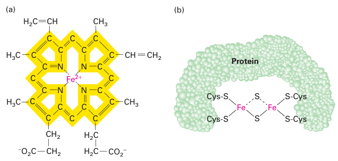
| Heme | 血红素 |
| Fe-S | 铁硫簇 |
| Cys-S | Cys-S |
| Protein | 蛋白质 |
可接受一个电子形成半醌，即一种带电荷的自由基，记作CoQr−。向CoQr−再加入一个电子和两个质子（总共相当于两个氢原子），便形成二氢泛醌（CoQH2），即完全还原型。CoQ和CoQH2都溶于磷脂，可在内膜的疏水中心自由扩散。这些性质正是泛醌在电子传递链中作用的基础：在链的膜内嵌合蛋白复合体之间携带电子和质子。
接下来我们详细考察这些利用上述辅基的多蛋白复合体，以及电子和质子在穿过这些复合体时所走的路径。
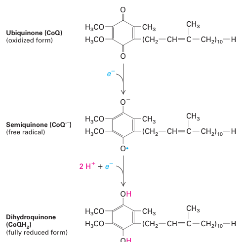
| Ubiquinone (CoQ) (oxidized form) | 泛醌（CoQ）（氧化型） |
| Semiquinone (CoQ) (free radical) | 半醌（CoQ）（自由基） |
| Dihydroquinone (CoQH2) (fully reduced form) | 二氢醌（CoQH2）（完全还原型） |
四个大型多蛋白复合体把电子传递与跨线粒体内膜的质子泵送偶联起来
当电子在电子传递链中从一个电子载体顺坡流向下一个载体时，释放的能量被用来驱动质子逆其电化学梯度跨线粒体内膜泵出。四个大型多蛋白复合体（图12-22）直接或间接地把电子的移动与质子泵送偶联起来：NADH-CoQ还原酶（复合体I，>40个亚基）、琥珀酸-CoQ还原酶（复合体II，4个亚基）、CoQH2–细胞色素c还原酶（复合体III，11个亚基）和细胞色素c氧化酶（复合体IV，13个亚基）。电子经由两条路线之一穿过这些复合体：I → III → IV或II → III → IV。复合体I、III和IV都直接把质子泵过内膜，而复合体II则不然（见图12-22）。来自NADH的电子从复合体I经CoQ/CoQH2流向复合体III，然后经可溶性蛋白细胞色素c（cyt c）流向复合体IV，还原分子氧（复合体II被绕过）（见图12-22a）；来自FADH2的电子从复合体II经CoQ/CoQH2流向复合体III（见图12-22b），然后经细胞色素
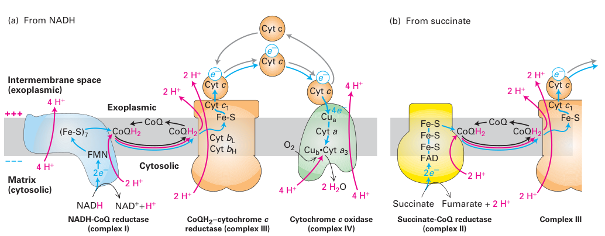
| Succinate-CoQ reductase (complex II) | 琥珀酸-CoQ还原酶（复合体II） |
| Succinate | 琥珀酸 |
| Fumarate | 延胡索酸 |
| NADH-CoQ reductase (complex I) | NADH-CoQ还原酶（复合体I） |
| NADH | NADH |
| NAD+ | NAD+ |
| FMN | FMN |
| Fe-S | Fe-S |
| CoQ | CoQ |
| CoQH2 | CoQH2 |
| CoQH2–cytochrome c reductase (complex III) | CoQH2–细胞色素c还原酶（复合体III） |
| Cytochrome c oxidase (complex IV) | 细胞色素c氧化酶（复合体IV） |
| Cyt c | 细胞色素c |
| Cyt c1 | 细胞色素c1 |
| Cyt bL | 细胞色素bL |
| Cyt bH | 细胞色素bH |
| Intermembrane space (exoplasmic) | 膜间隙（外质） |
| Matrix (cytosolic) | 基质（胞质） |
| From NADH | 来自NADH |
| From succinate | 来自琥珀酸 |
c流向复合体IV，还原分子氧（复合体I被绕过）。
如图12-22所示，CoQ接受NADH-CoQ还原酶（复合体I）或琥珀酸-CoQ还原酶（复合体II）释放的电子，并把它们交给CoQH2–细胞色素c还原酶（复合体III）。同时，质子从膜的基质侧（也称胞质侧）被运送到膜间隙（也称外质侧）。CoQ接受电子时，总是在蛋白复合体基质侧的结合位点上进行，并总是从那里的介质中拾取质子。CoQH2释放电子时，则是在蛋白复合体膜间隙侧的位点上进行，把质子释放到膜间隙的液体中。因此，CoQ每转运一对电子，都必然与两个质子从基质移向膜间隙相偶联。
NADH-CoQ还原酶（复合体I） 电子由NADH-CoQ还原酶从NADH传递给CoQ（见图12-22a）。对来自细菌（质量约500 kDa，含14个亚基）和来自真核生物（约1 MDa，含14个高度保守的核心
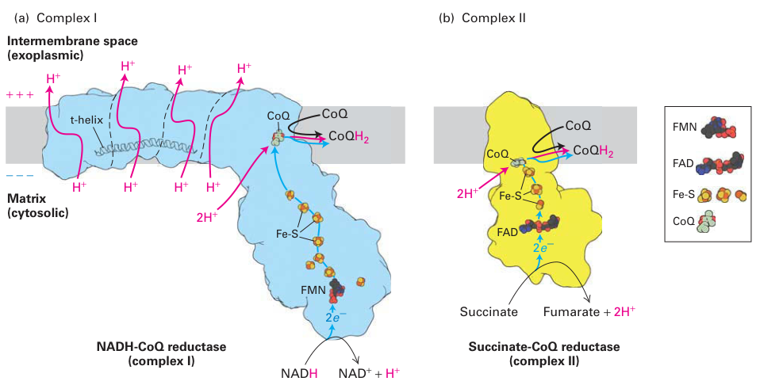
| Matrix (cytosolic) | 基质（胞质） |
| Intermembrane space (exoplasmic) | 膜间隙（外质） |
| Complex I | 复合体I |
| Complex II | 复合体II |
| FMN | FMN |
| CoQ | CoQ |
| t-helix | t-螺旋 |
| NADH-CoQ reductase (complex I) | NADH-CoQ还原酶（复合体I） |
| Succinate-CoQ reductase (complex II) | 琥珀酸-CoQ还原酶（复合体II） |
| Fe-S | Fe-S |
| FAD | FAD |
| CoQH2 | CoQH2 |
| Fumarate | 延胡索酸 |
| Succinate | 琥珀酸 |
亚基与细菌共有，另约有26–32个附属亚基）的复合体I进行电镜和X射线晶体学研究，已确定其呈L形（图12-23a）。L形中嵌入膜内的臂略有弯曲，长约180 Å，由带有60多个跨膜α螺旋的蛋白质构成。该臂有四个亚结构域，其中三个所含的蛋白属于一个阳离子反向转运蛋白家族。亲水的周边臂从膜伸入基质（胞质）空间超过130 Å。
NAD+是专属的双电子载体：它同时接受或释放一对电子。在NADH-CoQ还原酶中，NADH的结合位点位于周边臂的末端（见图12-23a）；从NADH释放的电子先流向FMN（黄素单核苷酸）——一种与FAD相关的辅基或称辅因子，然后沿周边臂向下穿梭约95 Å，经过一系列铁硫簇，最后到达CoQ，后者结合在一个至少部分位于膜平面内的位点上。FMN与FAD一样能接受两个电子，但一次只接受一个。
每个被转运的电子电势下降约360 mV，对于所转运的两个电子而言，相当于ΔG°′为−16.6 kcal/mol。这些释放出的能量大部分被用于：复合体I每氧化一分子NADH，就把四个质子运过内膜。
这四个质子与图12-21、12-22a和12-23a所示传递给CoQ的那两个质子是不同的。周边臂中电子传递所释放的能量，究竟通过何种确切机制改变膜臂中亚基的构象、从而介导四个质子跨膜移动，目前尚不确定。三个质子很可能经由一系列可被质子化、贯穿膜的曲折极性侧链，穿过三个阳离子反向转运蛋白结构域。第四个质子的通道则很可能是另一条类似的侧链链列。膜臂中有一条横向α螺旋（t-螺旋）平行于膜平面走向，它可能把类反向转运蛋白结构域与周边臂机械地连接起来（见图12-23a），并可能直接参与所需的构象变化，把周边臂中电子传递释放的能量转变成跨膜结构域的质子转运。
该复合体所催化的总反应为
琥珀酸-CoQ还原酶（复合体II） 琥珀酸脱氢酶是复合体II的四个亚基之一（图12-23b），它就是在柠檬酸循环中把一分子琥珀酸氧化为延胡索酸（并在此过程中生成还原型辅酶FADH2）的酶。因此，柠檬酸循环与电子传递链不仅在功能上相连，在空间上也是相连的。琥珀酸转变为延胡索酸时释放的两个电子，先传给琥珀酸脱氢酶中的FAD，再传给铁硫簇——同时使FAD再生——最后传给CoQ，后者结合在复合体II跨膜部分的基质侧的一个裂隙中（见图12-22b和12-23b）。这条途径与复合体I中的途径有些相似（见图12-23a）。
该复合体所催化的总反应为
尽管该反应的ΔG°′为负值，但释放的能量除了用于把CoQ还原成CoQH2之外，并不足以再进行质子泵送。因此，琥珀酸-CoQ还原酶不直接把质子转运过膜，电子传递链的这一部分也不产生质子动力势。稍后我们将看到，复合体I和II所生成的CoQH2分子中的质子和电子，是如何为质子动力势的产生作出贡献的。
复合体II通过FAD/FADH2介导的氧化还原反应，由琥珀酸生成CoQH2。基质和线粒体内膜中还有另一组蛋白，执行一组类似的FAD/FADH2介导的氧化还原反应，由脂肪酸氧化产生CoQH2，并向电子传递链提供电子（见图12-18）。脂酰辅酶A脱氢酶是一种水溶性酶，催化线粒体基质中脂酰辅酶A氧化的第一步。有若干种脂酰辅酶A脱氢酶，分别对不同长度的脂酰链具有特异性。这些酶介导一个四步过程的第一步，该过程通过氧化脂酰链β位的碳而脱去脂酰基上的两个碳（因此整个过程常被称为β氧化）。这些反应生成乙酰辅酶A，后者继而进入柠檬酸循环；它们还生成一个FADH2中间产物和NADH。与复合体II的情形一样，生成的FADH2在氧化还原反应期间一直结合在酶上。一种称为电子传递黄素蛋白（ETF）的水溶性蛋白，把脂酰辅酶A脱氢酶中FADH2上的高能电子传递给电子传递黄素蛋白:泛醌氧化还原酶（ETF:QO），这是一种膜蛋白，在内膜中把CoQ还原为CoQH2。这些CoQH2在膜中与复合体I和II生成的其他CoQH2分子混合在一起，共同为复合体III把质子运出基质作出贡献。
CoQH2–细胞色素c还原酶（复合体III） 由复合体I、复合体II或ETF:QO生成的CoQH2，把两个
电子交给CoQH2–细胞色素c还原酶（复合体III），同时使氧化型CoQ再生。与此同时，它把先前CoQ在基质面拾取的两个质子释放到膜间隙，从而产生一部分质子动力势（见图12-22）。在复合体III内部，释放的电子先传给复合体内的一个铁硫簇，然后传给细胞色素c1或两个b型细胞色素（bL和bH，见下文对Q循环的描述）。最后，这两个电子依次传给两分子氧化型细胞色素c，后者是一种水溶性外周蛋白，在膜间隙中扩散。每传递一对电子，复合体III所催化的总反应为
该反应的ΔG°′足够负，因此每传递一对电子，除来自CoQH2的质子外，还有两个质子从线粒体基质被转运过内膜；这一转运涉及下文将要讨论的质子动力Q循环。血红素蛋白细胞色素c和小的脂溶性分子CoQ在电子传递链中扮演类似的角色：它们都作为可移动的电子穿梭体，在电子传递链的各复合体之间传递电子（并因此传递能量）。
Q循环 实验表明，每有一对电子从CoQH2经复合体III转运，就有四个质子被转运过线粒体内膜。这四个质子是由两分子CoQH2携带的，它们在循环过程中被转变成两分子CoQ。然而，另有一分子CoQ从基质接受另外两个质子，被转变为一分子CoQH2。因此，净总反应只涉及一分子CoQH2转变成CoQ，同时两个电子被逐一传递给两分子受体细胞色素c。一种进化上保守的机制，称为Q循环，负责复合体III对质子和电子的"二换一"转运（图12-24）。
复合体III的底物CoQH2由若干种酶生成，包括NADH-CoQ还原酶（复合体I）、琥珀酸-CoQ还原酶（复合体II）、ETF:QO（在β氧化过程中），以及我们将会看到的——复合体III自身。
如图12-24所示，在Q循环的一轮中，两分子CoQH2在复合体III的Qo位点被氧化为CoQ，总共向膜间隙释放四个质子；但在Qi位点，则由CoQ和来自基质的另外两个质子重新生成一分子CoQH2。被转运的质子全都来自CoQH2，而CoQH2如前所述是从基质获得质子的。Q循环看似繁琐，却使每对电子通过复合体III时泵出的质子数达到最优。Q循环存在于所有植物和动物以及细菌中。它在细胞进化极早期就已形成，这很可能
是各种生命形式得以成功的关键，因为它能把还原型辅酶Q中的势能转换成最大的跨膜质子动力势。反过来，这一过程又使每个沿电子传递链从NADH或FADH2流向O2的电子所能合成的ATP分子数达到最大。
在Qo位点从CoQH2释放的两个电子，是如何被导向不同的受体——要么传给Fe-S、细胞色素c1，再传给细胞色素c（图12-24中的上行途径），要么传给细胞色素bL、细胞色素bH，再传给Qi位点的CoQ（图12-24中的下行途径）的呢？其机制涉及复合体III中含Fe-S的蛋白亚基内的一个柔性铰链。起初，Fe-S簇与Qo位点足够接近，可以从结合在那里的CoQH2上拾取一个电子。一旦如此，含该Fe-S簇的亚基就会把簇从Qo位点摆开，移到一个与细胞色素c1上血红素足够接近、可以进行电子传递的位置。当含Fe-S的亚基处于这一替代构象时，从结合在Qo位点的CoQH2释放的第二个电子就无法移向Fe-S簇——距离太远了，于是它走另一条对它是开放的、热力学上略欠有利的路径，传给细胞色素bL，再经细胞色素bH传给Qi位点的CoQ。
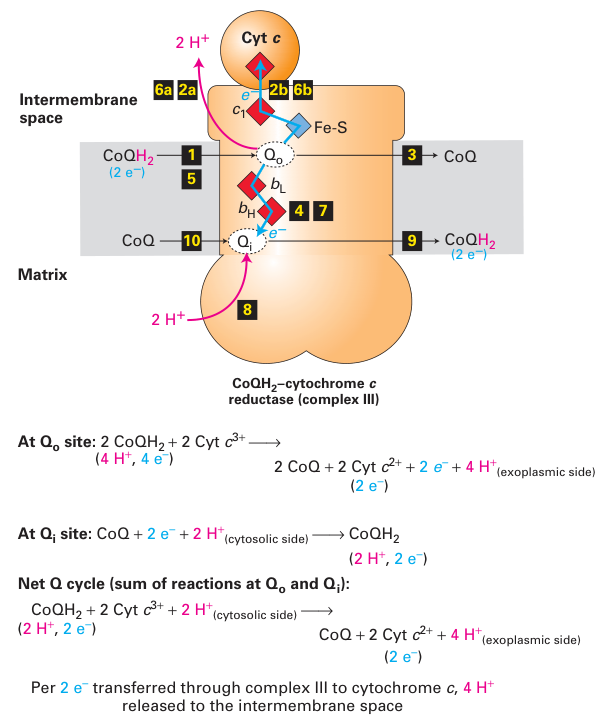
| CoQH2 | CoQH2 |
| CoQ | CoQ |
| CoQH2–cytochrome c reductase (complex III) | CoQH2–细胞色素c还原酶（复合体III） |
| Intermembrane space | 膜间隙 |
| Matrix | 基质 |
| Cyt c | 细胞色素c |
| Qo | Qo位点 |
| Qi | Qi位点 |
| Fe-S | Fe-S |
| c1 | 细胞色素c1 |
| bL | 细胞色素bL |
| bH | 细胞色素bH |
细胞色素c氧化酶（复合体IV） 细胞色素c被复合体III传来的一个电子还原后，在把电子运往细胞色素c氧化酶（复合体IV）时又被重新氧化（见图12-22a）。线粒体细胞色素c氧化酶含13个不同的亚基，但该酶的催化核心仅由三个亚基构成。其余亚基的功能尚不十分清楚。细菌细胞色素c氧化酶只含这三个催化亚基。在线粒体和细菌中，四分子还原型细胞色素c一次一个地结合到氧化酶上。电子从每个细胞色素c的血红素转移出来，先传给一对标记为Cua
2+的铜离子，再传给细胞色素a中的血红素，接着传给由Cub
2+和细胞色素a3中的血红素构成的氧还原中心，二者以三明治方式结合在一起，并把将被还原为两个H2O的O2分子隔离在其中。若干证据表明，O2经由一条或多条穿过蛋白的疏水通道到达还原中心，O2从膜的疏水核心流入这些通道，因为O2在那里比在水溶液中更易溶解（见图12-22a）。
这四个电子最终由复合体IV传给最终电子受体O2，生成两个H2O；H2O与CO2一起，是整个
氧化途径的终产物之一。氧还原过程中提出的中间体包括过氧阴离子（O2
2−）和羟自由基（OHr），以及一些不寻常的铁氧原子配合物。这些中间体若从复合体IV逸出，将对细胞有害，但它们极少逸出（见下文关于活性氧的讨论），因为它们被Cub
2+和细胞色素a3中的血红素隔离住了。为了从还原的O2生成H2O，质子被输送到还原中心。此外，还有其他质子从基质跨膜运送到膜间隙。在四个电子通过细胞色素c氧化酶复合体的过程中，来自基质的四个质子被转运过膜。因此，复合体IV每传递一个电子只转运一个质子，而复合体III利用Q循环每传递一个电子转运两个质子。不过，复合体IV转运这些质子并将该转运与O2还原在能量上偶联的机制，尚未完全清楚。
每传递四个电子，细胞色素c氧化酶所催化的总反应为
毒物氰化物曾被用作化学战剂、被间谍在被捕时用于自杀、在毒气室中用于处决囚犯，也被纳粹（齐克隆B毒气）用于大规模屠杀犹太人和其他人；它之所以有毒，是因为它能结合线粒体细胞色素c氧化酶（复合体IV）中的血红素a3，抑制电子传递，从而抑制氧化磷酸化和ATP的生成。氰化物是众多干扰线粒体能量生成的有毒小分子之一。■
电子传递链中电子载体的还原电位有利于电子从NADH流向O2 正如我们在第2章所看到的，部分还原反应的还原电位（E）
是该部分反应平衡常数的一种量度。除复合体III（CoQH2–细胞色素c还原酶）中的b型细胞色素外，电子传递链中电子载体的标准还原电位E°′从NADH到O2稳步升高。例如，对于部分反应
其标准还原电位为−320 mV，相当于传递两个电子的ΔG°′为+14.8 kcal/mol。因此，这一部分反应倾向于
向左进行；也就是说，倾向于把NADH氧化为NAD+。
相比之下，部分反应
的标准还原电位为+220 mV（ΔG°′ = −5.1 kcal/mol），对应一个电子的传递。因此，这一部分反应倾向于向右进行；也就是说，倾向于把细胞色素c（Fe3+）还原为细胞色素c（Fe2+）。
电子传递链中的最后一个反应，即O2还原为H2O的反应
其标准还原电位为+816 mV（传递两个电子的ΔG°′ = −37.8 kcal/mol），是整个系列中最正的；因此该反应也倾向于向右进行。
如图12-25所示，电子传递链中各载体的E°′值稳步升高、ΔG°′值相应降低，这有利于电子从NADH和FADH2（由琥珀酸生成）流向O2。电子在能量上"顺坡而下"地流过电子传递链各复合体时所释放的能量，驱动质子逆其浓度梯度跨线粒体内膜泵出。
电子传递链的多蛋白复合体组装成超复合体
50多年前，Britton Chance提出，电子传递复合体可能会组装成大型超复合体。这样做会使各复合体彼此靠近且高度有序地相邻，从而可能提高整个电子传递过程的速度和效率。的确，遗传学、生物化学和生物物理学研究已为电子传递链超复合体的存在提供了非常有力的证据。这些研究采用了称为蓝色非变性（BN）-PAGE和无色非变性（CN）-PAGE的聚丙烯酰胺凝胶电泳方法（它们能分离非常大的大分子蛋白复合体），并对其三维结构进行了电镜分析。其中一种超复合体含一份复合体I、一个复合体III二聚体（III2）以及一份或多份复合体IV（图12-26）。当这种I/III2/IV超复合体连同泛醌（CoQ）和细胞色素c一起从BN-PAGE凝胶中分离出来后，它被证明能把电子从NADH传递给O2；换言之，这种超复合体能够呼吸——它是一个呼吸体。在内膜蛋白浓度极高的背景下，超复合体形成的确切功能仍有待确证，但人们认为它可能涉及提高电子传递的速度和效率、稳定各个多蛋白复合体，或防止蛋白发生不当聚集。
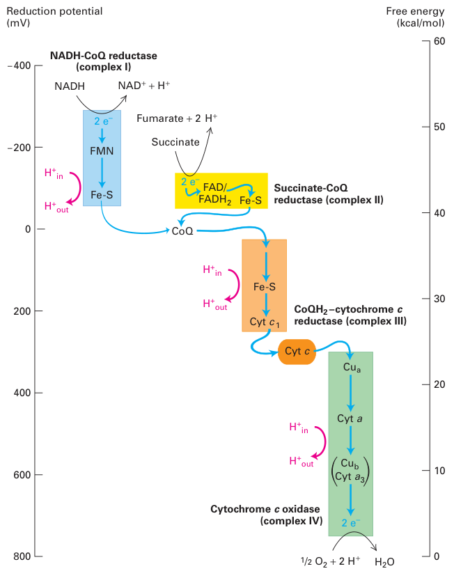
| NADH | NADH |
| NAD+ | NAD+ |
| FAD/FADH2 | FAD/FADH2 |
| Succinate | 琥珀酸 |
| Fumarate | 延胡索酸 |
| CoQ | CoQ |
| CoQH2 | CoQH2 |
| FMN | FMN |
| Fe-S | Fe-S |
| NADH-CoQ reductase (complex I) | NADH-CoQ还原酶（复合体I） |
| Succinate-CoQ reductase (complex II) | 琥珀酸-CoQ还原酶（复合体II） |
| CoQH2–cytochrome c reductase (complex III) | CoQH2–细胞色素c还原酶（复合体III） |
| Cytochrome c oxidase (complex IV) | 细胞色素c氧化酶（复合体IV） |
| Cyt c | 细胞色素c |
| Reduction potential (mV) | 还原电位（mV） |
| Free energy (kcal/mol) | 自由能（kcal/mol） |
独特的磷脂心磷脂（双磷脂酰甘油）似乎在这些超复合体的组装和功能中起重要作用。
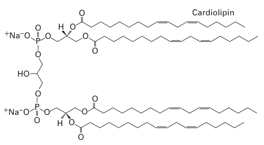
心磷脂通常不出现在真核细胞的其他膜中，而据观察它能与线粒体内膜的整合膜蛋白（如复合体II）结合。在阻断心磷脂合成的酵母突变体中进行的遗传学和生物化学研究已
证实心磷脂有助于线粒体超复合体的形成和活性；因此它被称为把电子传递链黏合在一起的胶水，尽管其确切机制仍有待阐明。此外，有证据表明心磷脂可能影响内膜对质子的结合与通透性，从而影响质子动力势。Barth综合征是一种人类X连锁遗传病，由决定心磷脂酰链结构的某种酶存在缺陷所致。Barth综合征患者心磷脂含量减少且结构异常，导致心脏和骨骼肌缺陷、生长迟缓以及其他异常。■
活性氧是电子传递的副产物
需氧生物所代谢的氧中，约有1–2%并未被转变成水，而是被部分还原为超氧阴离子自由基（O2
r−，其中"圆点"代表一个未成对电子）。
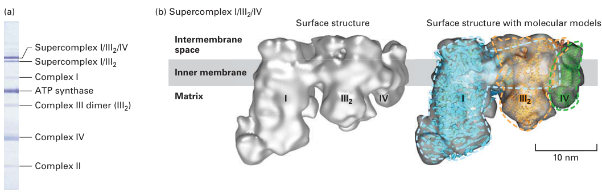
| Supercomplex I/III2/IV | 超复合体I/III2/IV |
| Supercomplex I/III2 | 超复合体I/III2 |
| Complex I | 复合体I |
| Complex II | 复合体II |
| Complex III dimer (III2) | 复合体III二聚体（III2） |
| Complex IV | 复合体IV |
| ATP synthase | ATP合酶 |
| Intermembrane space | 膜间隙 |
| Inner membrane | 内膜 |
| Matrix | 基质 |
自由基是指外层（价）壳层中有一个或多个未成对电子的原子，或含有这种原子的分子。许多（尽管并非全部）自由基通常化学反应性极强，会改变与之反应的分子的结构和性质。这类反应的产物往往本身也是自由基，因此能引发连锁反应，改变更多分子。超氧以及其他高反应性的含氧分子，无论属于自由基（如O2
r−）还是非自由基（如过氧化氢H2O2），都称为活性氧（ROS）。ROS备受关注，因为它们能与许多关键生物分子反应并造成损伤，包括脂类（特别是不饱和脂肪酸及其衍生物）、蛋白质和DNA，从而严重干扰其正常功能。在中到高水平时，ROS会导致通常所说的细胞氧化应激，并可能具有很强毒性。事实上，机体防御细胞（如巨噬细胞、中性粒细胞）会刻意产生活性氧来杀死病原体。在人类中，ROS的过量或不适当产生与许多不同疾病有关，包括心力衰竭、神经退行性疾病、酒精性肝病、糖尿病和衰老。
尽管细胞内有若干种产生活性氧的机制，但在真核细胞中，活性氧的主要来源是线粒体（或如下文所述叶绿体）中的电子传递。通过线粒体电子传递链的电子可具有足够能量还原分子氧（O2），形成超氧阴离子（图12-27，上）。然而，这只有在分子氧与链上的还原型
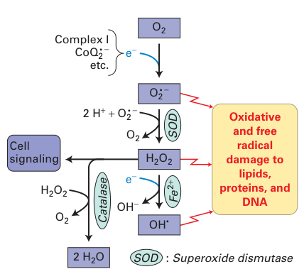
| Superoxide dismutase (SOD) | 超氧化物歧化酶（SOD） |
| Catalase | 过氧化氢酶 |
| Complex I | 复合体I |
| CoQ | CoQ |
| O2 | O2 |
| H2O2 | H2O2 |
| Fe2+ | Fe2+ |
| O2− | 超氧阴离子 |
| OHt | 羟自由基 |
| Cell signaling | 细胞信号传导 |
电子载体（铁、FMN、CoQH2）密切接触时才会发生。通常，这种接触因载体被隔离在相应蛋白内部而得以避免。然而，在某些位点（特别是复合体I和CoQr−，见图12-21）和某些条件下（如基质中NADH/NAD+比值高、不生成ATP时质子动力势高），电子更容易从链上"漏出"，把O2还原为O2
r−。超氧阴离子是一种特别不稳定且反应性强的活性氧。线粒体已进化出若干防御机制，有助于抵御O2
r−的毒性，包括利用能将超氧失活的酶，先把超氧转变为H2O2（含Mn的超氧化物歧化酶，称为SOD），再转变为H2O（过氧化氢酶）（见图12-27）。由于O2
r−的反应性极强且毒性很高，SOD和过氧化氢酶是已知催化最快的酶之一，它们能防止这些活性氧积累。SOD存在于线粒体和其他细胞区室中。过氧化氢本身就是一种活性氧，能轻易跨膜扩散并与细胞内各处的分子反应。它还可以被某些金属（如Fe2+）转变成更危险的羟自由基（OHr）。因此，细胞依赖过氧化氢酶以及其他酶（如过氧化物氧还蛋白和谷胱甘肽过氧化物酶）使H2O2失活；这些酶还能解除活性氧与不饱和脂酰基反应生成的脂质氢过氧化物产物的毒性。小分子抗氧化自由基清除剂，如维生素E和α-硫辛酸，也能防止氧化应激。虽然在许多细胞中过氧化氢酶仅位于过氧化物酶体，但在心肌细胞中它也存在于线粒体。这并不奇怪，因为心脏是哺乳动物中每克耗氧量最高的器官。
由于线粒体和叶绿体产生ROS的速率反映了这些细胞器的代谢状态（如质子动力势的强弱、NADH/NAD+比值），细胞已发展出ROS感知系统，如对ROS/氧化还原敏感的转录因子，来监测这些细胞器的代谢状态并作出相应反应——例如，改变编码细胞器特异性蛋白的核基因的转录速率。也有报道称H2O2可作为具有生理相关性的胞内和胞间信号分子。据报道，ROS参与的细胞过程多种多样，包括适应低氧（缺氧）和应激、生长因子和营养物对细胞增殖的调控、细胞分化、受调控的细胞死亡以及自噬。■
利用纯化电子传递链复合体的实验确立了质子泵送的化学计量
人们通过用去垢剂选择性地抽提线粒体膜、把各个复合体以近乎纯的形式分离出来，然后制备含各复合体的人工磷脂囊泡（脂质体），鉴定出了电子传递链中负责质子泵送的那些多蛋白复合体。当向这类脂质体加入适当的
电子供体和电子受体时，若嵌入的复合体转运质子，介质的pH就会发生变化（图12-28）。这类研究表明，NADH-CoQ还原酶（复合体I）每转运一对电子就转运四个质子，而细胞色素c氧化酶（复合体IV）每转运一对电子转运两个质子。
目前的证据表明，每有一对电子从NADH传递给O2，就有总共十个质子从基质跨线粒体内膜被运出
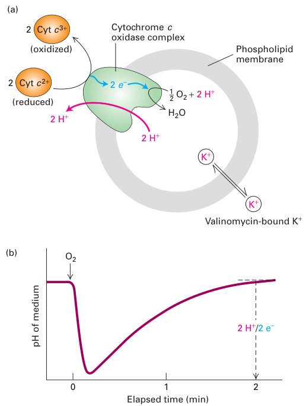
| Cyt c3+ (oxidized) | 细胞色素c3+（氧化型） |
| Cyt c2+ (reduced) | 细胞色素c2+（还原型） |
| Elapsed time (min) | 经过时间（min） |
| pH of medium | 介质pH |
| O2 | O2 |
| H2O | H2O |
| K+ | K+ |
| Valinomycin-bound K+ | 结合缬氨霉素的K+ |
| Phospholipid membrane | 磷脂膜 |
| Cytochrome c oxidase complex | 细胞色素c氧化酶复合体 |
（见图12-22）。由于琥珀酸-CoQ还原酶（复合体II）不转运质子，且当电子来自琥珀酸衍生的FADH2时复合体I被绕过，因此每有一对电子从这种FADH2传递给O2，只有六个质子被运过膜。
线粒体中的质子动力势主要来自跨内膜的电压梯度
电子传递链的主要结果是产生质子动力势，它是跨膜质子浓度（pH）梯度与跨线粒体内膜电位（或称电压梯度）之和。这两个组分在总质子动力势中的相对贡献，已被证明取决于膜对H+以外离子的通透性。只有当膜对其他阳离子和阴离子都不易通透时，才能形成显著的电压梯度。否则，阴离子会随质子一起从基质跨膜漏到膜间隙，阻碍电压梯度的形成。同样，如果H+以外的阳离子能沿与H+相反的方向（从膜间隙到基质）跨膜漏出，这种漏出就会抵消质子带给膜间隙的电荷，使电压梯度的形成短路。事实上，线粒体内膜对H+以外的离子确实不易通透。因此，质子泵送产生了一个电压梯度，由于电荷排斥，这使更多质子跨膜移动在能量上变得困难。结果，电子传递链的质子泵送在一个pH梯度其实相当小的背景下，建立起了一个稳固的电压梯度。
由于线粒体太小，无法用微电极刺入，因此跨线粒体内膜的电位和pH梯度无法直接测量。不过，通过向进行呼吸的线粒体悬液中加入放射性42K+离子和痕量缬氨霉素，并测量在基质中累积的放射性量，可以间接测得电位。虽然内膜通常对K+不通透，但缬氨霉素是一种离子载体，即一种小的脂溶性分子，能选择性结合特定离子（此处为K+）并携带其穿过本来不通透的膜。在缬氨霉素存在下，42K+会依照电位在分离线粒体的内膜两侧达到平衡：膜的基质侧越负，就有越多的42K+被吸引并在基质中积累。
达到平衡时，测得的基质中放射性K+离子浓度[Kin]约为周围介质中浓度[Kout]的500倍。将此值代入能斯特方程（见第11章）可知，进行呼吸的线粒体中跨内膜的
电位E（以mV为单位）为−160 mV，基质（内侧）为负：
研究者可以把对pH敏感的荧光染料包埋在由线粒体内膜形成的囊泡内部（膜的基质侧朝内），来测量基质（内侧）的pH。他们还可以测量囊泡外（相当于膜间隙）的pH，从而确定pH梯度（ΔpH）——结果约为1个pH单位。1个pH单位的差别代表H+浓度相差十倍，因此根据能斯特方程，在20 °C时跨膜1个单位的pH梯度相当于59 mV的电位。这样，知道了电压梯度和pH梯度，我们便可按如下公式计算质子动力势（pmf）：
其中R是气体常数，为1.987 cal/(度 · mol)，T是温度（以开尔文度为单位），F是法拉第常数[23,062 cal/(V · mol)]，Ψ是跨膜电位；Ψ和pmf以毫伏为单位。跨内膜的电位Ψ为−160 mV（内侧为负），ΔpH相当于约60 mV。因此，总质子动力势为−220 mV，其中跨膜电位约占总量的73%。
- 到柠檬酸循环结束时（阶段II），葡萄糖和脂肪酸共价键中原有的能量大部分已转变成还原型辅酶NADH和FADH2中的高能电子。这些电子的能量被用来产生质子动力势。
- 在线粒体中，质子动力势是通过把电子流（从NADH和FADH2到O2）与质子从基质跨内膜向膜间隙的能量上坡运输相偶联而产生的。这一过程，连同由质子动力势驱动、从ADP和Pi合成ATP的过程，称为氧化磷酸化。
- 当电子从FADH2和NADH流向O2时，会经过多个多蛋白复合体。四个主要复合体是NADH-CoQ还原酶（复合体I）、琥珀酸-CoQ还原酶（复合体II）、CoQH2–细胞色素c还原酶（复合体III）和细胞色素c氧化酶（复合体IV）（见图12-22）。
- 每个复合体含有一个或多个携带电子的辅基，包括铁硫簇、黄素、血红素基团和铜离子（见表12-4）。含血红素的细胞色素c和脂溶性小分子辅酶Q（CoQ）是可移动的载体，在各复合体之间穿梭传递电子。
- 复合体I、III和IV把质子从基质泵入膜间隙。复合体I和II把CoQ还原为CoQH2，后者把质子和高能电子携带给复合体III。血红素蛋白细胞色素c把电子从复合体III携带给复合体IV，后者用这些电子来泵送质子并把分子氧还原为水。
- 来自NADH的高能电子经复合体I进入电子传递链，而来自FADH2的高能电子（在柠檬酸循环中由琥珀酸产生）则经复合体II进入电子传递链。脂酰辅酶A β氧化第一步由FADH2产生的额外电子，增加了可供电子传递使用的CoQH2供应。
- Q循环使每对通过复合体III的电子能转运四个质子（见图12-24）。
- 链中每个电子载体都从还原电位较不负的载体接受一个电子或一对电子，再把电子传递给还原电位较正的载体。因此，电子载体的还原电位有利于电子从NADH和FADH2到O2的单向、"顺坡而下"的流动（见图12-25）。
- 在线粒体内膜中，电子传递复合体组装成由特殊磷脂心磷脂维系在一起的超复合体。超复合体的形成可能提高质子动力势产生的速度和效率，或发挥其他作用。
- 活性氧（ROS）是电子传递链的有毒副产物，能修饰并损伤蛋白质、DNA和脂类。特定的酶（如谷胱甘肽过氧化物酶、过氧化氢酶）和小分子抗氧化剂（如维生素E）有助于防止ROS引起的损伤（见图12-27）。ROS也可用作胞内信号分子。
- 每有一对电子从NADH流向O2，就有总共10个H+从基质跨内膜被转运（见图12-22）；而每有一对电子从FADH2流向O2，则转运6个H+。
- 质子动力势主要来自质子泵送所产生的跨内膜电压梯度；pH梯度在数量上起的作用较小。
12.5 利用质子动力势合成ATP
1961年，Peter Mitchell提出一个假说：跨线粒体内膜的质子动力势是ATP合成的直接能量来源。当时几乎所有
研究氧化磷酸化和光合作用的研究者都否定了他的这一提议（称为化学渗透假说）。他们更青睐一种与当时已充分阐明的糖酵解中底物水平磷酸化相似的机制，即底物分子（如糖酵解中的磷酸烯醇式丙酮酸）的化学转变直接与ATP合成偶联。然而，尽管大批研究者付出了巨大努力，始终没有观察到支持这种由底物水平磷酸化介导的机制的有力证据。
支持Mitchell假说的确凿证据，有赖于纯化并重建细胞器膜与膜蛋白的技术。用含ATP合酶的叶绿体类囊体膜（相当于线粒体内膜）制成的囊泡所做的一个实验（概述于图12-29），是证明ATP合酶是一种
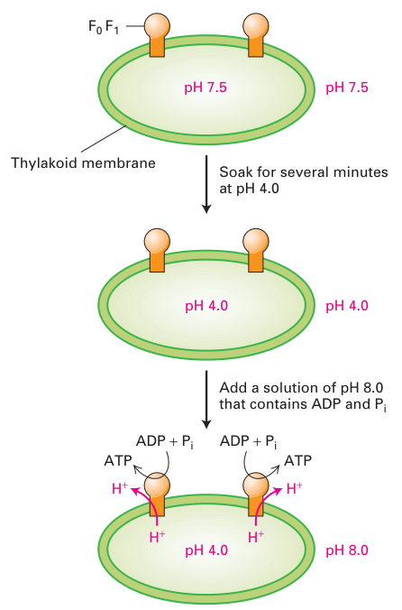
| ATP | ATP |
| ADP | ADP |
| Pi | Pi |
| F0 | F0 |
| F1 | F1 |
| Thylakoid membrane | 类囊体膜 |
| Soak for several minutes | 浸泡数分钟 |
生成ATP的酶、且ATP的生成依赖质子顺电化学梯度向下移动的实验之一。事实证明，质子穿过膜时实际上是经由ATP合酶通过的。
后文将会看到，ATP合酶是一个多蛋白复合体，可分为两个亚复合体，称为F0（含该复合体的跨膜部分）和F1（含该复合体的球状部分，后者位于膜上方，在线粒体中指向基质）。因此ATP合酶常被称为F0F1复合体；本书中这两个术语可以互换使用。
细菌、线粒体与叶绿体共用相同的ATP合成机制
尽管细菌没有内膜，需氧细菌仍通过与真核细胞线粒体、叶绿体中相同的过程进行氧化磷酸化（图12-30）。催化糖酵解途径和柠檬酸循环反应的酶存在于细菌的细胞质中；把NADH氧化为NAD+并把电子传递给最终受体O2的酶，则位于细菌质膜上。电子经这些膜载体传递与质子被泵出细胞相偶联。质子顺其浓度梯度经ATP合酶流回细胞，驱动ATP的合成。细菌的ATP合酶（F0F1复合体）在结构与功能上与线粒体和叶绿体的ATP合酶基本相同，但更易纯化和研究。
为什么原核生物与真核细胞器会共用相同的ATP合成机制？原始需氧细菌很可能是真核细胞中线粒体和叶绿体的共同祖先（见图12-7）。按照这一内共生假说，线粒体内膜源自细菌质膜，其胞质面朝向后来成为线粒体基质的一侧。同样，在植物中，祖先细菌的质膜成为叶绿体的类囊体膜，其胞质面朝向后来成为叶绿体基质腔的一侧（叶绿体的结构将在12.6节描述）。在所有情况下，ATP合酶都以其催化ATP合成的球状F1结构域位于膜的胞质面，因此ATP总是在胞质面生成（见图12-30）。质子总是穿过ATP合酶，从膜的胞质外侧面流向胞质面。这一流动由质子动力势驱动。胞质面相对于胞质外侧面的电位无一例外都是负的。
除合成ATP外，细菌质膜两侧的质子动力势还用于驱动其他过程，包括摄取糖类等营养物质（利用质子/糖同向转运体）以及细菌鞭毛的旋转。因此，化学渗透偶联说明了我们在第11章讨论主动转运时提出的一个重要原理：膜电位、跨膜的质子（和其他离子）浓度梯度，以及ATP中的磷酸酐
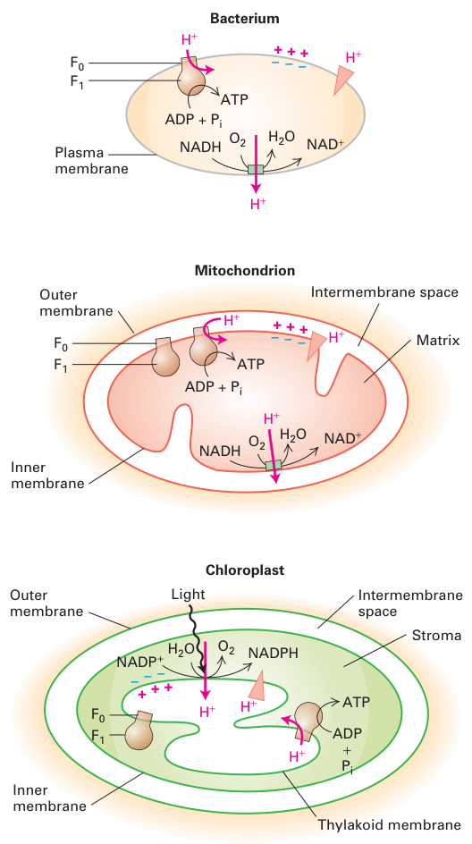
| NADH | NADH |
| NAD+ | NAD+ |
| O2 | O2 |
| H+ | H+ |
| ATP | ATP |
| ADP + Pi | ADP + Pi |
| Bacterium | 细菌 |
| Plasma membrane | 质膜 |
| F0 | F0 |
| F1 | F1 |
| Mitochondrion | 线粒体 |
| Intermembrane space | 膜间隙 |
| Chloroplast | 叶绿体 |
| Thylakoid membrane | 类囊体膜 |
| Stroma | 基质 |
键，是等价且可相互转换的势能形式。实际上，通过ATP合酶合成ATP可以看作反方向的主动转运。
ATP合酶由F0和F1两个多蛋白复合体组成
随着Mitchell的化学渗透机制被普遍接受，研究者把注意力转向ATP合酶的结构与工作方式。该复合体有两个主要的亚复合体F0和F1，二者都是多聚体
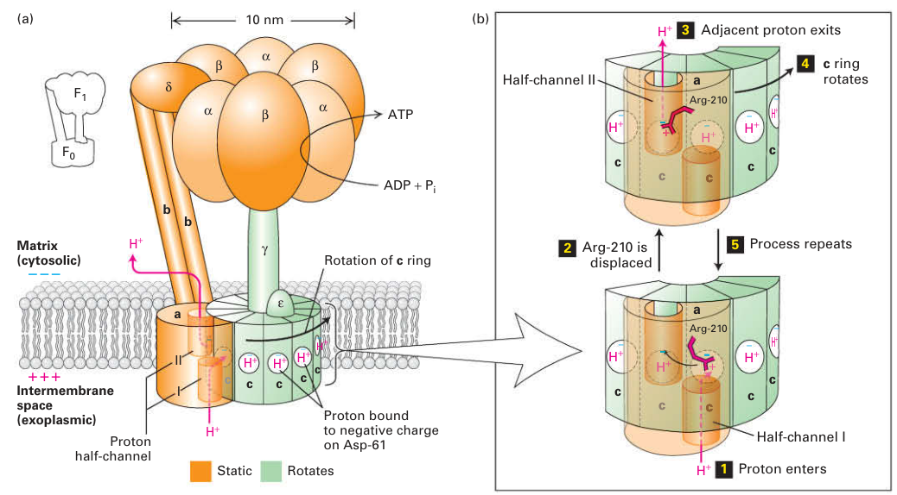
| c ring | c环 |
| F0 | F0 |
| F1 | F1 |
| ATP | ATP |
| H+ | H+ |
| Half-channel I | 半通道I |
| Half-channel II | 半通道II |
| Proton half-channel | 质子半通道 |
| Arg-210 | Arg-210 |
| Asp-61 | Asp-61 |
| Intermembrane space | 膜间隙 |
| Matrix | 基质 |
| Rotation of c ring | c环旋转 |
| Adjacent proton exits | 相邻质子排出 |
| Arg-210 is displaced | Arg-210被置换 |
蛋白质（图12-31a）。F0亚复合体含三种整合膜蛋白，分别称为a、b和c。在细菌和酵母线粒体中，最常见的亚基化学计量为a1b2c10，但不同真核生物每个亚复合体中c亚基的数目在8至15之间变化。在所有情况下，c亚基都在膜的平面内形成一个甜甜圈状的环（"c环"）。一个a亚基和两个b亚基彼此刚性连接，但不与c环相连，这是该蛋白的一个关键特征，稍后我们会回到这一点。
F1亚复合体是一个水溶性复合体，由五种不同的多肽组成，其组成为α3β3γδε，通常
牢固地结合在膜表面的F0亚复合体上。F1亚复合体中杆状γ亚基的下端是一个卷曲螺旋，嵌入F0的c亚基环中央，看似与之刚性相连。因此，当c亚基环旋转时，杆状的γ亚基随之移动。F1的ε亚基与γ刚性相连，并与F0的若干c亚基形成紧密接触。α和β亚基决定了F1亚复合体整体的球状外形，它们以交替顺序结合形成六聚体αβαβαβ，即(αβ)3，坐落于单个长γ亚基的上方。F1的δ亚基与F1的一个α亚基永久连接，同时也与F0的b亚基结合。因此，F0亚复合体的a和b亚基与F1亚复合体的δ亚基和(αβ)3六聚体共同构成一个锚定在膜中的刚性结构。杆状的b亚基构成一个"定子"，使坐落在γ亚基上的(αβ)3六聚体不能移动；γ亚基的旋转连同F0中c亚基的旋转，在下文所述的ATP合成机制中起着关键作用。
当ATP合酶嵌入膜中时，F1亚复合体形成一个从胞质面（线粒体中为基质面）突出的球状头部。由于从膜上分离的F1在没有F0亚复合体时能够催化ATP水解（ATP转变为ADP加Pi），因此被称为F1 ATP酶；然而它在细胞中的功能恰好相反，是合成ATP。ATP水解是自发过程（ΔG < 0）；因此驱动该ATP酶"反向"工作以生成ATP需要能量。
由质子经F0移动驱动的F1 γ亚基旋转为ATP合成提供动力
F0F1中球状F1亚复合体的三个β亚基各自都能结合ADP和Pi，并在与质子从胞质外介质（线粒体中的膜间隙）流向胞质（基质）介质相偶联时，催化吸能的ATP合成。然而，质子流动与ATP合成之间的能量偶联并不发生在蛋白质的同一部位，因为F1 β亚基上进行ATP合成的核苷酸结合位点，距离F0中质子所流经的膜嵌入部分的表面有9–10 nm。关于F0F1复合体如何合成ATP，目前最被广泛接受的模型——结合改变机制——认为二者之间是间接偶联（图12-32）。
按照这一机制，质子经F0"下坡"移动所释放的能量直接驱动c亚基环连同与之相连的γ和ε亚基一起旋转（见图12-31a）。γ亚基起凸轮的作用，即一根不对称的旋转轴；它在F1静止的(αβ)3六聚体中央由c环驱动的旋转，使它依次顶压每个β亚基，从而引起它们在三态之间发生周期性构象变化。如图12-32所示，从(αβ)3六聚体球状结构底部观察，γ亚基相对于固定的(αβ)3六聚体旋转，使每个β亚基的核苷酸结合位点按下列顺序循环经历三种构象状态：
1. O（开放）状态，与ATP结合极差，与ADP和Pi结合也弱
2. L（松散）状态，结合ADP和Pi较强，但不能结合ATP
3. T（紧密）状态，结合ADP和Pi非常紧密，以致二者自发反应形成ATP
在T状态下，生成的ATP结合得非常紧密，难以从该位点解离——它被"困"住，直到γ亚基再次旋转使该β亚基回到O状态，才释放ATP并重新开始循环。ATP或ADP也会结合到三个α亚基上的调节位点或别构位点；这种结合按基质中ATP和ADP的水平调节ATP合成的速率，但不直接参与由ADP和Pi合成ATP的催化步骤。
有多类证据支持结合改变机制。首先，生化研究表明，在分离的F1颗粒上，三个β亚基之一能紧密结合ADP和Pi，随后形成ATP，且形成的ATP仍紧密结合。测得该反应的ΔG接近零，说明一旦ADP和Pi结合到β亚基的T状态，它们便自发形成ATP。重要的是，在分离的F1颗粒上，结合的ATP从β亚基上解离极其缓慢。这一发现提示，ATP的解离必须由β亚基的构象变化来驱动，而后者又源于质子移动引起的c环旋转。
(αβ)3六聚体的X射线晶体学分析得出了一个惊人的结论：尽管三个β亚基在序列和整体结构上完全相同，但各亚基中的ADP/ATP结合位点具有不同的构象。最合理的结论是，三个β亚基在一种依赖能量的反应中于三种构象状态（O、L、T）之间循环，这些状态中核苷酸结合位点的结构差异很大。
在另一些研究中，完整的F0F1复合体用化学交联剂处理，使γ和ε亚基与c亚基环共价连接。观察到经这样处理的复合体仍能合成ATP，或利用ATP驱动质子泵送，表明被交联的这些蛋白质正常情况下是一起旋转的。
最后，结合改变机制所提出的γ亚基相对于固定的(αβ)3六聚体的旋转，在图12-33所示的一个巧妙实验中得到了直接观察。该实验的一种变体把微小的金颗粒（而非肌动蛋白丝）连接到γ亚基上，观察到的旋转速率达每秒134转。三个ATP的水解（你回想一下，这是同一酶催化的逆反应）被认为可驱动一整圈旋转；这一结果与实验测定的F0F1复合体ATP水解速率——约每秒400个ATP——接近。在一项相关实验中，观察到与ε亚基和一个c亚基环相连的γ亚基相对于固定的(αβ)3六聚体旋转。这些实验中γ亚基的旋转由ATP水解驱动。这些观察证实，γ亚基连同与之相连的
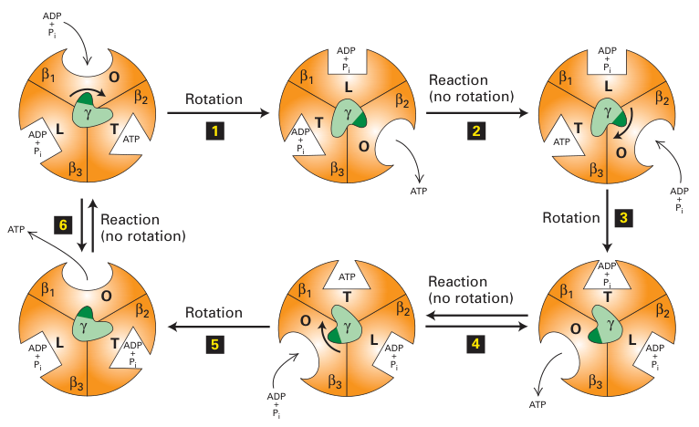
| ATP | ATP |
| ADP + Pi | ADP + Pi |
| Rotation | 旋转 |
| Reaction (no rotation) | 反应（不旋转） |
| β1 | β1 |
| β2 | β2 |
| β3 | β3 |
| γ | γ |
c环和ε亚基确实会旋转，从而驱动β亚基发生结合ADP和Pi、继而合成并释放ATP所必需的构象变化。
合成一个ATP需要多个质子穿过ATP合酶
一个简单的计算表明，由ADP和Pi合成一分子ATP需要不止一个质子通过。尽管该反应在标准条件下的ΔG为+7.3 kcal/mol，但在线粒体内反应物的浓度下，ΔG可能更高（+10至+12 kcal/mol）。我们可以用能斯特方程计算1 mol质子顺
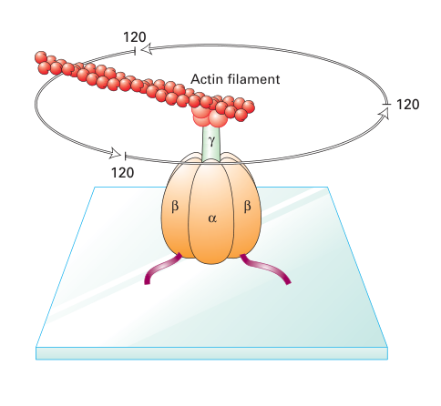
| Actin filament | 肌动蛋白丝 |
| F1 subcomplex | F1亚复合体 |
| γ | γ |
220 mV（0.22 V）的电化学梯度向下移动所释放的自由能，取n = 1并以伏特为单位测量ΔE：
由于1 mol质子顺梯度向下移动所释放的自由能略高于5 kcal，由ADP和Pi合成每一分子ATP至少需要两个质子通过。
F0的c环旋转由流经跨膜通道的质子驱动
每个c亚基含两条跨膜的α螺旋，形成发夹样结构。每个c亚基中，其中一条螺旋中央的一个天冬氨酸残基——Asp-61（按大肠杆菌ATP酶编号）——被认为在质子移动中起关键作用：质子穿膜时它结合并释放质子。用毒物二环己基碳二亚胺对该天冬氨酸进行化学修饰，或将其突变为丙氨酸，都会特异性地阻断质子通过F0。按照目前的一种模型，质子经两个错开的半通道I和II穿过膜（见图12-31a和b）。它们之所以称为半通道，是因为各自只延伸至膜的一半；通道在膜内的末端位于膜中部Asp-61所在的高度。半通道I仅向胞质外侧面开放，半通道II仅向胞质面开放。旋转之前，c亚基中每个Asp-61的羧基侧链都结合着一个质子，只有与半通道I接触的那个c亚基例外。该未质子化羧基（即"空"质子结合位点；见图12-31b底部）上的负电荷，通过与来自a亚基的Arg-210带正电的侧链相互作用而被中和。质子跨膜转位始于一个来自胞质外介质的质子向上穿过半通道I（图12-31b，步骤1）。当该质子移入空的质子结合位点时，它把Arg-210侧链挤开，后者摆向与半通道II接触的相邻c亚基上已占据的质子结合位点（步骤2）。结果，Arg-210带正电的侧链把结合在相邻c亚基Asp-61上的质子挤掉。这个被挤掉的质子此时可以沿半通道II上行，进入胞质介质（步骤3）。于是，当一个质子从半通道I进入并结合到c环上时，另一个质子经半通道II被释放到膜的另一侧。整个c环因热运动/布朗运动而旋转（步骤4），使新近去质子化的c亚基转到半通道I上方，同时一个相邻的、已质子化的c亚基旋转过来占据它在半通道II下方的位置。随着更多质子顺其电化学梯度从胞质外介质流向胞质介质，整个循环重复进行（步骤5）。在每一次部分旋转（360°除以
环中c亚基的数目）中，c环的旋转是棘轮式的，即环的净移动只朝一个方向进行。驱动质子跨膜、从而驱动c环旋转的能量，来自膜两侧的电化学梯度。如果质子流动的方向逆转（可通过实验反转质子梯度和质子动力势的方向来实现），c环旋转的方向也随之逆转。
由于F1的γ亚基紧紧连接在F0的c环上，与质子移动相伴的c环旋转会引起γ亚基旋转。按照结合改变机制，γ旋转120°为合成一个ATP提供动力（见图12-32）。因此，c环完整旋转360°将生成三个ATP。在大肠杆菌中，F0的组成为a1b2c10，10个质子的移动驱动一次完整旋转，从而合成三个ATP。这一数值与ATP合成过程中质子流的实验数据一致，为图12-31所示把质子移动与c环旋转相偶联的模型提供了间接支持。叶绿体的F0每个环含14个c亚基，合成三个ATP需要14个质子移动。这些在其他方面相似的F0F1复合体为何演化出不同的H+:ATP比值，目前尚不清楚。
高分辨率电子显微断层成像（图12-34）为c环/a亚基界面的结构以及F0F1结构与功能的其他特征提供了更多认识。实验使用溶于去污剂、随后掺入人工磷脂双分子层的F0F1，或分离的线粒体膜。图12-34a和b显示每个c亚基（绿色）中两条跨膜α螺旋的两种视图，它们共同构成c环。在a亚基（橙色）的一部分中，一束几乎平行于线粒体内膜并嵌入其中的四条α螺旋构成与c环的界面，并把Arg 210的侧链定位到c环旁，使其能够如图12-31所示介导质子从Asp 61的置换。c环/a亚基界面还构成两个质子半通道，质子经此从膜间隙流出（红色箭头），绕过c环（图12-34b中的黑色箭头），然后进入基质（红色箭头）。每个F0F1单体使膜弯曲约43°（图12-34c）。单体二聚化后使膜产生高度弯曲（约86°），随后排列成长行，参与形成薄饼状（扁平）和管状嵴的边缘与末端（图12-34d）。
线粒体内膜上的ATP-ADP交换由质子动力势驱动
质子动力势在细胞中用于驱动多种耗能过程。除为ATP合成提供动力外，线粒体内膜两侧的质子动力势还驱动把线粒体内由氧化磷酸化生成的ATP与细胞质中的ADP和Pi进行交换。这一交换对于持续供应
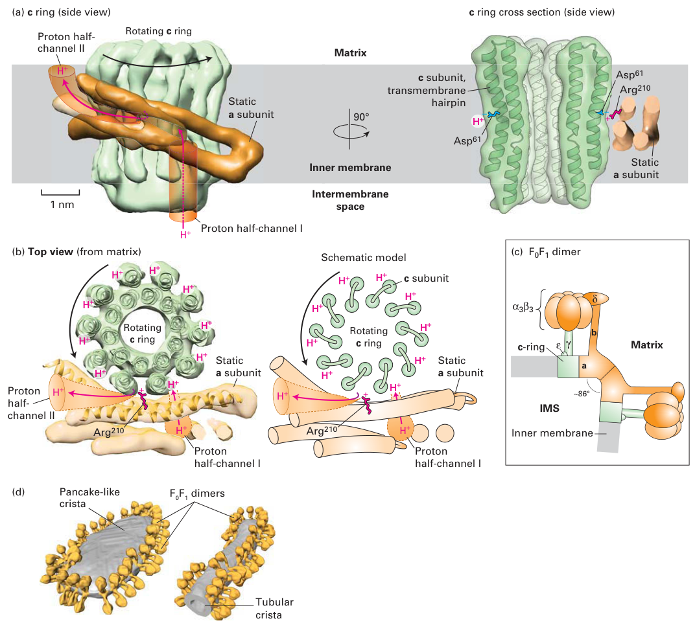
| c ring | c环 |
| Rotating c ring | 旋转的c环 |
| c subunit | c亚基 |
| c subunit, transmembrane hairpin | c亚基跨膜发夹 |
| Static a subunit | 静止的a亚基 |
| Proton half-channel I | 质子半通道I |
| Proton half-channel II | 质子半通道II |
| Matrix | 基质 |
| Inner membrane | 内膜 |
| Intermembrane space | 膜间隙 |
| Tubular crista | 管状嵴 |
| F0F1 dimer | F0F1二聚体 |
| Arg 210 | Arg 210 |
| Asp 61 | Asp 61 |
| Saccharomyces cerevisiae | 酿酒酵母 |
氧化磷酸化得以继续所需的ADP和Pi底物是必需的，由内膜上的两种蛋白质介导：一种磷酸转运体（HPO4
2−/OH−反向转运体），它介导一个HPO4
2−的内运并偶联一个OH−的外运；另一种是ATP/ADP反向转运体（图12-35）。ATP/ADP反向转运体只有当一分子ATP同时输出时，才允许一分子ADP进入基质。ATP/ADP反向转运体是由两个30,000 Da亚基组成的二聚体，占线粒体内膜蛋白质的10–15%，因此是较丰富的线粒体蛋白之一。两种反向转运体协同作用，产生一个ADP3−和一个Pi的内流
2−，以及一个ATP4−连同一个OH−的外排。每个被运出到外侧的OH−都与一个质子结合——该质子是在电子传递过程中被转位到膜间隙的——形成H2O。因此，经由电子传递的质子转位驱动整个反应朝ATP外运、ADP和Pi内运的方向进行。
由于电子传递过程中被转位出线粒体的质子有一部分为ATP-ADP交换提供动力（与外运的OH−结合），可供ATP合成使用的质子就减少了。据估计，每转位出四个质子，其中三个用于合成一分子ATP，一个用于驱动ATP从线粒体外运以换取ADP和Pi。这种把质子浓度
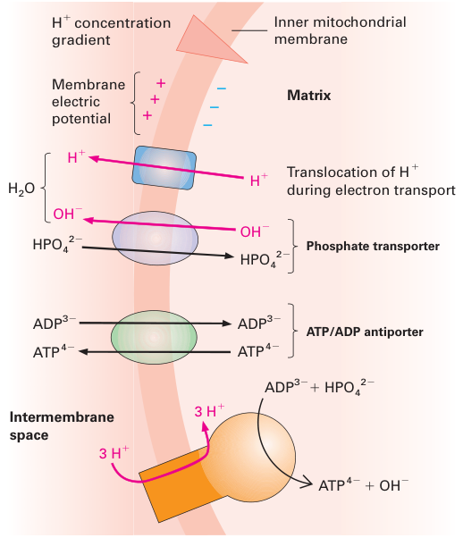
| HPO4 2− | HPO4 2− |
| ADP3− | ADP3− |
| ATP4− | ATP4− |
| OH− | OH− |
| H2O | H2O |
| concentration gradient | 浓度梯度 |
| Membrane electric potential | 膜电位 |
| Phosphate transporter | 磷酸转运体 |
| ATP/ADP antiporter | ATP/ADP反向转运体 |
| Inner mitochondrial membrane | 线粒体内膜 |
| Matrix | 基质 |
| Intermembrane space | 膜间隙 |
| Translocation of H+ during electron transport | 电子传递过程中H+的转位 |
梯度中的能量用于把ATP运出线粒体以换取ADP和Pi的过程，保证了细胞质中ATP与ADP的高比值；在细胞质中，ATP高能磷酸酐键的水解被用来驱动许多耗能反应。
对后来证明是ATP/ADP反向转运体活性的研究，最早记载于约2000年前：Dioscorides（约公元40–90年）描述了地中海地区常见的一种毒草——刺苞菊属植物Atractylis gummifera——的作用。同样的活性物质也存在于祖鲁人传统的多用途草药impila（Callilepis laureola）中。在祖鲁语中，impila意为"健康"，尽管这种草药与大量中毒事件有关。1962年，人们证明这些草药中的活性物质atractyloside（它抑制ATP/ADP反向转运体）能抑制线粒体外ADP的氧化磷酸化，但不抑制线粒体内ADP的氧化磷酸化。这一发现证明了ATP/ADP反向转运体的重要性，并为研究这种转运体的工作机制提供了有力工具。
Dioscorides住在Tarsus附近——当时是小亚细亚东南部罗马的一个行省，即今天的土耳其。他的五卷本《药物论》（De Materia Medica，"论药物的制备、性质和检验"）描述了约1000种天然产物的药用性质以及4740种药用用途。在大约1600年间，它从北欧到印度洋都是医学的基本参考文献，相当于今天的《医师案头参考》，是使用药物的指南。■
线粒体氧化的速率通常取决于ADP水平
如果给完整的分离线粒体提供NADH（或琥珀酸这类FADH2来源）以及O2和Pi，但不提供ADP，那么随着内源性ADP被ATP生成耗尽，NADH的氧化和O2的还原会迅速停止。此时若加入ADP，NADH的氧化便迅速恢复。因此，线粒体只有在有ADP和Pi来源以生成ATP时，才能氧化FADH2和NADH。这一现象称为呼吸控制，其原因是NADH和琥珀酸（FADH2）的氧化与质子跨线粒体内膜转运必然偶联。如果生成的质子动力势在由ADP和Pi合成ATP（或其他耗能过程）时未被耗散，跨膜质子浓度梯度和膜电位都会升高到极高水平。到那时，再把更多质子泵过内膜需要太多能量，泵送最终停止，从而阻断NADH及其他底物的偶联氧化。
棕色脂肪中的线粒体利用质子动力势产生热量
棕色脂肪组织因含大量线粒体而呈棕色，专门用于产热。相比之下，白色脂肪组织专门用于储存脂肪，线粒体相对较少。
棕色脂肪组织的线粒体内膜含有产热素，这是一种天然解偶联氧化磷酸化和质子动力势生成的蛋白质。产热素即UCP1，是大多数真核生物（但发酵性酵母中没有）中发现的几种解偶联蛋白（UCP）之一。产热素使线粒体内膜对质子通透，从而耗散质子动力势。结果，电子传递链中NADH氧化所释放、原本用于建立质子梯度的能量，不再经由ATP合酶用于合成ATP。相反，当质子经产热素顺其浓度梯度回到基质时，能量以热的形式释放。产热素是质子转运体，而不是质子通道，它转运质子穿过膜的速率比典型离子通道慢100万倍（见图11-2）。产热素在序列上与线粒体ATP/ADP转运体相似，构成ATP/ADP转运体家族的许多其他线粒体转运蛋白也是如此。某些小分子毒物也通过使线粒体内膜对质子通透而起到解偶联剂的作用。一个例子是脂溶性化学物质2,4-二硝基苯酚（DNP），它能可逆地结合和释放质子，把它们从膜间隙经内膜穿梭运入基质。
环境条件调节棕色脂肪线粒体中产热素的量。例如，当大鼠适应寒冷温度时，其组织产热的能力因产热素合成被诱导而增强。在适应寒冷的动物中，产热素可占棕色脂肪线粒体内膜总蛋白的15%。
多年来人们知道，小型动物和人类婴儿表达大量棕色脂肪，但几乎没有证据表明它在成年人中起重要作用。在新生儿中，棕色脂肪线粒体的产热对生存至关重要，冬眠哺乳动物也是如此。在毛皮海豹和其他自然适应寒冷的动物中，肌细胞线粒体含产热素；结果，大部分质子动力势被用于产热，从而维持体温。近来，研究者利用精密的功能成像方法（如正电子发射断层成像）明确证实了成年人颈部、锁骨和其他部位存在棕色脂肪，且其水平在暴露于寒冷时显著升高。此外，对产热脂肪细胞的生化性质和发育起源的详细分析，揭示了这类细胞至少存在两种亚型：经典的棕色脂肪细胞，由也用于生成骨骼肌细胞的前体细胞发育而来；以及米色脂肪细胞，其详细性质（基因表达模式、对激素信号的响应）与棕色脂肪细胞不同。进一步刻画米色脂肪细胞及其对正常代谢和疾病的影响，可能带来治疗或预防某些代谢紊乱的新途径。■
- Peter Mitchell提出化学渗透假说，认为跨线粒体内膜的质子动力势是ATP合成的直接能量来源。细菌、线粒体和叶绿体都使用相同的化学渗透机制和相似的ATP合酶来生成ATP（见图12-30）。ATP合酶（也称F0F1复合体）在质子顺其电化学质子梯度流经线粒体内膜（细菌中为质膜）时催化ATP合成。F0含一个由8–14个c亚基组成的环（数目随生物而异），它与F1中杆状的γ亚基和ε亚基刚性连接，这些亚基在ATP合成过程中旋转；坐落于γ亚基之上的是F1的六聚体头部〔(αβ)3〕，它突入线粒体基质（细菌中为细胞质），三个β亚基是ATP合成的位点（见图12-31和12-34a、b）。F1的γ亚基插入不旋转的(αβ)3六聚体中央，像凸轮轴一样工作，其旋转引起三个F1 β亚基中核苷酸结合位点构象的改变（见图12-32）；通过这种结合改变机制，β亚基结合ADP和Pi，把它们缩合形成ATP，然后释放ATP，c、γ和ε亚基组成的组件每转一圈生成三个ATP。质子经F0 a亚基与c环界面处的两个半通道跨膜移动，为c环连同与之相连的F1 ε和γ亚基的旋转提供动力。F0F1复合体使线粒体内膜弯曲，从而形成其特有的高度弯曲以及管状和薄饼状的嵴结构（见图12-34c和d）。质子动力势还驱动从细胞质摄取Pi和ADP以换取线粒体ATP和OH−，因而减少了可用于ATP合成的能量；参与这一交换的ATP/ADP反向转运体是线粒体内膜中最丰富的蛋白质之一（见图12-35）。线粒体持续氧化NADH和还原O2依赖于基质中存在足够的ADP，这一现象称为呼吸控制，是协调线粒体中氧化与ATP合成的重要机制。在棕色脂肪中，线粒体内膜含解偶联蛋白产热素，这是一种质子转运体，把质子动力势耗散为热；某些化学物质（如DNP）也起解偶联剂的作用，具有相同效果，把氧化磷酸化与电子传递解偶联。产热脂肪细胞有两种不同类型：棕色脂肪细胞和米色脂肪细胞。
12.6 光合作用与吸光色素
现在我们转向光合作用，这是合成ATP的第二个关键过程。在植物中，光合作用发生在叶绿体中；叶绿体是大型细胞器，主要存在于叶片细胞内。在光合作用期间，叶绿体捕获太阳光的能量，将其转化为ATP和NADPH形式的化学能，然后利用这些能量以二氧化碳和水为原料制造复杂的碳水化合物。所产生的主要碳水化合物是己糖（六碳糖）的聚合物：蔗糖——一种葡萄糖-果糖二糖（见图2-19），以及淀粉——由两类大型不溶性葡萄糖聚合物（直链淀粉和支链淀粉）组成的混合物。淀粉是植物中主要的储存碳水化合物（图12-36）。淀粉在叶绿体中合成并储存。蔗糖则在叶的胞质溶胶中由叶绿体产生的三碳前体合成；它被运输到非光合（非绿色）植物组织（如根和种子），这些组织用前几节所述的途径将其代谢以获取能量。
植物中的光合作用，以及真核单细胞藻类和若干光合细菌（如蓝细菌和原绿球藻）中的光合作用，还产生氧气。产氧光合作用的总反应为
是碳水化合物被氧化为CO2和H2O的总反应的逆反应。实际上，叶绿体中的光合作用产生富含能量的糖，这些糖随后被线粒体通过氧化磷酸化分解并获取能量。
尽管绿色细菌和紫色细菌也进行光合作用，但它们使用的是不产生氧气的过程。正如12.7节所讨论的，对这些细菌光合系统的详细分析有助于阐明更常见的产氧光合作用的最初几个阶段。本节我们概述产氧光合作用的各个阶段，并介绍该过程的主要分子组分，包括叶绿素——最主要的吸光色素。■
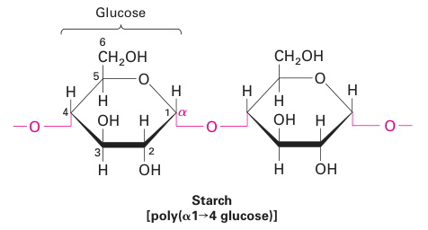
| Glucose | 葡萄糖 |
| Starch | 淀粉 |
叶绿体中的类囊体膜是植物光合作用的场所
叶绿体是透镜状的细胞器，直径约5 μm，宽约2.5 μm。它们含有约3000种不同的蛋白质，其中95%由细胞核编码，在胞质溶胶中合成，被输入该细胞器，然后运送到各自合适的膜或腔室（见第13章）。叶绿体由两层膜包被，这两层膜不含叶绿素，也不直接参与光驱动的ATP和NADPH生成（图12-37和图12-38）。与线粒体相同，叶绿体的外膜含有孔蛋白，因而对小分子量代谢物通透。内膜形成通透屏障，其中含转运蛋白，用以调节代谢物进出该细胞器的运动。
与线粒体不同，叶绿体含有第三层膜——类囊体膜——光驱动的ATP和NADPH生成就发生在该膜上。叶绿体的类囊体膜被认为构成一个单一的片层，该片层形成许多小的、相互连通的扁平结构，即类囊体，它们通常排列成垛叠，称为基粒（见图12-37）。所有类囊体内部的空间构成一个连续的单一腔室，即类囊体腔（见图12-38）。类囊体膜含有多种整合膜蛋白，这些蛋白结合着若干重要的辅基和吸光色素，其中最突出的是叶绿素。淀粉的合成与储存发生在基质中，即类囊体膜与内膜之间的水性腔室。在光合细菌中，质膜广泛内褶形成一组内部膜，也称为类囊体膜，光合作用即在此发生。
叶绿体含有大型DNA，常编码一百种以上蛋白质
与线粒体一样，叶绿体被认为是从一种祖先型内共生光合细菌演化而来的（见图12-7）。然而，产生叶绿体的内共生事件发生得比导致线粒体演化的事件更晚（12亿~15亿年前，而线粒体为15亿~22亿年前）。因此，当代叶绿体DNA的结构多样性低于线粒体DNA。同样与线粒体相似，叶绿体含有该细胞器DNA的多个拷贝以及核糖体，后者利用标准遗传密码合成一部分由叶绿体DNA编码的蛋白质。与植物线粒体DNA一样，叶绿体DNA仅通过母本（卵）以单亲方式遗传。其他叶绿体蛋白由核基因编码，在胞质溶胶核糖体上合成，然后被整合到该细胞器中（见第13章）。■
在高等植物中，叶绿体DNA分子长120~160 kb，因物种而异。植物叶绿体DNA是
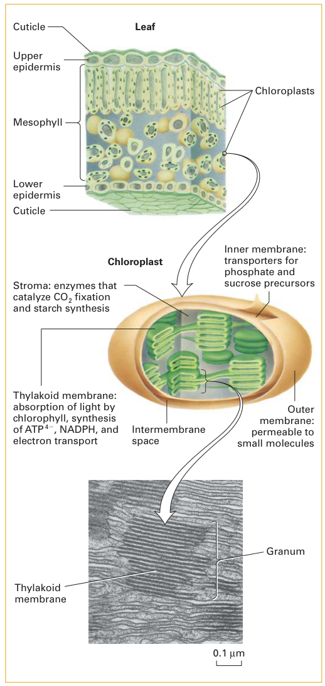
| Cuticle | 角质层 |
| Upper epidermis | 上表皮 |
| Mesophyll | 叶肉 |
| Lower epidermis | 下表皮 |
| Chloroplast | 叶绿体 |
| Inner membrane | 内膜 |
| Outer membrane | 外膜 |
| Intermembrane space | 膜间隙 |
| Stroma | 基质 |
| Granum | 基粒 |
| Thylakoid | 类囊体 |
| Thylakoid membrane | 类囊体膜 |
| Leaf | 叶 |
长的头尾相接的线性多联体，以及这些长线性分子之间的重组中间体。它们含120~135个基因，在重要的模式植物拟南芥（Arabidopsis thaliana）中为130个。拟南芥叶绿体DNA编码76个蛋白编码基因和54个产RNA产物（如rRNA和tRNA）的基因。叶绿体DNA编码一种类细菌RNA聚合酶的亚基，并且像细菌一样从多顺反子操纵子表达许多基因（见图5-13a）。一些叶绿体基因含内含子，但这些内含子类似于某些细菌基因以及真菌和原生动物线粒体基因中见到的特化内含子，而不是核基因的内含子。许多对叶绿体功能必需的基因在演化过程中已转移到植物的核基因组。根据对拟南芥和蓝细菌基因组序列分析的近期估计，有略少于4500个基因已从原始内共生体转移到核基因组。
人们已开发出与酵母细胞转化所用方法类似的技术（见第6章），用于将外源DNA稳定导入高等植物的叶绿体。每个细胞中大量的叶绿体DNA分子使得每个细胞可以导入数千个拷贝的工程基因，从而产生极高水平的外源蛋白，可与工程细菌所达到的水平相当。叶绿体转化已用于培育抗细菌和真菌感染、抗干旱、抗除草剂的植物，以及可用于制造人用药物（称为分子农业）的植物。首个此类分子农业药物于2012年在美国获批用于成人、2014年获批用于儿童，是一种治疗戈谢病（一种遗传病）的酶。这一方法还可能用于培育含有人类必需的全部氨基酸且含量高的粮食作物。■
光合作用四个阶段中的三个只在光照下发生
植物的光合作用过程可分为四个阶段（见图12-38），每个阶段定位于叶绿体中一个确定的区域：（1）吸收光、产生高能电子，并由H2O形成O2；（2）电子传递导致NADP+还原为NADPH，并产生质子动力势；（3）合成ATP；（4）将CO2转化为碳水化合物，通常称为固碳作用。将CO2掺入化学中间产物并进而将其转化为淀粉的酶是叶绿体基质中的可溶性组分；由三碳中间产物形成蔗糖的酶位于胞质溶胶中。光合作用的全部四个阶段紧密偶联并受到调控，以产生植物所需的碳水化合物量。阶段1~3中的所有反应都由类囊体膜中的多蛋白复合体催化。质子动力势的产生以及利用该质子动力势合成ATP，与线粒体氧化磷酸化的阶段III和IV相似。
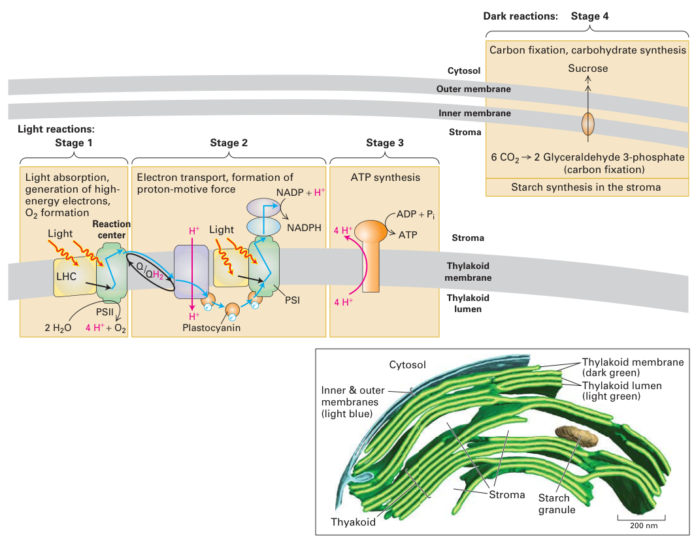
| Reaction center | 反应中心 |
| LHC | 捕光复合体（LHC） |
| PSI | 光系统I |
| PSII | 光系统II |
| Plastocyanin | 质体蓝素 |
| NADP+ | NADP+ |
| NADPH | NADPH |
| Sucrose | 蔗糖 |
| Starch granule | 淀粉颗粒 |
| Stroma | 基质 |
| Thylakoid lumen | 类囊体腔 |
| Thylakoid membrane | 类囊体膜 |
| Cytosol | 胞质溶胶 |
| Chlamydomonas reinhardtii | 莱茵衣藻 |
| Glyceraldehyde 3-phosphate | 甘油醛-3-磷酸 |
阶段1：吸收光能、产生高能电子并形成O2。光合作用的第一步是光被结合在类囊体膜蛋白质上的叶绿素吸收。与细胞色素的血红素组分一样，叶绿素由一个连接着长烃侧链的卟啉环构成（图12-39）。与血红素（见图12-20）不同，
叶绿素含有一个中心的Mg2+离子（而非Fe2+），并额外具有一个五元环。所吸收光能的最终用途是从供体（绿色植物中为水）夺取电子，形成氧气：
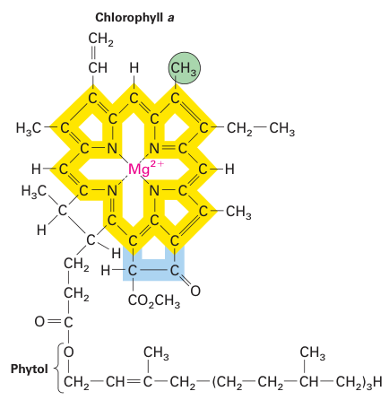
| Chlorophyll a | 叶绿素a |
| Phytol | 叶绿醇 |
这些电子被传递给初级电子受体——一种称为Q的醌，它类似于线粒体中的CoQ。在植物中，水的氧化发生在一个称为光系统II（PSII）的多蛋白复合体中。
量子力学确立，光作为一种电磁辐射，兼具波和粒子的性质。当光与物质相互作用时，它表现为称为光子的离散能量包（量子）。一个光子的能量与光波的频率成正比，因而与其波长成反比。因此，波长较短的光子能量较高。可见光的能量相当可观。波长为550 nm（550 × 10−7 cm）的光——阳光的典型波长——每摩尔光子约含52 kcal能量。如果全部能量都用于此目的，这足以由ADP和Pi合成数摩尔ATP。
阶段2：电子传递与质子动力势的产生。电子从醌类初级电子受体出发，经过一系列电子载体，直到抵达最终电子受体——通常是烟酰胺腺嘌呤二核苷酸磷酸（NADP+）的氧化型，将其还原为NADPH。NADP+的结构与NAD+相同，只是多一个磷酸基团。两种分子获得和失去
电子的方式相同（见图2-33）。在植物中，NADP+的还原发生在称为光系统I（PSI）的复合体中（图12-38）。类囊体膜中的电子传递与质子从基质向类囊体腔的运动相偶联，在膜两侧形成pH梯度（pH类囊体腔 < pH基质）。这一过程类似于电子传递过程中线粒体内膜和细菌膜上质子动力势的产生（见图12-29）。
因此，阶段1和阶段2的总反应可概括为
阶段3：合成ATP。质子顺其浓度梯度从类囊体腔经叶绿体F0F1复合体（ATP合酶）流回基质，该复合体将质子运动与由ADP和Pi合成ATP相偶联，正如我们在线粒体和细菌的ATP合酶中所见（见图12-31、12-32和12-34）。
阶段4：固碳作用。光合作用阶段2和阶段3所产生的NADPH和ATP提供能量和电子，驱动由CO2和H2O合成六碳糖聚合物。总化学方程式写作
产生固碳所用ATP和NADPH的反应直接依赖于光能，因此阶段1~3被称为光合作用的光反应。阶段4的反应间接依赖于光能；它们有时被称为光合作用的暗反应，因为它们可以在黑暗中进行，利用光能所产生的ATP和NADPH储备（见图12-38）。然而，阶段4的反应并不局限于黑暗；事实上，它们主要在光照期间发生。
光系统由反应中心及其缔合的捕光复合体组成
光能的吸收及其向化学能的转化发生在称为光系统的多蛋白复合体中。光系统存在于所有光合生物（无论是真核生物还是原核生物）中，由两个紧密连接的组分构成：反应中心，光合作用的原初事件——吸光和高能电子的产生——在此发生；以及天线复合体，由众多蛋白复合体组成，其中包括内部天线蛋白。每个光系统还与称为捕光复合体（LHC）的外部天线复合体缔合，后者由特化的蛋白质
构成，这些蛋白质捕获光能并高效地将其传递到反应中心，以产生高能电子（见图12-38）。
反应中心和天线都含有紧密结合的吸光色素分子。叶绿素a是参与光合作用的主要色素，它同时存在于反应中心和天线中。除叶绿素a外，天线还含有其他吸光色素：维管植物中的叶绿素b，以及植物和光合细菌中的类胡萝卜素。类胡萝卜素由带有交替单键和双键的长支链烃链构成；其结构与视觉色素视黄醛相似（见图15-19），后者在眼中吸收光。多种天线色素的存在——它们吸收不同波长的光——极大地拓展了可用于光合作用的吸光范围。
叶绿素和类胡萝卜素参与光合作用的最有力证据之一是，这些色素的吸收光谱与光合作用的作用光谱相似（图12-40）。后者衡量的是不同波长的光支持光合作用的相对能力。
| Action spectrum of photosynthesis | 光合作用的作用光谱 |
| Wavelength (nm) | 波长（nm） |
| Chlorophyll a | 叶绿素a |
| Chlorophyll b | 叶绿素b |
| β-Carotene | β-胡萝卜素 |
| Absorption of light | 光的吸收 |
| Relative rate of photosynthesis | 光合作用的相对速率 |
当叶绿素a（或任何其他分子）吸收可见光时，所吸收的光能使叶绿素a中的电子升到较高能量（激发）态。该态与基态（未激发态）的差别主要在于卟啉环C原子和N原子周围电子的分布。激发态不稳定，电子会通过若干相互竞争的过程之一回到基态。对于溶解在乙醇等有机溶剂中的叶绿素a分子，耗散激发态能量的主要反应是发光（荧光和磷光）和热发射（产热）。然而，当同样的叶绿素a结合在反应中心独特的蛋白质环境中时，激发态能量的耗散通过一种不同的过程发生，而这正是光合作用的关键。
从被激发的反应中心叶绿素a出发的光电子传递产生电荷分离
在反应中心内，两个相邻的叶绿素a分子（称为特殊对叶绿素）靠近类囊体膜的腔侧表面（图12-41）。
| Stroma | 基质 |
| Lumen | 腔 |
| Chlorophyll a | 叶绿素a |
| Reaction center | 反应中心 |
| Light | 光 |
| Strong oxidizing agent (electron acceptor) | 强氧化剂（电子受体） |
| Charge separation | 电荷分离 |
| Thylakoid membrane | 类囊体膜 |
| Primary electron acceptor Q | 初级电子受体Q |
| Strong reducing agent (electron donor) | 强还原剂（电子供体） |
| Stroma | 基质 |
| Lumen | 腔 |
| Thylakoid membrane | 类囊体膜 |
| Special-pair chlorophylls | 特殊对叶绿素 |
| LHC | 捕光复合体（LHC） |
| Light | 光 |
| Bridging chlorophyll | 桥连叶绿素 |
| Energy resonance transfer | 能量共振传递 |
| Reaction center | 反应中心 |
| 90° rotation | 旋转90° |
| Pisum sativum | 豌豆 |
当波长约680 nm的光子被这两个叶绿素a分子之一吸收时，该叶绿素a分子的能量增加42 kcal/mol（第一激发态）。这个被激发的分子迅速将一个电子捐给相邻的叶绿素，后者再将其传给一系列中间受体。这样，电子被迅速传递到初级电子受体——靠近类囊体膜基质侧表面的醌Q。这种光驱动的电子传递称为光电子传递，它依赖于反应中心内叶绿素和受体二者所处的独特环境。光电子传递几乎在每次吸收光子时都会发生，它在靠近类囊体膜腔侧表面（与基质相对的一侧）的叶绿素a上留下一个正电荷，并在基质侧表面附近产生一个还原型、带负电的受体（Q−）。
光电子传递所产生的Q−是一种强还原剂，极易将电子传递给另一个分子，最终传给NADP+。带正电的叶绿素a+是一种强氧化剂，它从腔侧表面的电子供体吸引一个电子，使原来的叶绿素a再生。在植物中，四个叶绿素a+分子的氧化能力经中间体传递，用于从结合在腔侧表面某位点的两个H2O分子中夺取四个电子，形成O2：
这些强效的生物学还原剂和氧化剂提供了驱动光合作用所有后续反应所需的全部能量：电子传递（阶段2）、ATP合成（阶段3）和CO2固定（阶段4）。
叶绿素a也在短于680 nm（因而能量更高）的离散波长处吸收光（见图12-40）。这种吸收将分子提升到若干激发态之一，其能量高于上述第一激发态；这些激发态在2 × 10−12秒（2皮秒，ps）内释放能量，衰变到能量较低的第一激发态，多余的能量以热的形式损失。由于光电子传递及由此产生的电荷分离只能从反应中心叶绿素a的第一激发态发生，因此量子产率——每个被吸收光子所对应的光合作用量——对短于680 nm的所有可见光波长都是相同的。光的波长与色素吸收光谱的匹配程度，决定了该光子被吸收的可能性有多大。一旦被吸收，光子的确切波长并不关键，只要它的能量足以把叶绿素a推入第一激发态即可。
内部天线和捕光复合体提高光合作用的效率
尽管反应中心内直接参与电荷分离和电子传递的特殊对叶绿素a分子能够直接吸收光并启动光合作用，但它们最常是以间接方式被激发的：由其他吸光和传能色素将能量传递给它们。这些其他色素（包括许多其他叶绿素）吸收光子并把能量传给特殊对叶绿素（图12-42）。其中一些色素结合在被视为光系统固有组分的蛋白亚基上——光系统由若干不同的蛋白链组成——因而被称为内部天线。另一些色素则被组装进与光系统核心蛋白结合但又与之不同的蛋白复合体，称为捕光复合体（LHC）。即使在光合生物所遇到的最大光强下（热带正午的阳光），每个反应中心叶绿素a分子每秒也仅吸收约一个光子，这不足以支持满足植物需求的光合作用。内部天线和LHC的参与，通过增加对680 nm光的吸收以及拓展其他天线色素所能吸收的光波长范围，大大提高了光合作用的效率，在更典型的光强下尤其如此。
光系统核心蛋白和LHC蛋白将色素分子维持在精确的取向和位置上，这些取向和位置对于吸光以及将能量快速（<10−9秒）传递给缔合反应中心中的某一个特殊对叶绿素a分子（称为共振传递）是最优的。共振能量传递不涉及电子的转移。对蓝细菌两个光系统之一（它们与多细胞种子植物中的光系统相似）的研究提示，来自
所吸收光的能量先被汇集到每个LHC中的一个"桥连"叶绿素，然后再传给反应中心里的特殊对叶绿素（见图12-42a）。然而令人惊讶的是，来自植物和蓝细菌的LHC的分子结构与来自绿色细菌和紫色细菌的LHC完全不同，尽管两类都含有类胡萝卜素和叶绿素。图12-42b展示了来自豌豆（Pisum sativum）的光系统I中叶绿素色素的分布，以及来自外周LHC天线的叶绿素。围绕反应中心的大量内部天线和LHC天线叶绿素，使所吸收的光能能够高效地传递给反应中心里的特殊对叶绿素。
尽管LHC天线叶绿素能够传递从光子吸收的光能，但它们不能释放电子。正如我们已经看到的，这一功能存在于两个反应中心叶绿素中。为了理解它们释放电子的能力，我们将在下一节考察细菌和植物光系统中反应中心的结构与功能。
- 植物光合作用的主要终产物是分子氧和六碳糖的聚合物（淀粉和蔗糖）。
- 光合作用的捕光反应和ATP生成反应发生在叶绿体内的类囊体膜上。包围叶绿体的通透性外膜和内膜不直接参与光合作用（见图12-37和图12-38）。
- 光合作用有四个阶段：（1）吸收光、产生高能电子，并由H2O形成O2；（2）电子传递导致NADP+还原为NADPH，并产生质子动力势；（3）合成ATP；（4）将CO2转化为碳水化合物（固碳作用）。
- 在光合作用的阶段1，光能被结合在类囊体膜反应中心蛋白上的两个"特殊对"叶绿素a分子之一吸收。被激发的叶绿素经中间体将一个电子捐给膜另一侧的醌，从而产生电荷分离（见图12-41）。在绿色植物中，带正电的叶绿素随后从水中夺取电子，形成分子氧（O2）。
- 在阶段2，电子从还原型醌出发，经与类囊体膜缔合的中间体传递，直到抵达最终电子受体（通常是NADP+），将其还原为NADPH。电子传递与质子跨膜从基质向类囊体腔的运动相偶联，在类囊体膜两侧形成pH梯度（质子动力势）。
- 在阶段3，质子顺其电化学梯度经F0F1复合体（ATP合酶）运动，为ADP和Pi合成ATP提供动力。
- 在阶段4，阶段2和阶段3所产生的NADPH和ATP提供能量和电子，驱动CO2的固定，从而合成碳水化合物。这些反应发生在类囊体基质和胞质溶胶中。
- 每个反应中心都缔合有多个内部天线和外部捕光复合体，它们含有叶绿素a和b、类胡萝卜素以及其他在多种波长处吸光的色素。能量（而不是电子）通过共振能量传递从内部天线和LHC叶绿素分子转移到反应中心里的特殊对叶绿素（见图12-42）。
12.7 光系统的分子分析
如前一节所述，绿色细菌和紫色细菌的光合作用不产生氧气，而蓝细菌、藻类和植物的光合作用则产生氧气。*这种差异源于后一类生物体内存在两类光系统（PS）：PSI把NADP+还原为NADPH，PSII则从H2O生成O2。相比之下，绿色细菌和紫色细菌只有一类光系统，不能生成O2。我们先讨论紫色细菌中较简单的光系统，然后再考察叶绿体中更复杂的光合机器。
紫色细菌的单一光系统产生质子动力势但不产生O2 紫色细菌质膜上光系统的电荷分离机制（图12-43）与前面概述的植物中的机制相同。反应中心蛋白含有在光合作用过程中吸收光并传递电子的辅基。这些辅基包括"特殊对"细菌叶绿素a分子，它们相当于植物中的反应中心
*另有一类利用光能的机制与之非常不同，仅见于某些古菌，由于它与这里描述的反应中心机制差别很大，因此不在此讨论。在这一机制中，吸收光子的质膜蛋白称为细菌视紫红质，它每吸收一个光子也会把一个质子从细胞质泵到细胞外空间。
叶绿素a分子，此外还包括几种其他色素和两个醌——称为QA和QB——它们在结构上与线粒体的泛醌相似。吸收的光能用于从反应中心的细菌叶绿素a分子上夺去一个电子，并经几种不同的色素把它传递给QA，这一系列反应极为迅速，耗时在4到200 ps之间。随后在最慢的一步，即在约200微秒（μs）内，电子从QA移动到初级电子受体QB，QB松散地结合在质膜胞质面的一个位点上。叶绿素由此获得一个正电荷，QB则获得一个负电荷。
细菌反应中心的初级电子受体QB接受一个电子后，形成QB
r−，在它被再次激发（例如通过吸收第二个光子或从天线分子接受能量转移）后，它从同一个反应中心叶绿素接受第二个电子。随后该醌从细胞质中结合两个质子，形成还原型醌（QH2），并从反应中心释放出来（见图12-43）。QH2在细菌膜内扩散到细胞色素bc1电子传递复合体胞质外面上的Qo位点，该复合体在结构上与线粒体的复合体III相似。在那里它把两个质子释放进质周空间（质膜与细菌细胞壁之间的空间），从而在质膜两侧产生质子动力势。同时，QH2释放它的两个电子，这两个电子穿过细胞色素bc1复合体的方式与图12-24中对线粒体复合体III（CoQH2-细胞色素c还原酶）所描绘的完全相同。细菌反应中心中的Q循环与线粒体中的Q循环一样，把额外的质子从细胞质泵入质周空间，从而增大质子动力势。
在质周空间中，接受从反应中心经细胞色素bc1复合体传来的电子的受体是一种可溶性细胞色素，即单电子载体，它从Fe3+态还原为Fe2+态（见图12-43）。还原型细胞色素（相当于线粒体中的细胞色素c）随后扩散到一个反应中心，在那里把电子释放给带正电的叶绿素a+，使该叶绿素回到不带电的基态，细胞色素则回到Fe3+态。这种循环式电子流不产生氧，也不产生还原型辅酶，但它产生了质子动力势。
与其他系统一样，这种质子动力势既被位于细菌质膜中的F0F1复合体用于合成ATP，也被转运蛋白用来逆浓度梯度把分子跨膜运输。
叶绿体含有两个功能与空间分布上截然不同的光系统
20世纪40年代，生物物理学家R. Emerson发现，用波长700 nm的光产生的植物光合作用速率，可通过叠加波长更短（能量更高）的光而大大提高。他发现，把
| Cytosol | 细胞质 |
| Periplasmic space | 质周空间 |
| Plasma membrane | 质膜 |
| Bacterial reaction center | 细菌反应中心 |
| Special-pair chlorophylls | 特殊对叶绿素 |
| Cytochrome bc1 complex | 细胞色素bc1复合体 |
| F0F1 complex | F0F1复合体 |
| Q cycle: additional proton transport | Q循环：额外的质子转运 |
| ATP | ATP |
| Pi | Pi |
| QA | 醌A（QA） |
| QB | 醌B（QB） |
| Ph | 脱镁叶绿素（Ph） |
| Qo site | Qo位点 |
| Qi site | Qi位点 |
比如600 nm和700 nm的光组合起来，所支持的光合作用速率高于这两个波长单独作用时的速率之和。这一所谓的爱默生效应使研究者得出结论：植物的光合作用涉及两个独立光系统的相互作用，它们被称为PSI和PSII。PSI由700 nm或更短波长的光驱动；PSII则只由波长更短的光（<680 nm）驱动。
在叶绿体中，在PSI和PSII中启动光电子传递的特殊对反应中心叶绿素，因其蛋白质环境不同而具有不同的最大吸收波长。因此，这些叶绿素常被记为P680（PSII）和P700（PSI）。与细菌反应中心一样，每个叶绿体反应中心都与多个内部天线和捕光复合体相连；与PSII相连的LHC（如LHCII）和与PSI相连的LHC（如LHCI）含有不同的蛋白质。此外，两个光系统在类囊体膜中的分布也不同：PSII主要位于堆叠的类囊体区域（基粒，见图12-37），而PSI主要位于非堆叠区域。类囊体膜的堆叠可能源于与PSII相连的蛋白质——尤其是LHCII——的结合特性。
最后，也是最重要的一点，两个叶绿体光系统在功能上差异显著（图12-44）：只有PSII氧化水生成分子氧，而只有PSI把电子传递给最终电子受体
NADP+。叶绿体中的光合作用可经由这两个光系统走线性途径或循环途径。我们先讨论的线性途径既能支持固碳作用，也能支持ATP合成。相比之下，循环途径只支持ATP合成，不产生可用于固碳的还原型NADPH。进行光合作用的藻类和蓝细菌含有两个与叶绿体中类似的光系统。植物和光合细菌中的光系统I和II由相似的蛋白质和色素组成。
经由植物两个光系统的线性电子流产生质子动力势、O2和NADPH
叶绿体中的线性电子流按严格的顺序依次涉及PSII和PSI，电子从H2O传递给NADP+（见图12-44）。该过程始于PSII吸收一个光子，使一个电子从P680叶绿素a移动到基质面上的受体质体醌（QB）。由此生成的氧化型P680
+从不太情愿的供体H2O上夺去一个电子，生成O2形成途径中的一个中间体（我们稍后就会看到），同时生成一个质子，该质子留在类囊体腔中，对质子动力势有贡献。P680吸收第二个光子后，半醌Qr−接受第二个电子并从基质空间获取两个质子，生成QH2。
| Plastocyanin | 质体蓝素 |
| Stroma | 基质 |
| Lumen | 类囊体腔 |
| Thylakoid membrane | 类囊体膜 |
| PSII reaction center | PSII反应中心 |
| P680 chlorophyll | P680叶绿素 |
| PSI reaction center | PSI反应中心 |
| P700 chlorophyll | P700叶绿素 |
| Cytochrome bf complex | 细胞色素bf复合体 |
| Oxygen-evolving complex | 放氧复合体 |
| H2O | H2O |
| NADP+ | NADP+ |
| NADPH | NADPH |
| Ferredoxin | 铁氧还蛋白 |
| Ferredoxin-NADP+ reductase | 铁氧还蛋白-NADP+还原酶 |
QH2在膜中扩散后，结合到细胞色素bf复合体上的Qo位点，该复合体类似于细菌的细胞色素bc1复合体，也类似于线粒体的复合体III。与这些系统一样，这里运行Q循环（见图12-24），从而增大电子传递产生的质子动力势。细胞色素bf复合体从QH2接受电子后，把它们逐个转移给可溶性电子载体质体蓝素的Cu2+形式（类似于细胞色素c），使其还原为Cu1+形式。还原型质体蓝素随后在类囊体腔中扩散，把电子带给PSI。
PSI吸收一个光子导致反应中心叶绿素a——P700——失去一个电子（见图12-44）。由此生成的氧化型P700
+被一个来源于PSII的质体蓝素电子还原。这一过程同样类似于线粒体中的电子传递链（见图12-22）。在类囊体腔面被P700接受、并被光子吸收赋予能量的电子，在PSI内经由若干载体移动到类囊体膜的基质面，在那里被铁氧还蛋白——一种铁硫（Fe-S）蛋白——接受。在线性电子流中，PSI中被激发的电子从铁氧还蛋白经铁氧还蛋白-NADP+还原酶（FNR）传递。
该酶利用辅基FAD作为电子载体还原NADP+，并与从基质中获取的一个质子一起形成还原型分子NADPH。线性电子流途径至此完成。
类囊体膜中的F0F1复合体利用线性电子流过程中产生的质子动力势，在膜的基质侧合成ATP。因此，该途径利用PSII和PSI及其天线所吸收的多个光子的能量，在叶绿体基质中同时生成NADPH和ATP，它们在基质中用于固碳作用。
放氧复合体位于PSII反应中心的类囊体腔面
PSII反应中心中的光电子传递（见图12-44）类似于前面描述的紫色细菌反应中心中的传递（见图12-43）。被波长<680 nm的光子激发会引发P680叶绿素失去一个电子。该电子被迅速传递给一个醌（QA），然后传给类囊体基质面上的初级电子受体QB
（见图12-44）。不过，PSII与细菌反应中心的不同之处在于，它还有一个额外的由三种蛋白质组成的亚基——放氧复合体，朝向类囊体腔（在这里，"放氧"指从水生成O2）。
PSII中被光化学氧化的特殊对反应中心叶绿素a，即P680
+，是已知最强的生物氧化剂。P680
+的还原电位比H2O更正，因此它能把H2O氧化，生成O2和H+离子。H2O的氧化为PSII中P680
+的还原提供电子，从而补上光吸收所释放的电子。放氧复合体是一种蛋白质，含有一个锰（Mn）、钙和氧的簇（Mn4CaO5），直接介导H2O向O2的转化，此外还含有一个结合态Cl−离子，影响反应速率（见图12-44）。在O2生成过程中，Mn离子在五种不同的氧化态之间循环。附近的一个酪氨酸侧链帮助把电子从H2O转移给P680
+。从H2O释放的质子留在类囊体腔中。氧化两分子H2O生成O2需要移去四个电子，但PSII每吸收一个光子只转移一个电子。因此，单个PSII必须连续四次失去电子并氧化放氧复合体，才能形成一个O2分子。有人提出，放氧复合体蛋白中的通道可作为穿过该复合体的管道，把H2O送到活性位点并把O2从活性位点移走。
除草剂阿特拉津是美国农业中最常用的除草剂之一。阿特拉津结合PSII，阻断氧化型QB的结合，从而阻断下游的电子传递。
多种机制保护细胞免受光电子传递过程中活性氧的损伤
正如我们前面在线粒体中看到的，电子传递过程中产生的活性氧（ROS）（见图12-35）既可充当调节细胞器功能的信号，也会损伤多种生物分子。叶绿体也是如此。例如，过氧化氢（H2O2）能调节遭受干旱胁迫的植物的气体交换孔（气孔）以防止脱水，并调控循环式电子流，我们稍后将描述这一过程。
尽管PSI和PSII光系统及其相连的捕光复合体在把辐射能转化为ATP和NADPH形式的可用化学能方面效率极高，它们并非完美无缺。取决于光的强度和细胞的生理状态，捕光天线和反应中心中的叶绿素所吸收的能量中，有相对较小但不可忽视的一部分会使叶绿素转变成一种称为三重态叶绿素的活化状态。在这种状态下，叶绿素能把部分能量转移给分子氧（O2），使其从正常的、相对不活泼的基态——称为三重态氧（3O2）——转变为
一种反应性极强的（ROS）单线态，即1O2。一部分1O2可用于向细胞核发出信号，把叶绿体的代谢状态告知细胞其余部分。然而，如果大部分1O2没有通过与专门的1O2"清除分子"反应而被迅速淬灭，它就会与附近的分子反应，并通常使其受损。这种损伤称为光抑制，可降低类囊体活动的效率。
类胡萝卜素（不饱和异戊二烯基团的聚合物，包括使胡萝卜呈橙色的β-胡萝卜素）和α-生育酚（维生素E的一种形式）是疏水小分子，已知作为1O2的淬灭剂发挥保护植物的重要作用。例如，用除草剂pyrazolynate抑制单细胞绿藻莱茵衣藻中生育酚的合成，会导致光诱导的光抑制加重。类胡萝卜素在紧邻危险的三重态叶绿素时能非常高效地抽走其能量，是防止1O2形成方面数量上最重要的分子。来自蓝细菌嗜热聚球藻的PSII单体含有约11个类胡萝卜素分子，而叶绿素有35个，这表明类胡萝卜素介导的1O2淬灭十分重要。
在强光照射下，PSII光系统特别容易产生1O2，而PSI则会产生其他ROS，包括超氧物、过氧化氢和羟自由基。PSII反应中心的一个蛋白亚基——称为D1——即使在弱光条件下也会几乎持续地受到1O2介导的损伤。受损的反应中心从基粒移动到类囊体的非堆叠区域，在那里D1亚基被一种蛋白酶降解，并由新合成的D1蛋白替换，这一过程称为D1蛋白损伤-修复循环。这种对受损D1的快速替换需要高速率的D1合成，有助于PSII从光抑制中恢复并维持足够的活性。损伤-修复循环中的一个重要组分是HSP70家族的一种伴侣蛋白（见第3章），称为HSP70B。该伴侣蛋白结合受损的PSII，在D1亚基被替换的过程中帮助防止复合体其他组分的丢失。光抑制的程度可取决于叶绿体可利用的HSP70B的量。
经由PSI的循环式电子流产生质子动力势，但不产生NADPH或O2 正如我们所见，在线性电子流中，PSI中还原型铁氧还蛋白上的电子被传递给NADP+，从而产生NADPH（见图12-44）。然而在某些情况下，特别是当植物受到干旱、高光强或低二氧化碳水平等条件胁迫时，细胞必须产生相对于NADPH更大量的ATP，超过线性电子流所能产生的量。为此，它们通过光合作用从PSI产生ATP，而不伴随NADPH的产生。这是由一个依赖PSI、不依赖PSII的过程完成的，称为循环式光合磷酸化，或
| Plastocyanin | 质体蓝素 |
| NADH dehydrogenase–like complex | NADH脱氢酶样复合体 |
| NADH dehydrogenase–like complex-dependent | 依赖NADH脱氢酶样复合体的途径 |
| PGR5-PGRL1 dependent | 依赖PGR5-PGRL1的途径 |
| PGR5 | PGR5 |
| PGRL1 | PGRL1 |
| LHC | 捕光复合体（LHC） |
| Cytochrome bf complex | 细胞色素bf复合体 |
| QH2 | QH2 |
| Q cycle: additional proton transport | Q循环：额外的质子转运 |
| PSI reaction center | PSI反应中心 |
| P700 chlorophyll | P700叶绿素 |
| Ferredoxin | 铁氧还蛋白 |
| Ferredoxin-NADP+ reductase | 铁氧还蛋白-NADP+还原酶 |
| F0F1 complex | F0F1复合体 |
循环式电子流（图12-45）。在这一过程中，电子在PSI、铁氧还蛋白、质体醌（Q）和细胞色素bf复合体之间循环，绕过了PSI处通常生成NADPH的铁氧还蛋白-NADP+还原酶。因此，在循环式电子流中，质子泵送使得可以合成额外的ATP，但不产生净NADPH，也没有H2O的氧化产生O2。
在高等植物中，有两条控制ATP:NADPH比值的循环式电子流途径（见图12-45）。主要途径是依赖PGR5-PGRL1的途径，我们稍后将要描述；该途径保证高效的光合作用并保护植物抵抗胁迫。次要途径是依赖NADH脱氢酶样复合体的途径，它似乎响应胁迫，并且是H2O2介导调控的靶点。NADH脱氢酶样复合体是一个非常大的多蛋白复合体，在形状和组成上与线粒体复合体I非常相似（见图12-22），后者在把Q还原为QH2的同时氧化NADPH或NADH。然而，NADH脱氢酶样复合体似乎缺少NADPH氧化所必需的亚基。
在循环式电子流中，由PSI中的光吸收和光电传递产生的高能电子，从PSI的铁氧还蛋白亚基转移给PGR5-PGRL1异二聚体，或转移给NADH脱氢酶样复合体。确实有证据表明，这两个电子受体各自独立地与PSI结合成
由LHC亚基介导的超复合体。这两个电子受体随后都把Q还原为QH2，QH2再经由Q循环把质子和电子递送给细胞色素bf复合体，正如我们前面在线性电子流中描述的那样（见图12-44）。质子由细胞色素bf复合体、也可能由NADH脱氢酶样复合体跨类囊体膜转运进类囊体腔。最后，质体蓝素把电子从细胞色素bf复合体送回PSI，从而完成循环。这种循环式电子流类似于紫色细菌单一光系统中发生的循环过程（见图12-43）。循环式电子流产生的质子动力势驱动F0F1复合体（ATP合酶）合成ATP，从而提高ATP:NADPH比值。
光系统I和II的相对活性受到调控
叶绿体通过改变PSI和PSII的相对输出来响应环境光的波长和强度变化（这些变化源于一天中的时间、云量等），以维持ATP和NADPH生成的适当平衡。由于PSII优先位于堆叠的基粒中，而PSI优先位于非堆叠的类囊体膜中，为使两者在线性电子流中依次起作用，必须控制传递给这两个反应中心的光能量，使每个中心
| PSI | PSI |
| PSII | PSII |
| LHCI | LHCI |
| LHCII | LHCII |
| ATP synthase | ATP合酶 |
| NADPH | NADPH |
| Fd | 铁氧还蛋白（Fd） |
| FNR | 铁氧还蛋白-NADP+还原酶（FNR） |
| Super-supercomplex | 超超复合体 |
| Carbohydrate synthesis | 糖类合成 |
| No carbohydrate synthesis | 无糖类合成 |
| State 1, linear electron flow | 状态1，线性电子流 |
| State 2, cyclic electron flow | 状态2，循环式电子流 |
| PSII membrane domains (stacked) | PSII膜区（堆叠） |
| PSI membrane domains (unstacked) | PSI膜区（非堆叠） |
激活相同数目的电子。这种平衡状态称为状态1（图12-46a）。如果两个光系统受到的激发不相等，PSI中就会发生循环式电子流，PSII的活性则降低（状态2）。
调控PSI和PSII相对活性的一个机制是类囊体膜蛋白（包括PSII和LHCII）的磷酸化和去磷酸化，由若干蛋白激酶和蛋白磷酸酶介导。磷酸化状态的变化——尤其是LHCII的——会改变该天线复合体在类囊体膜内的分布（基粒膜与非堆叠膜之间），从而改变它与PSI和PSII的差异相互作用。LHCII与某个光系统结合得越多，该系统被光激活的效率就越高，对电子流的贡献也越大。
在某些条件下，LHCII的非磷酸化形式优先与PSII结合，而磷酸化形式则在类囊体膜中从基粒扩散到非堆叠区域，并与PSI结合，其结合程度高于非磷酸化形式。当光照条件使PSII优先吸收光时，会导致
LHCII激酶的激活、LHCII磷酸化的增加、PSI相对于PSII的补偿性激活增强，从而使状态2下的循环式电子流增加（见图12-46a）。当把绿藻莱茵衣藻强制转入状态2时，可以分离出一个"超超复合体"，它含有PSI、LHCI、LHCII、Cyt bf、铁氧还蛋白（Fd）、铁氧还蛋白-NADP+还原酶（FNR）以及参与循环式电子流的整合膜蛋白PGRL1，但不含PGR5（图12-46b）。因此，电子传递链的高效运行似乎伴随着功能复合体在体积和复杂性上不断增加的进化，从单个蛋白到复合体，到超复合体，再到超超复合体。
调节植物中光系统的超分子组织，其效果是把它们导向ATP生成（状态2）或导向还原当量（NADPH）和ATP的生成（状态1），具体取决于环境光照条件和植物的代谢需求。把CO2转化为蔗糖或淀粉需要NADPH和ATP，这是光合作用的第四阶段，我们将在本章最后一节中讨论。
- 在紫色细菌的单一光系统中，由光激发的反应中心特殊对叶绿素a分子引发的循环式电子流产生质子动力势，该质子动力势主要用于驱动质膜中F0F1复合体合成ATP（见图12-43）。
- 植物含有两个光系统PSI和PSII，它们功能不同，并在类囊体膜中在空间上彼此分离。PSII把H2O转化为O2，PSI把NADP+还原为NADPH。蓝细菌有两个类似的光系统。
- 在叶绿体中，捕光复合体（LHC）吸收的光能被传递给反应中心中的叶绿素a分子（PSII中为P680，PSI中为P700）。
- 电子经由细菌光系统中存在的相同载体流过PSII。与细菌系统不同，PSII中被光化学氧化的P680+由H2O生成O2过程中产生的电子重新生成P680（见图12-44，左）。
- 在线性电子流中，PSI中被光化学氧化的P700+被从PSII经细胞色素bf复合体和可溶性质体蓝素传递来的电子还原，重新生成P700。PSI受激发后从P700释放的电子经由若干载体最终被传递到NADP+，生成NADPH（见图12-44，右）。
- 叶绿体中色素对光的吸收可产生活性氧（ROS），包括单线态氧1O2和过氧化氢H2O2。少量时它们被用作胞内信号分子；大量时则可能有害。类胡萝卜素等小分子清除剂和抗氧化酶有助于防止ROS引起的损伤；然而单线态氧对PSII的D1亚基的损伤仍会发生，导致光抑制。一种HSP70伴侣蛋白帮助PSII从这种损伤中恢复。
- 与同时需要PSII和PSI的线性电子流不同，植物中的循环式电子流只涉及PSI。在该途径中既不生成NADPH，也不生成O2，但会产生质子动力势。
- 捕光复合体II（LHCII）的可逆磷酸化和去磷酸化控制类囊体膜中光合装置的功能组织。状态1有利于线性电子流，而状态2有利于循环式电子流（见图12-46）。循环式电子流似乎涉及非常大的超超复合体。
12.8 光合作用中的CO2代谢
叶绿体在绿叶中执行许多代谢反应。除CO2固定——把
气态CO2掺入小分子有机化合物、进而掺入糖类——之外，几乎全部氨基酸、全部脂肪酸和胡萝卜素、全部嘧啶以及可能全部嘌呤的合成都发生在叶绿体中。然而，由CO2合成糖类是植物细胞中研究得最深入的生物合成途径。我们先来考察这一独特途径，即卡尔文循环（以发现者Melvin Calvin命名），它把CO2固定成三碳化合物，所需动力来自ATP水解和NADPH氧化释放的能量。
Rubisco在叶绿体基质中固定CO2
核酮糖-1,5-二磷酸羧化酶（rubisco）把CO2掺入前体分子，这些前体分子随后被转化为糖类。Rubisco位于叶绿体的基质中。这种酶把CO2加到五碳糖核酮糖-1,5-二磷酸上，生成两分子三碳化合物3-磷酸甘油酸（图12-47）。Rubisco是一种大酶（约500 kDa），其最常见的形式由8个相同的大亚基和8个相同的小亚基组成。其中一种亚基由叶绿体DNA编码，另一种由核DNA编码。由于rubisco的催化速率相当低，需要许多份该酶才能固定足够的CO2。事实上，这种酶占叶绿体中可溶性蛋白的近50%，被认为是地球上最丰富的蛋白质。据估计，rubisco每年固定的来自大气的CO2超过10^11吨。
当光合藻类接受一短暂脉冲的14C标记CO2、随后细胞被迅速破碎时，3-磷酸甘油酸最快被放射性标记，且全部放射性都出现在羧基中。由于CO2最初被掺入的是一种三碳化合物，卡尔文循环也被称为固碳的C3途径（图12-48）。
rubisco生成的3-磷酸甘油酸的命运很复杂：一部分被转化为己糖，进而掺入淀粉或蔗糖，另一部分则用于再生核酮糖-1,5-二磷酸。从3-磷酸甘油酸再生核酮糖-1,5-二磷酸至少需要9种酶。rubisco每生成12分子3-磷酸甘油酸（共36个C原子），其中2分子（6个C原子）被转化为2分子甘油醛-3-磷酸（随后转化为1分子己糖），而另外10分子（30个C原子）被转化为6分子核酮糖-1,5-二磷酸（图12-48，上）。固定6分子CO2并净生成2分子甘油醛-3-磷酸，需要消耗光合作用中需光过程产生的18个ATP和12个NADPH。
利用已固定CO2合成蔗糖的过程在胞质溶胶中完成
甘油醛-3-磷酸在叶绿体基质中生成后，与磷酸交换被转运到胞质溶胶。蔗糖合成的最后几步（图12-48，下）发生在叶细胞的胞质溶胶中。
| Ribulose 1,5-bisphosphate | 核酮糖-1,5-二磷酸 |
| Enzyme-bound intermediate | 酶结合中间体 |
| 3-Phosphoglycerate | 3-磷酸甘油酸 |
当细胞大量输出蔗糖时，叶绿体内膜中的磷酸/甘油醛-3-磷酸反向转运体把已固定的CO2（以甘油醛-3-磷酸的形式）运入胞质溶胶。除非有磷酸输入叶绿体，以替换以甘油醛-3-磷酸形式从基质中运出的磷酸，否则已固定的CO2不会离开叶绿体。在由甘油醛-3-磷酸合成蔗糖的过程中，无机磷酸基团被释放出来（图12-48，左下）。因此，蔗糖合成通过为反向转运体提供磷酸，促进了更多甘油醛-3-磷酸从叶绿体转运到胞质溶胶。值得注意的是，甘油醛-3-磷酸是糖酵解的中间产物，而甘油醛-3-磷酸转化为己糖的机制几乎与糖酵解中的机制相反。
淀粉的合成更为复杂。用于构建大型淀粉聚合物的关键单体底物是ADP-葡萄糖。这种聚合反应发生在基质中，淀粉聚合物以紧密堆积的结晶聚集体的形式储存在那里，这些聚集体称为颗粒（见图12-37）。催化由葡萄糖-1-磷酸和ATP生成ADP-葡萄糖的酶在基质和胞质溶胶中都存在，这表明各种结构的己糖会被从胞质溶胶输入基质，用于淀粉合成。
光和Rubisco活化酶促进CO2固定
催化CO2固定的卡尔文循环酶在黑暗中会迅速失活，从而把黑暗中生成的ATP（例如通过分解淀粉产生）节省下来，用于其他合成反应，如脂质和氨基酸的生物合成。促成这种调控的一种机制是若干卡尔文循环酶对pH的依赖性。由于在光电子传递过程中质子从基质被转运进类囊体腔（见图12-44），基质的pH会从黑暗中的约7升高到光照下的约8。若干卡尔文循环酶在较高pH下活性增强，这促进了光照下的CO2固定。
一种名为硫氧还蛋白（Tx）的基质蛋白也在调控某些卡尔文循环酶方面发挥作用。在黑暗中，硫氧还蛋白含有一个二硫键；在光照下，电子从PSI经铁氧还蛋白传递给硫氧还蛋白，使其二硫键被还原：
还原型硫氧还蛋白随后通过还原这些酶中的二硫键，激活若干卡尔文循环酶。在黑暗中，硫氧还蛋白被重新氧化时，这些酶也随之被重新氧化而失活。因此，这些酶的活性对基质的氧化还原状态敏感，而后者又对光敏感——这是一种由光调控酶活性的精巧机制。
Rubisco就是这样一种对光/氧化还原敏感的酶，不过它的调控非常复杂，尚未完全弄清。在高浓度CO2和Mg2+存在时，rubisco会自发活化。活化反应需要把CO2共价加到该酶活性位点中一个赖氨酸的侧链氨基上，形成氨基甲酸酯基团，该基团随后结合一个Mg2+离子，而Mg2+是酶活性所必需的。然而在正常条件下，即CO2处于环境水平时，这一反应很慢，通常需要rubisco活化酶催化，后者是AAA+家族ATP酶的一员。Rubisco活化酶水解ATP，并利用释放的能量清理rubisco的活性位点，使CO2能够加到其活性位点的赖氨酸上。Rubisco活化酶还加速rubisco的一种活化构象变化（从无活性的闭合状态转变为有活性的开放状态）。在某些物种中，至少部分地正是硫氧还蛋白对rubisco活化酶的调控，造成了rubisco对光/氧化还原的敏感性。此外，rubisco活化酶的活性对ATP与ADP之比敏感。如果该比值低（ADP相对较高），活化酶就不会活化rubisco（于是细胞就会少消耗
| 3-Phosphoglycerate | 3-磷酸甘油酸 |
| 1,3-Bisphosphoglycerate | 1,3-二磷酸甘油酸 |
| Glyceraldehyde 3-phosphate | 甘油醛-3-磷酸 |
| Ribulose 1,5-bisphosphate | 核酮糖-1,5-二磷酸 |
| Ribulose 5-phosphate | 核酮糖-5-磷酸 |
| Fructose 1,6-bisphosphate | 果糖-1,6-二磷酸 |
| Fructose 6-phosphate | 果糖-6-磷酸 |
| Glucose 1-phosphate | 葡萄糖-1-磷酸 |
| Sucrose | 蔗糖 |
| UDP-glucose | UDP-葡萄糖 |
| Inner chloroplast membrane | 叶绿体内膜 |
| Phosphate-triosephosphate antiport protein | 磷酸/磷酸丙糖反向转运蛋白 |
| Stroma | 基质 |
| Cytosol | 胞质溶胶 |
| CO2 fixation (Calvin cycle) | CO2固定（卡尔文循环） |
其稀缺的ATP来固定碳）。光合作用对多种典型的植物胁迫敏感——中等程度的高温、低温、干旱（水分有限）、高盐、强光和紫外线辐射。其中至少有一些胁迫是通过降低rubisco活化酶（进而降低rubisco）的活性来影响CO2固定的。CO2固定受抑制会减少NADPH的消耗。在强光条件下，高NADPH/NADP+比会减少流向NADP+的电子流，增加向O2的电子泄漏，导致活性氧（ROS）生成增多，这既能启动细胞信号通路，又会干扰多种细胞过程。鉴于rubisco在控制能量利用和碳通量中起关键作用——无论在单个叶绿体中，还是从某种意义上说在整个生物圈中——它的活性受到严格调控就毫不奇怪了。
光呼吸与固碳竞争，在C4植物中减弱
如上所述，作为光合作用的一部分，rubisco催化把CO2掺入核酮糖-1,5-二磷酸。它还能以同一底物——核酮糖-1,5-二磷酸——催化第二个不同且相互竞争的反应，不过以O2代替CO2作为第二底物，这一过程称为光呼吸（图12-49）。这第二个反应的产物是一分子3-磷酸甘油酸和一分子二碳化合物磷酸乙醇酸。当环境CO2浓度相对较高时，固碳反应占优势；而当CO2低、O2相对
| Ribulose 1,5-bisphosphate | 核酮糖-1,5-二磷酸 |
| 3-Phosphoglycerate | 3-磷酸甘油酸 |
| Phosphoglycolate | 磷酸乙醇酸 |
| Glycolate | 乙醇酸 |
| Glycerate | 甘油酸 |
| Sugars | 糖类 |
| CO2 fixation | CO2固定 |
| Photorespiration | 光呼吸 |
高时，光呼吸占优势。光呼吸在光照下发生，消耗O2，并把核酮糖-1,5-二磷酸部分地转化为CO2。如图12-49所示，光呼吸对植物的能量收支是一种浪费：它消耗ATP和O2，并产生CO2却不固定碳。事实上，当CO2低而O2高时，卡尔文循环固定的CO2有很大一部分因光呼吸而损失。这种由rubisco催化的、令人意外且浪费的替代反应，可能是该酶在特异性结合相对缺乏特征的CO2分子上固有困难的后果，也可能是CO2和O2都能与同一个初始的酶/核酮糖-1,5-二磷酸中间体反应并生成不同产物的结果。
在炎热干燥的环境中，过度的光呼吸可能成为植物的一大问题，因为此时它们必须在大部分时间里关闭叶片上的气体交换孔（气孔），以防止水分过度丢失。结果是叶片内的CO2水平可能降到rubisco对CO2的Km以下。在这种情况下，光合作用速率减慢，光呼吸大大占优，植物就可能面临固定CO2量不足的危险。玉米、甘蔗、马唐以及其他能在炎热干燥环境中生长的植物，演化出了一种避免该问题的方法：采用两步式的CO2固定途径，其中在卡尔文循环之前有一个囤积CO2的步骤。该途径被命名为C4途径，因为[14C]CO2标记显示，这一途径中光合作用产生的最初的放射性分子是四碳化合物（如草酰乙酸和苹果酸），而不是启动卡尔文循环（C3途径）的三碳分子。
| Phosphoenolpyruvate carboxylase | PEP羧化酶 |
| Pyruvate-phosphate dikinase | 丙酮酸-磷酸双激酶 |
| Mesophyll cell | 叶肉细胞 |
| Bundle sheath cell | 维管束鞘细胞 |
| Oxaloacetate | 草酰乙酸 |
| Phosphoenolpyruvate | 磷酸烯醇式丙酮酸 |
| Malate | 苹果酸 |
| Pyruvate | 丙酮酸 |
| Calvin cycle | 卡尔文循环 |
| Vascular bundle | 维管束 |
| Epidermis | 表皮 |
| Chloroplast | 叶绿体 |
| Air space | 气腔 |
| Stoma | 气孔 |
| Sucrose | 蔗糖 |
C4途径涉及两类细胞：叶肉细胞，它们与叶片内部的气腔相邻；以及维管束鞘细胞，它们围绕维管组织，与叶肉细胞所暴露的高氧环境相隔绝（图12-50a）。在C4植物的叶肉细胞中，磷酸烯醇式丙酮酸（一种由丙酮酸衍生的三碳分子）与CO2反应生成四碳化合物草酰乙酸（图12-50b）。催化这一反应的酶是磷酸烯醇式丙酮酸羧化酶（PEP羧化酶），它几乎只存在于C4植物中，而且与rubisco不同，它对O2不敏感。该总体反应
即由丙酮酸生成草酰乙酸，涉及一个ATP的水解，且ΔG为负。因此，即使CO2浓度很低，CO2固定也能进行。叶肉细胞中生成的草酰乙酸被还原为苹果酸，后者由一种特殊的转运体转运到维管束鞘细胞，在那里CO2通过脱羧被释放出来，进入卡尔文循环（见图12-50b）。
由于CO2从叶肉细胞被转运过来，C4植物维管束鞘细胞中的CO2浓度远高于正常大气中的浓度。维管束鞘细胞还有一个不同寻常之处：它们缺少PSII，只
进行由PSI催化的循环式电子流，因此不释放O2。维管束鞘细胞中高CO2、低O2的浓度有利于rubisco固定CO2生成3-磷酸甘油酸，并抑制光呼吸。
相比之下，大气中高浓度的O2有利于C3植物叶肉细胞中的光呼吸（图12-49中的途径2）；其结果是，C3植物中由rubisco固定的碳可能有多达50%被重新氧化为CO2。C4植物在利用可利用CO2的能力上优于C3植物，因为C4植物的酶——磷酸烯醇式丙酮酸羧化酶——对CO2的亲和力高于rubisco。然而，在循环式的C4过程中（由丙酮酸生成磷酸烯醇式丙酮酸），一个ATP被转化为一个AMP；因此，由NADPH和ATP光合生产糖类的总体效率低于仅用卡尔文循环固定CO2的C3植物。尽管如此，由于消除了光呼吸造成的损失，C4禾本科植物（如玉米或甘蔗）的净光合速率可以达到其他方面相似的C3禾本科植物（如小麦、水稻或燕麦）的两到三倍。
在光合作用的两种碳水化合物产物中，淀粉留在C3植物的叶肉细胞和C4植物的维管束鞘细胞中。在这些细胞里，淀粉主要在黑暗中经历糖酵解，生成ATP、NADH以及一些小分子，用作合成氨基酸、脂质和其他细胞组分的构件。相比之下，蔗糖则从光合细胞输出，被运输到植物各处。
- 在卡尔文循环中，CO2通过一系列发生在叶绿体基质中的反应被掺入（即固定）到有机分子中。起始反应由rubisco催化，生成三碳中间产物3-磷酸甘油酸。循环中生成的甘油醛-3-磷酸有一部分被转运到胞质溶胶并转化为蔗糖（见图12-48）。
- 若干卡尔文循环酶的依赖光的活化以及其他机制，增强了光照下的CO2固定。基质的氧化还原状态在这一调控中起关键作用，rubisco活化酶对rubisco活性的调控也是如此。
- 在C3植物中，卡尔文循环固定的CO2有相当一部分会因光呼吸而损失；光呼吸是一种由rubisco催化的浪费性反应，在低CO2和高O2水平下占优势（见图12-49）。
- 在C4植物中，CO2先在外层叶肉细胞中与磷酸烯醇式丙酮酸反应而被固定。这样生成的四个碳的分子被穿梭运送到内层的维管束鞘细胞，在那里CO2被释放出来，随后用于卡尔文循环。C4植物的光呼吸速率远低于C3植物。
访问LaunchPad可获取学习工具并进一步了解本章内容。
关键术语
复习题
- 1.质子动力势对线粒体和叶绿体的功能都必不可少。质子动力势由什么产生？它与ATP是什么关系？化合物2,4-二硝基苯酚（DNP）曾在20世纪30年代用作减肥药，后来被发现具有危险的副作用，它能让质子跨膜扩散。为什么服用DNP很危险？
- 2.线粒体和叶绿体被认为是从有核细胞中的共生细菌演化而来。本章中有哪些实验证据支持这一假说？
- 3.线粒体内膜表现出典型细胞膜的全部基本特征，但它还具有若干与其在氧化磷酸化中的作用密切相关的独特性质。这些独特性质是什么？它们各自如何促成内膜的功能？
- 4.从葡萄糖最大限度地生成ATP涉及糖酵解、柠檬酸循环和电子传递链的反应。这些反应中哪一种需要O2？为什么？在某些生物或某些生理条件下，哪一种可以在无O2时进行？
- 5.发酵使细胞在无氧时仍能继续从葡萄糖中获取能量。如果葡萄糖分解代谢本身是厌氧的，为什么糖酵解要继续进行还需要发酵？
- 6.描述细胞质中来自葡萄糖分解代谢的电子被传递到线粒体内膜上电子传递链的逐步过程。回答时说明每一步的电子传递是直接的还是间接的。
- 7.线粒体的脂肪酸氧化是ATP的主要来源，但脂肪酸也可以在其他地方被氧化。除线粒体外，哪种细胞器能氧化脂肪酸？该细胞器中的氧化与线粒体氧化之间的根本区别是什么？
- 8.线粒体中的每一种细胞色素都含辅基。什么是辅基？细胞色素所带的是哪一类辅基？各种细胞色素的什么性质保证了电子沿电子传递链单向流动？
- 9.电子传递链由若干多蛋白复合体组成，它们协同把电子从NADH等电子载体传给O2。这些复合体在ATP合成中起什么作用？已证明呼吸体含有呼吸所需的全部蛋白质组分。为什么这对ATP合成有利？超级复合体的存在已通过实验证实，请举出一种验证方式。辅酶Q（CoQ）不是蛋白质，而是一种小的疏水分子。CoQ是疏水分子，为什么这对电子传递链的功能很重要？
- 10.据估计，NADH给出的每一对电子约导致合成3分子ATP，而FADH2给出的每一对电子约导致合成2分子ATP。FADH2与NADH所给电子的产额差异，其根本原因是什么？
- 11.描述线粒体中ATP合酶各组分的主要功能。有一种结构相似的酶负责溶酶体和内体的酸化。根据你所了解的ATP合成机制，解释这种酸化是如何发生的。
- 12.我们对ATP合酶的许多认识来自对好氧细菌的研究。这些生物为何对这项研究有用？在它们体内，糖酵解、柠檬酸循环和电子传递链的反应分别发生在哪里？好氧细菌中质子动力势在哪里产生？在这些生物中还有哪些细胞过程依赖质子动力势？
- 13.线粒体内膜的一项重要功能是充当选择性通透屏障，阻挡水溶性分子的移动，从而在膜两侧形成不同的化学环境。然而，氧化磷酸化的许多底物和产物都是水溶性的，必须穿过内膜。这种转运是如何进行的？
- 14.在线粒体、叶绿体和细菌的电子传递链中，Q循环都起主要作用。Q循环的功能是什么？它如何完成这一功能？在线粒体、紫色细菌和叶绿体中，各有哪些电子传递组分参与Q循环？
- 15.判断正误：既然ATP在叶绿体中生成，能进行光合作用的细胞就不需要线粒体。请解释。说出并描述那个解释线粒体和叶绿体如何在真核细胞中起源的学说。
- 16.写出产氧光合作用的总反应式。解释下面这句话：光合作用产生的O2只是该途径生成糖类和ATP的副产物。
- 17.光合作用可分为多个阶段。光合作用有哪些阶段？各发生在叶绿体的什么部位？光合作用产生的蔗糖在哪里生成？
- 18.负责吸收光能的光系统各由两个相连的组分构成：反应中心和天线复合体。在光吸收过程中，这两个组分的色素组成和各自作用是什么？有哪些证据表明这些组分中的色素参与了光合作用？
- 19.绿色细菌和紫色细菌的光合作用不产生O2。为什么？这些生物如何仍能利用光合作用生成ATP？在这些生物中，什么分子充当电子供体？
- 20.叶绿体含有两个光系统。各自的功能是什么？就线性电子流而言，画出从光子吸收到NADPH形成的电子流向。以NADPH形式储存的能量用于合成什么？
- 21.卡尔文循环中固定CO2的反应在黑暗中不能进行。可能的原因是什么？这些反应如何受光调控？
- 22.被称为地球上最丰富蛋白质的rubisco，在利用光合作用的生物合成糖类的过程中起关键作用。rubisco是什么？它位于何处？起什么作用？
参考文献
从葡萄糖获取能量的第一步：糖酵解
Berg, J., J. Tymoczko, and L. Stryer. 2012. Biochemistry, 7th ed. W. H. Freeman and Company. Chaps. 16–20.
Dasgupta, T., et al. 2014. A fundamental trade-off in covalent switching and its circumvention by enzyme bifunctionality in glu- cose homeostasis. J. Biol. Chem.289:13010–13025.
Depre, C., M. Rider, and L. Hue. 1998. Mechanisms of control of heart glycolysis. Eur. J. Biochem.258:277–290.
Fersht, A. 1999. Structure and Mechanism in Protein Science: A Guide to Enzyme Catalysis and Protein Folding. W. H. Freeman and Company.
Fothergill-Gilmore, L. A., and P. A. Michels. 1993. Evolution of glycolysis. Prog. Biophys. Mol. Biol. 59:105–135.
Nelson, D. L., and M. M. Cox. 2000. Lehninger Principles of Biochemistry. Worth. Chaps. 14–17, 19.
Pilkis, S. J., et al. 1995. 6-Phosphofructo-2-kinase/fructose-2,6- bisphosphatase: a metabolic signaling enzyme. Annu. Rev. Biochem. 64:799–835.
线粒体的结构与功能
Ahn, C. S., and C. M. Metallo. 2015. Mitochondria as biosyn- thetic factories for cancer proliferation. Cancer Metab.J3:1.
Bonawitz, N. D., D. A. Clayton, and G. S. Shadel. 2006. Initia- tion and beyond: multiple functions of the human mitochondrial transcription machinery. Mol. Cell24:813–825.
Canfield, D. E. 2005. The early history of atmospheric oxygen: homage to Robert M. Garrels. Annu. Rev. Earth Pl. Sc.33:1–36.
Friedman J. R., et al. 2011. ER tubules mark sites of mitochon- drial division. Science334:358.
Giorgi, C., et al. 2015. Mitochondria-associated membranes: composition, molecular mechanisms, and physiopathological impli- cations. Antioxid. Redox. Signal.22:995–1019.
Kamer, K. J., Y. Sancak, and V. K. Mootha. 2014. The uni- porter: from newly identified parts to function. Biochem. Bioph. Res. Co.449:370–372.
Kaufman, R. J., and J. D. Malhotra. 2014. Calcium traffick- ing integrates endoplasmic reticulum function with mitochondrial bioenergetics. Biochim. Biophys. Acta 1843:2233–2239.
Las, G., and O. S. Shirihai. 2014. Miro1: new wheels for trans- ferring mitochondria. EMBO J.33:939–941.
Mishra, P., and D. C. Chan. 2014. Mitochondrial dynamics and inheritance during cell division, development and disease. Nat. Rev. Mol. Cell Biol.15:634–646.
Miyawaki, A., et al.1997. Fluorescent indicators for Ca2+ based on green fluorescent proteins and calmodulin. Nature388:882–887.
Song, M., and G. W. Dorn II. 2015. Mitoconfusion: noncanoni- cal functioning of dynamism factors in static mitochondria of the heart. Cell Metab.21:195–205.
Spät, A., et al. 2008. High- and low-calcium-dependent mecha- nisms of mitochondrial calcium signalling. Cell Calcium44:51–63.
Tan, A. S., et al. 2015. Mitochondrial genome acquisition re- stores respiratory function and tumorigenic potential of cancer cells without mitochondrial DNA. Cell Metab. 21:81–94.
Vance, J. E. 2014. MAM (mitochondria-associated membranes) in mammalian cells: lipids and beyond. Biochim. Biophys. Acta 1841:595–609.
van der Merwe, C., et al. 2015. Evidence for a common biologi- cal pathway linking three Parkinson's disease-causing genes: parkin, PINK1 and DJ-1. Eur. J. Neurosci.41:1113–1125.
Wang, X., and H. H. Gerdes. 2015. Transfer of mitochondria via tunneling nanotubes rescues apoptotic PC12 cells. Cell Death Differ.22:1181–1191.
柠檬酸循环与脂肪酸氧化
Canfield, D. E. 2005. The early history of atmospheric oxygen: homage to Robert M. Garrels. Annu. Rev. Earth Pl. Sc.33:1–36.
Chan, D. C. 2006. Mitochondria: dynamic organelles in disease, aging, and development. Cell125(7):1241–1252.
Eaton, S., K. Bartlett, and M. Pourfarzam. 1996. Mammalian mitochondrial beta-oxidation. Biochem. J.320 (Part 2):345–557.
Guest, J. R., and G. C. Russell. 1992. Complexes and com- plexities of the citric acid cycle in Escherichia coli.Curr. Top. Cell. Regul. 33:231–247.
Krebs, H. A. 1970. The history of the tricarboxylic acid cycle. Perspect. Biol. Med. 14:154–170.
Rasmussen, B., and R. Wolfe. 1999. Regulation of fatty acid oxidation in skeletal muscle. Annu. Rev. Nutr.19:463–484.
Velot, C., et al. 1997. Model of a quinary structure between Krebs TCA cycle enzymes: a model for the metabolon. Biochemistry 36:14271–14276.
Wanders, R. J., and H. R. Waterham. 2006. Biochemistry of mammalian peroxisomes revisited. Annu. Rev. Biochem.75:295–332.
电子传递链与质子动力势的生成
Acin-Pérez, R., et al. 2008. Respiratory active mitochondrial supercomplexes. Mol. Cell32:529–539.
Babcock, G. 1999. How oxygen is activated and reduced in respiration. P. Natl. Acad. Sci. USA96:12971–12973.
Beinert, H., R. Holm, and E. Münck. 1997. Iron-sulfur clusters: nature’s modular, multipurpose structures. Science 277:653–659.
Brandt, U. 2006. Energy converting NADH:quinone oxidore- ductase (complex I). Annu. Rev. Biochem.75:165–187.
Brandt, U., and B. Trumpower. 1994. The protonmotive Q cycle in mitochondria and bacteria. Crit. Rev. Biochem. Mol. 29:165–197.
Daiber, A. 2010. Redox signaling (cross-talk) from and to mito- chondria involves mitochondrial pores and reactive oxygen species. Biochim. Biophys. Acta6–7:897–906.
Darrouzet, E., et al. 2001. Large scale domain movement in cy- tochrome bc1: a new device for electron transfer in proteins. Trends Biochem. Sci.26:445–451.
Dickinson, B. C., D. Srikun, and C. J. Chang. 2010. Mitochondrial- targeted fluorescent probes for reactive oxygen species. Curr. Opin. Chem. Biol.14:50–56.
Dudkina, N. V., I. M. Folea, and E. J. Boekema. 2015. Towards structural and functional characterization of photosynthetic and mitochondrial supercomplexes. Micron 72:39–51.
Efremov, R. G., R. Baradaran, and L. A. Sazanov. 2010. The architecture of respiratory complex I. Nature465:441–445.
Finkel, T. 2011. Signal transduction by reactive oxygen species. J. Cell Biol.194:7–15.
Grigorieff, N. 1999. Structure of the respiratory NADH:ubiquinone oxidoreductase (complex I). Curr. Opin. Struct. Biol.9:476–483.
Hosler, J. P., S. Ferguson-Miller, and D. A. Mills. 2006. Energy transduction: proton transfer through the respiratory complexes. Annu. Rev. Biochem.75:165–187.
Hunte, C., V. Zickermann, and U. Brandt. 2010. Functional modules and structural basis of conformational coupling in mito- chondrial complex I. Science329:448–451.
Hyde, B. B., G. Twig, and O. S. Shirihai. 2010. Organellar vs cellular control of mitochondrial dynamics. Semin. Cell Dev. Biol. 21:575–581.
Koopman, W. J., et al. 2010. Mammalian mitochondrial com- plex I: biogenesis, regulation, and reactive oxygen species genera- tion. Antioxid. Redox Signal. 12:1431–1470.
Michel, H., et al. 1998. Cytochrome c oxidase. Annu. Rev. Bioph. Biom. 27:329–356.
Mitchell, P. 1979. Keilin’s respiratory chain concept and its chemi- osmotic consequences. Science 206:1148–1159. (Nobel Prize lecture.)
Murphy, M. P. 2009. How mitochondria produce reactive oxy- gen species. Biochem. J.417:1–13.
Ramirez, B. E., et al. 1995. The currents of life: the terminal electron-transfer complex of respiration. P. Natl. Acad. Sci. USA 92:11949–11951.
Ruitenberg, M., et al. 2002. Reduction of cytochrome c oxidase by a second electron leads to proton translocation. Nature417:99–102.
Saraste, M. 1999. Oxidative phosphorylation at the fin de siècle. Science283:1488–1492.
Schafer, E., et al. 2006. Architecture of active mammalian respi- ratory chain supercomplexes. J. Biol. Chem.281(22):15370–15375.
Schultz, B., and S. Chan. 2001. Structures and proton-pumping strategies of mitochondrial respiratory enzymes. Annu. Rev. Bioph. Biom.30:23–65.
Sheeran, F. L., and S. Pepe. 2006. Energy deficiency in the failing heart: linking increased reactive oxygen species and disrup- tion of oxidative phosphorylation rate. Biochim. Biophys. Acta 1757(5–6):543–552.
Sies, H. 2014. Role of metabolic H2O2 generation: redox signal- ing and oxidative stress. J. Biol. Chem.289:8735–8741.
Tsukihara, T., et al. 1996. The whole structure of the 13-subunit oxidized cytochrome c oxidase at 2.8 Å. Science272:1136–1144.
Walker, J. E. 1995. Determination of the structures of respira- tory enzyme complexes from mammalian mitochondria. Biochim. Biophys. Acta1271:221–227.
Wallace, D. C. 2005. A mitochondrial paradigm of metabolic and degenerative diseases, aging, and cancer: a dawn for evolution- ary medicine. Annu. Rev. Genet.39:359–407.
Xia, D., et al. 1997. Crystal structure of the cytochrome bc1 complex from bovine heart mitochondria. Science277:60–66.
Zaslavsky, D., and R. Gennis. 2000. Proton pumping by cyto- chrome oxidase: progress and postulates. Biochim. Biophys. Acta 1458:164–179.
Zhang, M., E. Mileykovskaya, and W. Dowhan. 2005. Cardiolipin is essential for organization of complexes III and IV into a supercomplex in intact yeast mitochondria. J. Biol. Chem. 280(33):29403–29408.
Zhang, Z., et al. 1998. Electron transfer by domain movement in cytochrome bc1. Nature392:677–684.
利用质子动力势合成ATP
Aksimentiev, A., et al. 2004. Insights into the molecular mechanism of rotation in the F0 sector of ATP synthase. Biophys. J. 86(3):1332–1344.
Allegretti, M., et al. 2015. Horizontal membrane-intrinsic α-helices in the stator α-subunit of an F-type ATP synthase. Nature 521:237–240.
Bianchet, M. A., et al. 1998. The 2.8 Å structure of rat liver F1-ATPase: configuration of a critical intermediate in ATP synthesis/ hydrolysis. P. Natl. Acad. Sci. USA 95:11065–11070.
Boyer, P. D. 1997. The ATP synthase—a splendid molecular machine. Annu. Rev. Biochem. 66:717–749.
Capaldi, R., and R. Aggeler. 2002. Mechanism of the F0F1-type ATP synthase—a biological rotary motor. Trends Biochem. Sci. 27:154–160.
Elston, T., H. Wang, and G. Oster. 1998. Energy transduction in ATP synthase. Nature391:510–512.
Hinkle, P. C. 2005. P/O ratios of mitochondrial oxidative phos- phorylation. Biochim. Biophys. Acta1706(1–2):1–11.
Junge, W., and N. Nelson. 2015. ATP synthase. Annu. Rev. Biochem.84:631–657.
Junge, W., S. Hendrik, and S. Engelbrecht. 2009. Torque gen- eration and elastic power transmission in the rotary F0F1-ATPase. Nature 459:364–370.
Kinosita, K., et al. 1998. F1-ATPase: a rotary motor made of a single molecule. Cell93:21–24.
Klingenberg, M., and S. Huang. 1999. Structure and function of the uncoupling protein from brown adipose tissue. Biochim. Biophys. Acta1415:271–296.
Nury, H., et al. 2006. Relations between structure and func- tion of the mitochondrial ADP/ATP carrier. Annu. Rev. Biochem. 75:713–741.
Oliveira, A. S., et al. 2014. Exploring O2 diffusion in A-type cytochrome c oxidases: molecular dynamics simulations uncover two alternative channels towards the binuclear site. PLoS Comput. Biol.10:e1004010.
Rosen, E. D., and B. M. Spiegelman. 2014. What we talk about when we talk about fat. Cell156:20–44.
Sharma, V., et al. 2015. Role of subunit III and its lipids in the molecular mechanism of cytochrome c oxidase. Biochim. Biophys. Acta1847:690–697.
Tsunoda, S., et al. 2001. Rotation of the c subunit oligomer in fully functional F0F1 ATP synthase. P. Natl. Acad. Sci. USA 98:898–902.
Vercesi, A. E., et al. 2006. Plant uncoupling mitochondrial proteins. Annu. Rev. Plant Biol.57:383–404.
von Ballmoos, C., A. Wiedenmann, and P. Dimroth. 2009. Essentials for ATP synthesis by F1F0 ATP synthases. Annu. Rev. Biochem.78:649–672.
Wu, J., H. Jun, and J. R. McDermott. 2015. Formation and activation of thermogenic fat. Trends Genet.31:232–238.
Yasuda, R., et al. 2001. Resolution of distinct rotational substeps by submillisecond kinetic analysis of F1-ATPase. Nature 410:898–904.
光合作用与吸光色素
Bendich, A. J. 2004. Circular chloroplast chromosomes: the grand illusion. Plant Cell 16:1661–1666.
Ben-Shem, A., F. Frolow, and N. Nelson. 2003. Crystal struc- ture of plant photosystem I. Nature 426(6967):630–635.
Blankenship, R. E. 2002. Molecular Mechanisms of Photosyn- thesis. Blackwell.
Deisenhofer, J., and J. R. Norris, eds. 1993. The Photosynthetic Reaction Center. Vols. 1 and 2. Academic Press.
McDermott, G., et al. 1995. Crystal structure of an integral membrane light-harvesting complex from photosynthetic bacteria. Nature 364:517.
Nelson, N., and C. F. Yocum. 2006. Structure and function of photosystems I and II. Annu. Rev. Plant Biol.57:521–565.
Prince, R. 1996. Photosynthesis: the Z-scheme revisited. Trends Biochem. Sci. 21:121–122.
Wollman, F. A. 2001. State transitions reveal the dynam- ics and flexibility of the photosynthetic apparatus. EMBO J. 20:3623–3630.
光系统的分子分析
Allen, J. F. 2002. Photosynthesis of ATP—electrons, proton pumps, rotors, and poise. Cell110:273–276.
Amunts, A., et al. 2010. Structure determination and improved model of plant photosystem I. J. Biol. Chem. 285:3478–3486.
Aro, E. M., I. Virgin, and B. Andersson. 1993. Photoinhibi- tion of photosystem II: Inactivation, protein damage, and turnover. Biochim. Biophys. Acta1143:113–134.
Deisenhofer, J., and H. Michel. 1989. The photosynthetic reac- tion center from the purple bacterium Rhodopseudomonas viridis. Science245:1463–1473. (Nobel Prize lecture.)
Deisenhofer, J., and H. Michel. 1991. Structures of bacterial photosynthetic reaction centers. Annu. Rev. Cell Biol.7:1–23.
Dekker, J. P., and E. J. Boekema. 2005. Supramolecular orga- nization of thylakoid membrane proteins in green plants. Biochim. Biophys. Acta1706(1–2):12–39.
Finazzi, G. 2005. The central role of the green alga Chlamydo- monas reinhardtii in revealing the mechanism of state transitions J. Exp. Bot.56(411):383–388.
Guskov, A., et al. 2010. Recent progress in the crystallographic studies of photosystem II. ChemPhysChem.11(6):1160–1171.
Haldrup, A., et al. 2001. Balance of power: a view of the mechanism of photosynthetic state transitions. Trends Plant Sci. 6:301–305.
Hankamer, B., J. Barber, and E. Boekema. 1997. Structure and membrane organization of photosystem II from green plants. Annu. Rev. Plant Phys. 48:641–672.
Heathcote, P., P. Fyfe, and M. Jones. 2002. Reaction centres: the structure and evolution of biological solar power. Trends Bio- chem. Sci.27:79–87.
Horton, P., A. Ruban, and R. Walters. 1996. Regulation of light harvesting in green plants. Annu. Rev. Plant Phys.47:655–684.
Iwai, M., et al. 2010. Isolation of the elusive supercomplex that drives cyclic electron flow in photosynthesis. Nature464: 1210–1213.
Joliot, P., and A. Joliot. 2005. Quantification of cyclic and lin- ear flows in plants. P. Natl. Acad. Sci. USA102(13):4913–4918.
Jordan, P., et al. 2001. Three-dimensional structure of cyano- bacterial photosystem I at 2.5 Å resolution. Nature411:909–917.
Kühlbrandt, W. 2001. Chlorophylls galore. Nature411:896–898.
Martin, J. L., and M. H. Vos. 1992. Femtosecond biology. Annu. Rev. Bioph. Biom.21:199–222.
Nelson, N., and W. Junge. 2015. Structure and energy transfer in photosystems of oxygenic photosynthesis. Annu. Rev. Biochem. 84:659–683.
Penner-Hahn, J. 1998. Structural characterization of the Mn site in the photosynthetic oxygen-evolving complex. Struct. Bond. 90:1–36.
Shikanai, T. 2014. Central role of cyclic electron transport around photosystem I in the regulation of photosynthesis. Curr. Opin. Biotech.26:25–30.
Suga, M., et al. 2015. Native structure of photosystem II at 1.95 Å resolution viewed by femtosecond X-ray pulses. Nature 517:99–103.
Tomizioli, M., et al. 2014. Deciphering thylakoid sub- compartments using a mass spectrometry-based approach. Mol. Cell. Proteomics13:2147–2167.
Tommos, C., and G. Babcock. 1998. Oxygen production in na- ture: a light-driven metalloradical enzyme process. Accounts Chem. Res. 31:18–25.
光合作用中的CO2代谢
Buchanan, B. B. 1991. Regulation of CO2 assimilation in oxy- genic photosynthesis: the ferredoxin/thioredoxin system. Perspec- tive on its discovery, present status, and future development. Arch. Biochem. Biophys.288:1–9.
Gutteridge, S., and J. Pierce. 2006. A unified theory for the basis of the limitations of the primary reaction of photosynthetic CO2 fixation: was Dr. Pangloss right? P. Natl. Acad. Sci. USA 103:7203– 7204.
Mueller-Cajar, O., M. Stotz, and A. Bracher. 2014. Maintaining photosynthetic CO2 fixation via protein remodelling: the Rubisco activases. Photosynth. Res. 119:191–201.
Portis, A. 1992. Regulation of ribulose 1,5-bisphosphate car- boxylase/oxygenase activity. Annu. Rev. Plant Phys.43:415–437.
Rawsthorne, S. 1992. Towards an understanding of C3-C4 pho- tosynthesis. Essays Biochem.27:135–146.
Rokka, A., I. Zhang, and E.-M. Aro. 2001. Rubisco activase: an enzyme with a temperature-dependent dual function? Plant J. 25:463–472.
Sage, R., and J. Colemana. 2001. Effects of low atmospheric CO2 on plants: more than a thing of the past. Trends Plant Sci. 6:18–24.
Schneider, G., Y. Lindqvist, and C. I. Branden. 1992. Rubisco: structure and mechanism. Annu. Rev. Bioph. Biom.21:119–153.
Tcherkez, G. G., G. D. Farquhar, and T. J. Andrews. 2006. Despite slow catalysis and confused substrate specificity, all ribulose bisphosphate carboxylases may be nearly perfectly optimized. P. Natl. Acad. Sci. USA103(19):7246–7251.
Wolosiuk, R. A., M. A. Ballicora, and K. Hagelin. 1993. The reductive pentose phosphate cycle for photosynthetic CO2 assimila- tion: enzyme modulation. FASEB J. 7:622–637.